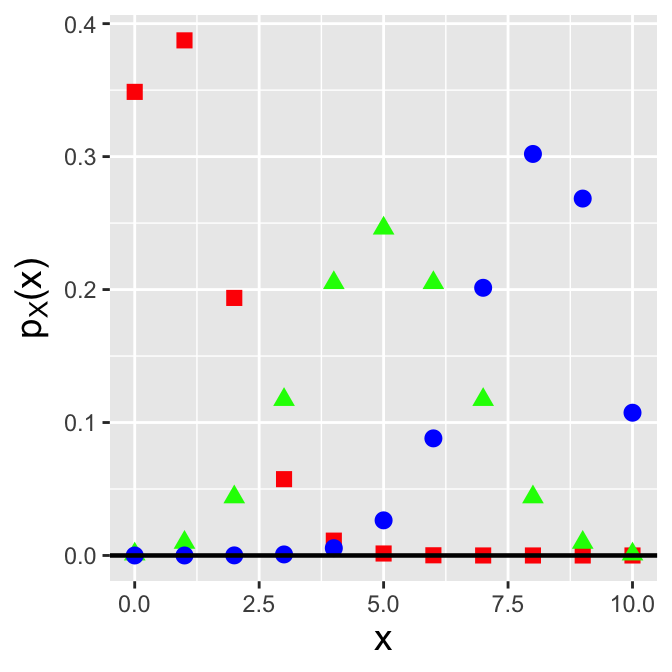
3 The Binomial (and Related) Distributions
In this chapter, we illustrate probability and statistical inference concepts utilizing the binomial distribution, which governs the data that arise from binomial experiments: experiments with two discrete outcomes (like coin flips). Just like the normal distribution is the most commonly utilized continuous distribution in data analyses, the binomial is the most commonly utilized discrete distribution.
Let’s assume we are holding a coin. It may be a fair coin (meaning that the probabilities of observing heads or tails in a given flip of the coin are each 0.5)…or perhaps it is not. We decide that we are going to flip the coin some fixed number of times \(k\), and we will record the outcome of each flip: \[ \mathbf{Y} = \{Y_1,Y_2,\ldots,Y_k\} \,. \] Here, e.g., \(Y_1 = 1\) if we observe heads or \(0\) if we observe tails. This is an example of a Bernoulli process, where “process” denotes a sequence of observations, and “Bernoulli” indicates that there are two possible discrete outcomes for each observation.
A binomial experiment is one that generates Bernoulli process data through the running of \(k\) trials (e.g., \(k\) separate coin flips). The properties of such an experiment are that:
- The number of trials \(k\) is fixed in advance.
- Each trial has two possible outcomes, typically denoted as \(S\) (success) or \(F\) (failure).
- A trial may have no more than one realized outcome.
- The outcome of any one trial is independent of the outcomes of the others.
- The probability of success \(p\) remains constant throughout the experiment.
The random variable of interest for a binomial experiment, \(X\), is the total number of observed successes.
Now, about the probability of success remaining \(p\) throughout the experiment: binomial experiments rely on sampling with replacement…if we observe a head for a given coin flip, we can observe heads again in the future. In the real world, however, the reader will observe experiments in which data are sampled from finite, tangible populations without replacement. In such a situation, one would be carrying out a hypergeometric experiment, with data that are governed by the hypergeometric distribution. (See the section on related distributions below.)
Regarding the fourth point above, about the outcome of each trial being independent of the outcomes of the others: in a general process, each datum can be dependent on the data observed previously. How each datum is dependent on previous data defines the type of process that is observed: a Markov process, a Gaussian process, etc. A Bernoulli process is termed a memoryless process because it is comprised of independent data: e.g., what we observe on the next coin flip will not depend on what we have just observed on the current coin flip.
3.1 Binomial Distribution: Probability Mass Function
What to take away from this section:
The binomial distribution is a discrete distribution with a probability mass function whose shape and location along the real-number line is governed by two parameters: \(k\), the number of binomial trials, and \(p\), the expected proportion of “successes” observed over the \(k\) trials.
The shape of the binomial probability mass function tends to that of the normal when \(k\) is larger and \(p\) is sufficiently far from being 0 or 1, which has historically led analysts to utilize a normal approximation when making statistical inferences…but with computers, we can now easily make exact ones.
Let’s focus first on the outcome of a binomial experiment, with the random variable \(X\) being the number of observed successes in \(k\) trials. What is the probability of observing \(X=x\) successes, if the probability of observing a success in any one trial is \(p\)? We might start by noting that we have \[\begin{align*} \mbox{$x$ successes}&: p^x \\ \mbox{$k-x$ failures}&: (1-p)^{k-x} \,, \end{align*}\] and thus (because of independence) we would simply multiply the two probabilities together: \(P(X=x) = p^x (1-p)^{k-x}\). But, no, this isn’t quite right. Let’s start again and think this through. Assume \(k = 2\). The sample space of possible experimental outcomes is \[ \Omega = \{ SS, SF, FS, FF \} \,. \] If \(p\) = 0.5, then we can see that the probability of observing one success in two trials is 0.5…but our proposed probability mass function tells us that \(P(X=1) = (0.5)^1 (1-0.5)^1 = 0.25\). What are we missing? We are missing that there are two ways of observing a single success…and we need to count both. Because we ultimately do not care about the order in which successes and failures are observed, we utilize counting via combination: \[ \binom{k}{x} = \frac{k!}{x! (k-x)!} \,, \] where the exclamation point represents the factorial function \(x! = x(x-1)(x-2)\cdots 1\). So now we can correctly write down the binomial probability mass function: \[ P(X=x) = p_X(x) = \binom{k}{x} p^x (1-p)^{k-x} ~~~ x \in \{0,\ldots,k\} \,. \] We denote the distribution of the random variable \(X\) as \(X \sim\) Binomial(\(k\),\(p\)). Note that when \(k = 1\), we have a Bernoulli distribution.
Recall: a probability mass function is one way to represent a discrete probability distribution, and it has the properties (a) \(0 \leq p_X(x) \leq 1\) and (b) \(\sum_x p_X(x) = 1\), where the sum is over all values of \(x\) in the distribution’s domain.
(The reader should note that the number of trials is commonly denoted in textbooks as \(n\), not \(k\). However, since \(n\) is typically used to denote the sample size in an experiment, we will use \(k\) to denote the number of trials in this text to avoid any confusion.)
In Figure 3.1, we display three binomial pmfs, one each for probabilities of success 0.1 (red squares, to the left), 0.5 (green triangles, in the center), and 0.8 (blue circles, to the right). This figure indicates an important aspect of the binomial pmf, namely that it can attain a shape like that of a normal distribution. In fact, a binomial random variable converges in distribution to a normal random variable in certain limiting situations, as we show in an example below.
Recall: the expected value of a discretely distributed random variable is \[ E[X] = \sum_x x p_X(x) \,, \] where the sum is over all values of \(x\) within the domain of the pmf \(p_X(x)\). The expected value is equivalent to a weighted average, with the weight for each possible value of \(x\) being \(p_X(x)\).
For the binomial distribution, the expected value is \[ E[X] = \sum_{x=0}^k x \binom{k}{x} p^x (1-p)^{k-x} \,. \] At first, this does not appear to be easy to evaluate. One trick in our mathematical arsenal is to pull constants out of the summation such that whatever is left as the summand is a pmf (and thus sums to 1). Let’s try this here: \[\begin{align*} E[X] &= \sum_{x=0}^k x \binom{k}{x} p^x (1-p)^{k-x} = \sum_{x=1}^k x \frac{k!}{x!(k-x)!} p^x (1-p)^{k-x} \\ &= \sum_{x=1}^k \frac{k!}{(x-1)!(k-x)!} p^x (1-p)^{k-x} \\ &= kp \sum_{x=1}^k \frac{(k-1)!}{(x-1)!(k-x)!} p^{x-1} (1-p)^{k-x} \,. \end{align*}\] The summation appears almost like that of a binomial random variable. Let’s set \(y = x-1\). Then \[\begin{align*} E[X] &= kp \sum_{x=1}^k \frac{(k-1)!}{(x-1)!(k-x)!} p^{x-1} (1-p)^{k-x} \\ &= kp \sum_{y=0}^{k-1} \frac{(k-1)!}{y!(k-(y+1))!} p^y (1-p)^{k-(y+1)} \\ &= kp \sum_{y=0}^{k-1} \frac{(k-1)!}{y!((k-1)-y)!} p^y (1-p)^{(k-1)-y} \,. \end{align*}\] The summand is now the pmf for the random variable \(Y \sim\) Binomial(\(k-1\), \(p\)), summed over all values of \(y\) in the domain of the distribution. Thus the summation evaluates to 1, and \(E[X] = kp\). In an example below, we use a similar strategy to determine that the variance of a binomial random variable, \(V[X]\), is equal to \(kp(1-p)\).
3.1.1 Examples
3.1.1.1 Binomial Random Variable: Variance
Recall: the variance of a discretely distributed random variable is \[ V[X] = \sum_x (x-\mu)^2 p_X(x) = E[X^2] - (E[X])^2\,, \] where the sum is over all values of \(x\) in the domain of the pmf \(p_X(x)\). The variance represents the square of the “width” of a probability mass function, where by “width” we mean the range of values of \(x\) for which \(p_X(x)\) is effectively non-zero.
The variance of a random variable is given by the shortcut formula that we have been using since Section 1.7: \(V[X] = E[X^2] - (E[X])^2\). So we would expect that we would need to compute \(E[X^2]\) here, since we already know that \(E[X] = kp\). But for reasons that will become apparent below, it is actually far easier for us to compute \(E[X(X-1)]\), and to work with that to eventually derive the variance: \[\begin{align*} E[X(X-1)] &= \sum_{x=0}^k x(x-1) \binom{k}{x} p^x (1-p)^{k-x} \\ &= \sum_{x=0}^k x(x-1) \frac{k!}{x!(k-x)!} p^x (1-p)^{k-x} \\ &= \sum_{x=2}^k \frac{k!}{(x-2)!(k-x)!} p^x (1-p)^{k-x} \\ &= k(k-1) p^2 \sum_{x=2}^k \frac{(k-2)!}{(x-2)!(k-x)!} p^{x-2} (1-p)^{k-x} \,. \end{align*}\] The advantage to using \(x(x-1)\) was that it matches the first two terms of \(x! = x(x-1)\cdots(1)\), allowing easy cancellation. If we set \(y = x-2\), we find that the summand above will, in a similar manner as in the calculation of \(E[X]\), become the pmf for the random variable \(Y \sim\) Binomial(\(k-2,p\))…and thus the summation will evaluate to 1. Hence \[\begin{align*} E[X(X-1)] &= E[X^2] - E[X] = k(k-1)p^2 \\ \Rightarrow ~~~ E[X^2] &= k^2p^2-kp^2 + kp = V[X] + (E[X])^2 \\ \Rightarrow ~~~ V[X] &= k^2p^2-kp^2+kp-k^2p^2 = kp-kp^2 = kp(1-p) \,. \end{align*}\]
3.1.1.2 Binomial Distribution: Normal Approximation
In certain limiting situations, a binomial random variable converges in distribution to a normal random variable. In other words, if \[ P\left(\frac{X-\mu}{\sigma} < a \right) = P\left(\frac{X-kp}{\sqrt{kp(1-p)}} < a \right) \approx P(Z < a) = \Phi(a) \,, \] then we can state that \(X \overset{d}{\rightarrow} Y \sim \mathcal{N}(kp,kp(1-p))\), or that \(X\) converges in distribution to a normal random variable \(Y\). Now, what do we mean by “certain limiting situations”? For instance, if \(p\) is close to zero or one, then the binomial distribution is truncated at 0 or at \(k\), and the shape of the pmf does not appear to be like that of a normal pdf. One convention is that the normal approximation is adequate if \[ k > 9\left(\frac{\mbox{max}(p,1-p)}{\mbox{min}(p,1-p)}\right) \,. \] The reader might question why we would mention this approximation at all: if we have binomially distributed data and a computer, then we need not ever utilize such an approximation to, e.g., compute probabilities. This point is correct (and is the reason why, for instance, we do not mention the so-called continuity correction here; our goal is not to compute probabilities). The reason we mention this is that this approximation underlies a commonly used hypothesis test framework, the Wald interval, that we will mention later in the chapter, in Section 3.7.
3.1.1.3 Binomial Distribution: Exponential Family
Recall: the exponential family of distributions is the set of distributions whose probability mass or density functions can be expressed as \[ h(x) \exp\left[\left(\sum_{i=1}^p \eta_i(\boldsymbol{\theta}) T_i(x)\right) - A(\boldsymbol{\theta})\right] \,, \] where \(\boldsymbol{\theta}\) is a vector of parameters (e.g., \(\boldsymbol{\theta} = \{\mu,\sigma^2\}\) for a normal distribution). Note that none of the parameters can be a domain-specifying parameter.
Is the binomial distribution a member of the exponential family of distributions? It would initially appear that the answer is no (as there are no exponential functions in its pmf), but if we note that \[\begin{align*} p^x = \exp\left(\log p^x\right) = \exp\left(x \log p\right) \end{align*}\] and that \[\begin{align*} (1-p)^{k-x} = \exp\left[\log (1-p)^{k-x}\right] = \exp\left[(k-x) \log (1-p)\right] \,, \end{align*}\] we can see that \[\begin{align*} p_X(x) = \binom{k}{x} \exp\left( x [ \log(p) - \log(1-p) ] + k \log (1-p) \right) \end{align*}\] and thus that \[\begin{align*} h(x) &= \binom{k}{x} ~~~~~~ \eta(p) = \log(p) - \log(1-p) = \log \frac{p}{1-p} \\ T(x) &= x ~~~~~~~~~~~ A(p) = -k \log(1-p) \,. \end{align*}\] The binomial distribution is indeed a member of the exponential family.
3.2 Binomial Distribution: Cumulative Distribution Function
What to take away from this section:
The cumulative distribution function, or cdf, for a binomial distribution is a step function that can be difficult to work with analytically (which historically motivated the application of the normal approximation, but which now leads us to use coding for exact inference).
Foreshadowing: the discrete nature of the binomial distribution leads to our having to take great care in how we pursue inference…as we will see, the question “do we include a specific probability mass in a calculation, or not” takes on great import when working with binomial-related sampling distributions.
Recall: the cumulative distribution function, or cdf, is another means by which to encapsulate information about a probability distribution. For a discrete distribution, it is defined as \(F_X(x) = \sum_{y\leq x} p_Y(y)\), and it is defined for all values \(x \in (-\infty,\infty)\), with \(F_X(-\infty) = 0\) and \(F_X(\infty) = 1\).
For the binomial distribution, the cdf is \[ F_X(x) = \sum_{y=0}^{\lfloor x \rfloor} p_Y(y) = \sum_{y=0}^{\lfloor x \rfloor} \binom{k}{y} p^y (1-p)^{k-y} = I_q\left(k - {\lfloor x \rfloor}, 1 + {\lfloor x \rfloor}\right) \,, \] where \(\lfloor x \rfloor\) denotes the floor function, which returns the largest integer that is less than or equal to \(x\) (e.g., if \(x\) = 6.75, \(\lfloor x \rfloor\) = 6). (\(I_q(\cdot)\) is the regularized incomplete beta function, which is not analytically easy to work with.) Also, because a pmf is defined at discrete values of \(x\), its associated cdf is a step function, as illustrated in the left panel of Figure 3.2. As we can see in this figure, the cdf steps up at each value of \(x\) in the domain of \(p_X(x)\), and unlike the case for continuous distributions, the form of the inequalities in a probabilistic statement matter: \(P(X < x)\) and \(P(X \leq x)\) will not be the same, if \(x\) is an integer with value \(\{0,1,2,\ldots,k\}\).
Recall: an inverse cdf function \(x = F_X^{-1}(q)\) takes as input a distribution quantile \(q \in [0,1]\) and returns the value of \(x\). A discrete distribution has no unique inverse cdf; it is convention to utilize the generalized inverse cdf, \[ x = \mbox{inf}\{x : F_X(x) \geq q\} \,, \] where “inf” indicates that the function is to return the smallest value of \(x\) such that \(F_X(x) \geq q\).
In the right panel of Figure 3.2, we display the inverse cdf for the same distribution used to generate the figure in the left panel (\(k=4\) and \(p=0.5\)). Like the cdf, the inverse cdf for a discrete distribution is a step function. Below, in an example, we show how we adapt the inverse transform sampler algorithm of Section 1.2 to accommodate the step-function nature of an inverse cdf.
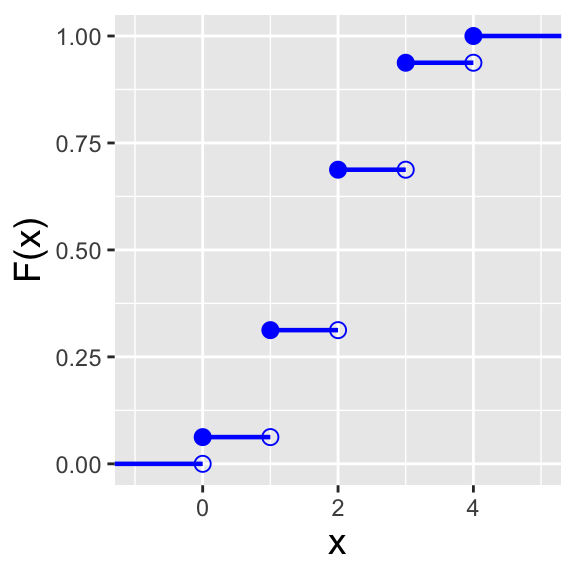
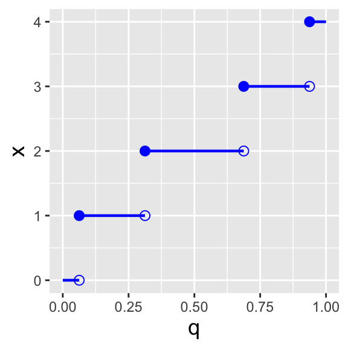
3.2.1 Examples
3.2.1.1 Computing Probabilities
Because computing the binomial pmf for a range of values of \(x\) can be laborious, we typically utilize
Rfunctions when computing probabilities.
- If \(X \sim\) Binomial(10,0.6), which is \(P(4 \leq X < 6)\)?
We first note that due to the form of the inequality, we do not include \(X=6\) in the computation. Thus \(P(4 \leq X < 6) = p_X(4) + p_X(5)\), which equals \[ \binom{10}{4} (0.6)^4 (1-0.6)^6 + \binom{10}{5} (0.6)^5 (1-0.6)^5 \,. \] Even computing this is unnecessarily laborious; instead, we call on
R:
Code
round(sum(dbinom(4:5, size = 10, prob = 0.6)), 3)[1] 0.312(This utilizes
R’s vectorization feature: we need not explicitly define afor-loop to evaluatedbinom()for \(x=4\) and then at \(x=5\).) We can also utilize cdf functions here: \[\begin{align*} P(4 \leq X < 6) &= P(X < 6) - P(X < 4) = P(X \leq 5) - P(X \leq 3)\\ &= F_X(5) - F_X(3) \,, \end{align*}\] which inRis computed via
Code
round(pbinom(5, size = 10, prob = 0.6) - pbinom(3, size = 10, prob = 0.6), 3)[1] 0.312As we can see, a direct summation approach is the more straightforward one to use.
- If \(X \sim\) Binomial(10,0.6), what is the value of \(a\) such that \(P(X \leq a) = 0.9\)?
First, we set up the inverse cdf formula: \[ P(X \leq a) = F_X(a) = 0.9 ~~ \Rightarrow ~~ a = F_X^{-1}(0.9) \] Note that we didn’t do anything differently here than we would have done in a continuous distribution setting…and we can proceed directly to
Rbecause it utilizes the generalized inverse cdf algorithm.
Code
qbinom(0.9, size = 10, prob = 0.6)[1] 8We can see immediately how the cdf for a discrete distribution is not a one-to-one function, as when we plug \(x = 8\) into the cdf, we will not recover the initial value \(q = 0.9\) (but, rather, a larger value):
Code
round(pbinom(8, size = 10, prob = 0.6), 3)[1] 0.9543.2.1.2 Probability Mass Functions: Data Sampling
While we would always utilize
Rshortcut functions likerbinom()when they exist, there may be instances when we need to code our own functions for sampling data from discrete distributions. The code below shows such a function for an arbitrary probability mass function; we can easily adapt this code to any situation in which a pmf and its domain are concisely specified.
Code
set.seed(101)
x <- c(1, 2, 4, 8) # domain of x
p.x <- c(0.2, 0.35, 0.15, 0.3) # p_X(x)
F.x <- cumsum(p.x) # cumulative sum -> produces F_X(x)
n <- 100
q <- runif(n) # we still ultimately need runif!
i <- findInterval(q, F.x) + 1 # the output are bin numbers [0,3], and not [1,4]
# hence we add 1
# 1 means q is between 0 and F.x[1], etc.
x.sample <- x[i]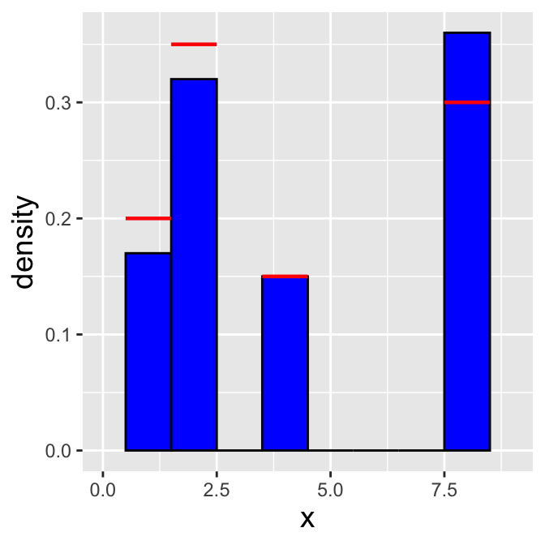
3.4 Linear Functions of Binomial Random Variables
What to take away from this section:
The method of moment-generating functions allows us to determine that…
the sum of \(n\) iid binomial random variables is itself binomially distributed; and
the mean of \(n\) iid binomial random variables has a known but typically unutilized distribution: it is the sample sum distribution with a transformed domain.
Foreshadowing: the sample sum result will allow us to make statistical inferences about the binomial success proportion \(p\), given \(n\) iid normal random variables (and that \(k\) is fixed and known).
For previous material on sampling distributions, see Section 2.3.
Let’s assume we are given \(n\) iid binomial random variables: \(X_1,X_2,\ldots,X_n \sim\) Binomial(\(k\),\(p\)). Can we determine the distribution of \(Y = \sum_{i=1}^n a_i X_i\)? Yes, we can…via the method of moment-generating functions.
Recall: the moment-generating function, or mgf, is a means by which to encapsulate information about a probability distribution. When it exists, the mgf is given by \(m_X(t) = E[e^{tX}]\). Also, if \(Y = \sum_{i=1}^n a_iX_i\), then \(m_Y(t) = m_{X_1}(a_1t) m_{X_2}(a_2t) \cdots m_{X_n}(a_nt)\); if we can identify \(m_Y(t)\) as the mgf for a known family of distributions, then we can immediately identify the distribution for \(Y\) and the parameters of that distribution.
The mgf for the binomial distribution is \[\begin{align*} m_X(t) = E[e^{tX}] &= \sum_{x=0}^k e^{tx} \binom{k}{x} p^x (1-p)^{k-x} \\ &= \sum_{x=0}^k \binom{k}{x} (pe^t)^x (1-p)^{k-x} \,. \end{align*}\] To achieve a closed-form expression, we utilize the binomial theorem: \[ (x+y)^k = \sum_{i=0}^k \binom{k}{i} x^i y^{k-i} \] to re-express \(m_X(t)\): \[ m_X(t) = [pe^t + (1-p)]^k \,. \] Note that one may see this written elsewhere as \((pe^t+q)^k\), where \(q = 1-p\).
The mgf for \(Y = X_+ = \sum_{i=1}^n X_i\) is thus \[ m_Y(t) = \prod_{i=1}^n m_{X_i}(t) = [m_X(t)]^n = [pe^t + (1-p)]^{nk} \,. \] We can see that this has the form of a binomial mgf: \(Y \sim\) Binomial(\(nk\),\(p\)), with expected value \(E[Y] = nkp\) and variance \(V[Y] = nkp(1-p)\). This makes sense, as the act of summing binomial data is equivalent to concatenating \(n\) separate Bernoulli processes into one longer Bernoulli process…whose data can subsequently be modeled using a binomial distribution.
While we can identify the distribution of the sum by name, we cannot say the same about the sample mean. We know that the expected value is \(E[\bar{X}] = \mu = kp\) and that the variance is \(V[\bar{X}] = \sigma^2/n = kp(1-p)/n\), but when we attempt to use the mgf method with \(a_i = 1/n\) instead of \(a_i = 1\), we find that \[
m_{\bar{X}}(t) = [pe^{t/n} + (1-p)]^{nk} \,.
\] Changing \(t\) to \(t/n\) has the effect of creating an mgf that does not have the form of any known mgf. However, we do know the details of the distribution: its pmf is identical to that of the binomial distribution, but its domain is \(\{0,1/n,2/n,\ldots,k\}\) rather than \(\{0,1,\ldots,nk\}\). (We can derive this result by making the transformation \(X_+ \rightarrow X_+/n\), as we see below in an example.) We could define the sample mean cdf ourselves using our own R function, as in, e.g.,
Code
pbsm <- function(x, k, p, n) # bsm: binomial sample mean
{
return(pbinom(x * n, size = n * k, prob = p)
}However, there is no particular need to do this: as we will see, if we wish to construct a confidence interval for \(p\), we can just use \(X_+\) as our statistic, and we will get the same result as if we had used the sample mean. (We note, for completeness, that we could also utilize the Central Limit Theorem if \(n \gtrsim 30\), but as we know the sampling distributions of \(X_+\) and \(\bar{X}\) there is no need to fall back upon approximations.)
3.4.1 Examples
3.4.1.1 Geometric Random Variable: Moment-Generating Function
Recall that a geometric distribution is equivalent to a negative binomial distribution with number of successes \(s = 1\); its probability mass function is \[ p_X(x) = p (1-p)^x \,, \] with \(x = \{0,1,\ldots\}\) and \(p \in [0,1]\). The moment-generating function for a geometric random variable is thus \[\begin{align*} m_X(t) = E[e^{tX}] &= \sum_{x=0}^{\infty} e^{tx} p (1-p)^x = p \sum_{x=0}^\infty e^{tx} (1-p)^x \\ &= p \sum_{x=0}^\infty [e^t(1-p)]^x = \frac{p}{1-e^t(1-p)} \,. \end{align*}\] The last equality utilizes the formula for the sum of an infinite geometric series: \(\sum_{i=0}^\infty x^i = (1-x)^{-1}\), when \(\vert x \vert < 1\). (If \(t < 0\) and \(p > 0\), then the condition that \(\vert e^t(1-p) \vert < 1\) holds.)
The sum of \(s\) iid geometric random variables has the moment-generating function \[ m_Y(t) = \prod_{i=1}^s m_{X_i}(t) = \left[ m_X(t) \right]^n = \left[\frac{p}{1-e^t(1-p)}\right]^s \,. \] This is the mgf for a negative binomial distribution for \(s\) successes. In the same way that the sum of \(k\) Bernoulli random variables is a binomially distributed random variable, the sum of \(s\) geometric random variables is a negative binomially distributed random variable.
3.4.1.2 Binomial Data: Sample Mean Distribution
Let’s assume we are given \(n\) iid binomial random variables: \(X_1,X_2,\ldots,X_n \sim\) Binomial(\(k\),\(p\)). As we observe above, the distribution of the sum \(X_+ = \sum_{i=1}^k X_i\) is binomial with mean \(nkp\) and variance \(nkp(1-p)\).
The sample mean is \(\bar{X} = X_+/n\), and so \[ F_{\bar{X}}(\bar{x}) = P(\bar{X} \leq \bar{x}) = P(X_+ \leq n\bar{x}) = \sum_{x_+=0}^{n\bar{x}} p_{X_+}(x_+) \,. \] Because \(n\bar{x}\) is integer-valued by definition, we do not need to round down here. Since we are dealing with a discrete distribution and not a continuous one, we cannot simply take the derivative of \(F_{\bar{X}}(\bar{x})\) to find \(f_{\bar{X}}(\bar{x})\)…but what we can do is assess the jump in the cumulative distribution function at each step, because that is the pmf. We find that \[ f_{\bar{X}}(\bar{x}) = P(X_+ \leq n\bar{x}) - P(X_+ \leq n\bar{x}-1) = f_{X_+}(x_+) = f_{X_+}(n\bar{x})\,. \] In other words, the pmf for \(\bar{X}\) is equivalent to that for \(X_+\), just with a different domain (\({0,1/n,2/n,\ldots,k}\) versus \({0,1,\ldots,nk}\).
3.4.1.3 Probability Generating Functions
Moment-generating functions are not the only means by which we can work with linear functions of discrete random variables. Another method is that of probability generating functions, or pgfs, in which we utilize the Law of the Unconcious Statistician to create power-series representations of probability mass functions: \[ g_X(t) = E[t^X] = \sum_{x=0}^\infty t^x p_X(x) \,. \] (Mathematicians would call this a Mellin transform.) We note immediately that we can only compute pgfs for distributions whose domains consist of the full set of, or a subset of, the values \(\{0,1,\ldots,\infty\}\). (For instance, the binomial distribution has domain \(\{0,1,\ldots,k\}\), so \(p_X(k+1) = p_X(k+2) = \cdots = 0\).)
What is the pgf for a binomial distribution? \[\begin{align*} g_X(t) &= \sum_{x=0}^k t^x p_X(x) \\ &= \sum_{x=0}^k t^x \binom{k}{x} p^x (1-p)^{k-x} \\ &= \sum_{x=0}^k \binom{k}{x} (tp)^x (1-p)^{k-x} \\ &= \left[ tp + (1-p) \right]^k \,, \end{align*}\] where in the last step we utilize the binomial theorem to achieve a closed-form expression for \(g_X(t)\).
What is the pgf good for? First, we can use a pgf to compute a factorial moment: \(\mu_{[i]} = E[X(X-1) \cdots (X-i+1)]\). (Earlier, we used the factorial moment \(E[X(X-1)]\) of the binomial distribution to compute the variance of binomial random variables.) We can compute such a moment from \(g_X(t)\) as follows: \[ E[X(X-1) \cdots (X-i+1)] = \mu_{[i]} = \left. \frac{d^j}{dt^j} g_X(t) \right|_{t=1} \,. \] For instance, we found that \(E[X(X-1)] = k(k-1)p^2\) for a binomial distribution, by playing tricks with summations. With the pgf, we find that \[\begin{align*} \left. \frac{d^2}{dt^2} \left[ tp + (1-p) \right]^k \right|_{t=1} &= \left. \frac{d}{dt} k \left[ tp + (1-p) \right]^{k-1} p \right|_{t=1} \\ &= \left. k (k-1) \left[ tp + (1-p) \right]^{k-2} p^2 \right|_{t=1} \\ &= k (k-1) p^2 \left[ p + (1-p) \right]^{k-2} = k(k-1)p^2 \,. \end{align*}\]
Second, we can use a pgf to generate probability mass function values: \[ p_X(i) = \left. \frac{1}{i!} \frac{d^j}{dt^j} g_X(t) \right|_{t=0} \,. \] Hence, for a binomial distribution, \[\begin{align*} p_X(1) &= \left. \frac{d}{dt} \left[ tp + (1-p) \right]^k \right|_{t=0} \\ &= \left. k \left[ tp + (1-p) \right]^{k-1} p \right|_{t=0} \\ &= k p (1-p)^{k-1} \,, \end{align*}\] etc. While this might not seem particularly useful at first glance, if \(\{X_1,\ldots,X_n\}\) are \(n\) independent (but not necessarily identically distributed) discrete random variables, and if \(Y = \sum_{i=1}^n a_i X_i\), then \[ g_Y(t) = g_{X_1}(t^{a_1}) g_{X_2}(t^{a_2}) \cdots g_{X_n}(t^{a_n}) \,, \] and one can use, e.g., symbolic differentiation to determine the full probability mass function for \(Y\), if one cannot just recognize \(Y\)’s distribution. (For instance, if \(X_1,X_2 \sim \mbox{Binom}(k,p)\), then the pgf for \(Y = X_1 + X_2\) is \([tp + (1-p)]^{k+k}\), meaning that \(Y \sim \mbox{Binom}(2k,p)\).
To be clear: in the context of this book, probability-generating functions do not offer any utility to the reader that moment-generating functions don’t already provide. (Their primary advantage is to allow us to compute pmfs for less straightforward linear functions of discrete random variables, which is useful to know\(-\)this allows us to perform statistical inference given such statistics\(-\)but doing this is beyond the book’s current scope.)
3.5 Order Statistics
What to take away from this section:
Order statistics are the observed data of our sample sorted into ascending order: e.g., \(X_{(1)}\) is the datum with the smallest observed value, and \(X_{(n)}\) is the datum with the largest observed value.
The properties of the binomial distribution allow us to derive the probability mass or density function (and cumulative distribution function) for an order statistic.
Foreshadowing: by being able to express the cdf of an order statistic, we are in a position to, e.g., make statistical inferences about a distribution parameter \(\theta\) using the sample median or the sample range.
Let’s suppose that we have sampled \(n\) iid random variables \(\{X_1,\ldots,X_n\}\) from some arbitrary distribution. Previously, we have summarized such data with the sample mean and the sample variance. However, there are other summary statistics, some of which are only calculable if we sort the data into ascending order: \(\{X_{(1)},\ldots,X_{(n)}\}\). These are dubbed order statistics and the \(j^{th}\) order statistic is the sample’s \(j^{th}\) smallest value (i.e., the smallest-valued datum in the sample is \(X_{(1)}\) and the largest-valued datum is \(X_{(n)}\)). Examples of statistics based on ordering include \[\begin{align*} \mbox{Range:}& ~~X_{(n)} - X_{(1)} \\ \mbox{Median:}& ~~X_{(n+1)/2} ~ \mbox{if $n$ is odd} \\ & ~~(X_{n/2}+X_{(n+1)/2})/2 ~ \mbox{if $n$ is even} \,. \end{align*}\] The most important point to keep in mind is that the probability mass and density functions for order statistics differ from the pmfs and pdfs for their constituent iid data. For instance, if we sample \(n\) data from a \(\mathcal{N}(0,1)\) distribution, we would not expect the minimum value to be distributed the same way; if anything, the mean should take on smaller and smaller values, and the variance of those values should decrease, as \(n\) increases.
So: why are we discussing order statistics here, in the middle of a discussion of the binomial distribution? It is because we can derive, e.g., the cdf for an order statistic by utilizing the binomial probability mass function.
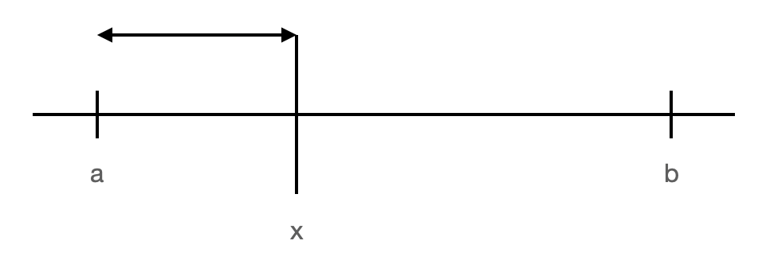
See Figure 3.6. Without loss of generality, we can assume that \(f_X(x) > 0\) for \(x \in [a,b]\) and that we sample \(n\) data from this distribution. The number of data \(X\) that have value less than some arbitrarily chosen \(x\) is a binomial random variable: \[ Y \sim \mbox{Binomial}(n,p=F_X(x)) \] What is the probability that the \(j^{th}\) ordered datum has a value \(\leq x\)? That’s equivalent to asking for the probability that \(Y \geq j\), i.e., did we see at least \(j\) successes in \(n\) trials? \[ F_{(j)}(x) = P(X_{(j)} \leq x) = P(Y \geq j) = \sum_{i=j}^n \binom{n}{i} [F_X(x)]^i [1 - F_X(x)]^{n-i} \,. \] \(F_{(j)}(x)\) is the cdf for the \(j^{th}\) ordered datum.
What is \(f_{(j)}(x)\) if \(X\) is a continuous random variable?
Recall: a continuous distribution’s pdf is the derivative of its cdf.
Ignoring algebraic details, we can write down the pdf for \(X_{(j)}\) as \[ f_{(j)}(x) = \frac{d}{dx}F_{(j)}(x) = \frac{n!}{(j-1)!(n-j)!} f_X(x) [F_X(x)]^{j-1} [1 - F_X(x)]^{n-j} \,, \] with simplified expressions for the pdfs for the minimum and maximum data values being: \[ f_{(1)}(x) = n f_X(x) [1 - F_X(x)]^{n-1} ~~\mbox{and}~~ f_{(n)}(x) = n f_X(x) [F_X(x)]^{n-1} \,. \]
If, on the other hand, \(X\) is a discrete random variable, then the probability mass function \(p_{(j)}\) is given by the “jumps” seen in the cdf at those values of \(x\) that belong to the distribution’s domain: \[ p_{(j)}(x) = F_X(x) - F_X(x-\Delta x) \,, \] where \(\Delta x\) is the step back to the next smaller value within the domain. For instance, if \(X\) is a binomial random variable, then \(p_{(j)}(x) = F_X(x) - F_X(x-1)\). In an example below, we provide code for computing the vector of pmf values for a discrete order statistic.
3.5.1 Examples
3.5.1.1 Exponential Distribution: Minimum Value
The probability density function for an exponential random variable is \[ f_X(x) = \frac{1}{\theta} \exp\left(-\frac{x}{\theta}\right) \,, \] for \(x \geq 0\) and \(\theta > 0\), and the expected value of \(X\) is \(E[X] = \theta\). What is the pdf for the smallest value among \(n\) iid data sampled from an exponential distribution? What is the expected value for the smallest value?
First, if we do not immediately recall the cumulative distribution function \(F_X(x)\), we can easily derive it: \[ F_X(x) = \int_0^x \frac{1}{\theta} e^{-y/\theta} dy = 1 - \exp\left(-\frac{x}{\theta}\right) \,. \] We plug \(F_X(x)\) into the expression of the pdf of the minimum datum given above: \[\begin{align*} f_{(1)}(x) &= n \frac{1}{\theta} \exp\left(-\frac{x}{\theta}\right) \left[ 1 - \left(1-\exp\left(-\frac{x}{\theta}\right)\right) \right]^{n-1} \\ &= n \frac{1}{\theta} \exp\left(-\frac{x}{\theta}\right) \exp\left(-\frac{(n-1)x}{\theta}\right) = \frac{n}{\theta} \exp\left(-\frac{nx}{\theta}\right) \,. \end{align*}\] \(X_{(1)}\) is thus an exponentially distributed random variable with parameter \(\theta/n\) and expected value \(\theta/n\). We can verify the expected value result as follows. We recognize \[ E[X_{(1)}] = \int_0^\infty x \frac{n}{\theta} e^{-nx/\theta} dx \] as almost having the form of the gamma-function integral \[ \Gamma(u) = \int_0^\infty x^{u-1} e^{-x} dx \,. \] So we implement the variable transformation \(y = nx/\theta\); for this transformation, \(dy = (n/\theta)dx\), and if \(x = 0\) or \(\infty\), \(y = 0\) or \(\infty\) (meaning the integral bounds are unchanged). Our new integral is \[\begin{align*} E[X_{(1)}] &= \int_0^\infty \frac{\theta y}{n} \frac{n}{\theta} e^{-y} \frac{\theta}{n} dy \\ &= \frac{\theta}{n} \int_0^\infty y e^{-y} dy = \frac{\theta}{n} \Gamma(2) = \frac{\theta}{n} 1! = \frac{\theta}{n} = \frac{E[X]}{n} \,. \end{align*}\]
3.5.1.2 Uniform(0,1) Distribution: Sample Median
The Uniform(0,1) distribution is \[ f_X(x) = 1 ~~~ x \in [0,1] \,. \] Let’s assume that we draw \(n\) iid data from this distribution, with \(n\) odd. Then we can write down the pdf of the sample median, for which \(j = (n+1)/2\): \[ f_{((n+1)/2)}(x) = \frac{n!}{\left(\frac{n-1}{2}\right)! \left(\frac{n-1}{2}\right)!} f_X(x) \left[ F_X(x) \right]^{(n-1)/2} \left[ 1 - F_X(x) \right]^{(n-1)/2} \,. \] Given that \[ F_X(x) = \int_0^x dy = x ~~~ x \in [0,1] \,, \] we can write \[ f_{((n+1)/2)}(x) = \frac{n!}{\left(\frac{n-1}{2}\right)! \left(\frac{n-1}{2}\right)!} x^{(n-1)/2} (1-x)^{(n-1)/2} \,, \] for \(x \in [0,1]\). This function has both the form of a beta distribution (with \(\alpha = \beta = (n+1)/2\)) and the domain of a beta distribution, so \(\tilde{X} \sim\) Beta\(\left(\frac{n+1}{2},\frac{n+1}{2}\right)\).
(In fact, we can go further and state a more general result: \(X_{(j)} \sim\) Beta(\(j,n-j+1\)): all the order statistics for data drawn from a Uniform(0,1) distribution are beta-distributed random variables! See Figure 3.7.)
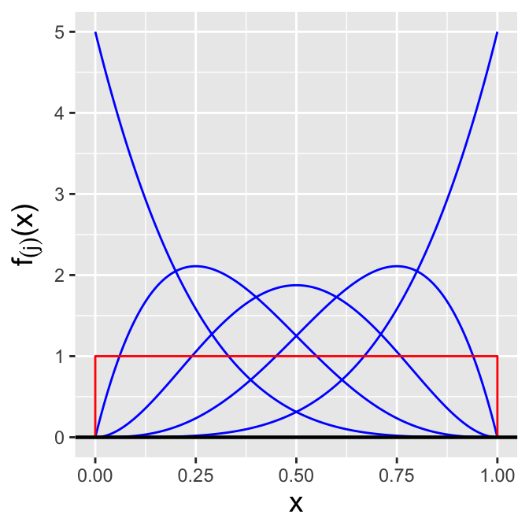
3.5.1.3 Order Statistic Distribution: Numeric Calculation
Let’s suppose that we sample \(n = 200\) data from a standard normal distribution. Can we compute, e.g., \(f_{(70)}(x)\), for any given value of \(x\)?
Because we cannot easily determine in this case whether the \(70^{\rm th}\) ordered datum is sampled according to some known, named distribution, we will attack this via direct numeric computation. Except…the expression for \(f_{(j)}(x)\) contains factorial functions, and evaluating factorial functions can lead to computational overflow:
Code
factorial(200)[1] InfBecause of this, the “safest” approach is to compute the natural logarithm of \(f_{(j)}\): \[\begin{align*} \log f_{(j)} &= \log n! + \log f_X(x) + (j-1) \log F_X(x) + (n-j) \log [1 - F_X(x)]\\ &~~~~ - \log (j-1)! - \log (n-j)! \,. \end{align*}\] In code, this would be expressed as
Code
n <- 200
j <- 70
x <- -0.30
f.x <- dnorm(x)
F.x <- pnorm(x)
log.f.j <- lfactorial(n) + log(f.x) + (j - 1) * log(F.x) + (n - j) * log(1 - F.x) -
lfactorial(j - 1) - lfactorial(n - j)
exp(log.f.j)[1] 2.654509One can repeat this calculation over, e.g., a sequence of \(x\) values in order to visualize the probability density function.
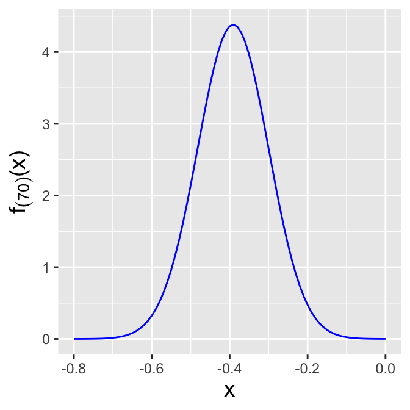
3.5.1.4 Discrete Order Statistic: Probability Mass Function
Let’s say that in an experiment, we flip a fair coin \(k = 10\) times and record the number of heads as our random variable \(X\). We then repeat this experiment \(n = 20\) times and arrange the 20 values \(\{X_1,\ldots,X_{20}\}\) into ascending order. What is the probability mass function for the \(17^{\rm th}\) ordered datum? We can numerically determine the pmf using the code below. See Figure 3.9.
Code
# returns the cdf summation given above, for binomially distributed data
pbinom_order <- function(x, k, p, j, n)
{
i <- j:n
sum(choose(n, i) * (pbinom(x, k, p))^i * (1-pbinom(x, k, p))^(n - i))
}
k <- 10
p <- 0.5
j <- 17
n <- 20
# determine pmf for x = {0, 1, ..., k}
pmf_order <- rep(NA,k+1)
pmf_order[1] <- pbinom_order(0, k, p, j, n)
for ( ii in 2:(k + 1) ) {
pmf_order[ii] <- pbinom_order(ii - 1, k, p, j, n) - pbinom_order(ii - 2, k, p, j, n)
}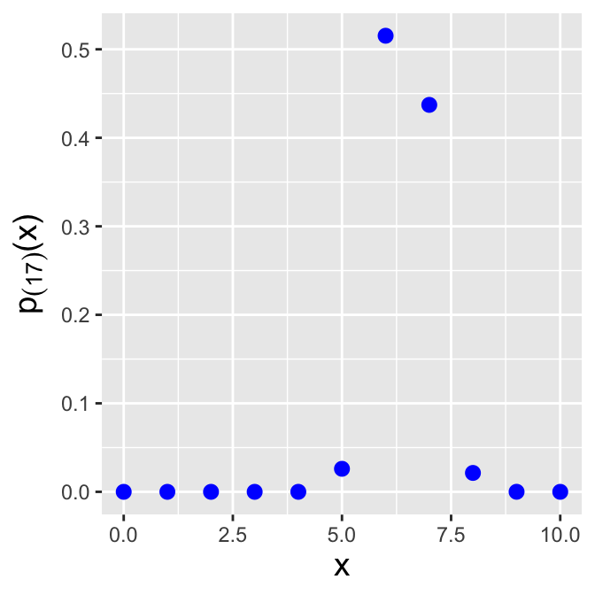
3.6 Point Estimation
What to take away from this section:
Because maximum likelihood estimators for distribution parameters \(\theta\) are not always unbiased (although any bias goes away as the sample size increases), we introduce a second point estimator: the minimum variance unbiased estimator, or MVUE.
The derivation of an MVUE for \(\theta\) hinges upon the identification of a sufficient statistic for \(\theta\).
Single-valued sufficient statistics exist for members of the exponential family of distributions, which includes those distributions typically used in data analyses: the normal, the binomial, etc.
An MVUE does not possess the invariance property, nor is there a guarantee that it converges in distribution to a normal random variable.
For previous material on point estimation, see Section 2.11.
In Section 1.14 and Section 2.11, we introduce a number of concepts related to point estimation, the act of using statistics to make inferences about a population parameter \(\theta\). We…
- assess point estimators using the metrics of bias, variance, mean-squared error, and consistency;
- utilize the Fisher information metric to determine the lower bound on the variance for unbiased estimators (the Cramer-Rao Lower Bound, or CRLB); and
- define estimators via the maximum likelihood algorithm, which generates estimators that are at least asymptotically unbiased and at least asymptotically reach the CRLB, and which converge in distribution to normal random variables.
We will review these concepts in the context of estimating population quantities for binomial distributions below, in the body of the text and in examples. For now…
Recall: the bias of an estimator is the difference between the average value of the estimates it generates and the true parameter value. If \(E[\hat{\theta}-\theta] = 0\), then the estimator \(\hat{\theta}\) is said to be unbiased.
Recall: the value of \(\theta\) that maximizes the likelihood function is the maximum likelihood estimate, or MLE, for \(\theta\). The maximum is found by taking the (partial) derivative of the (log-)likelihood function with respect to \(\theta\), setting the result to zero, and solving for \(\theta\). That solution is the maximum likelihood estimate \(\hat{\theta}_{MLE}\). Also recall the invariance property of the MLE: if \(\hat{\theta}_{MLE}\) is the MLE for \(\theta\), then \(g(\hat{\theta}_{MLE})\) is the MLE for \(g(\theta)\).
3.6.1 Sufficient Statistics
A sufficient statistic for a parameter \(\theta\) captures all information about \(\theta\) contained in the sample. The sufficiency principle holds that if, e.g., \(Y\) is a sufficient statistic for \(\theta\), and we collect two datasets \(\mathbf{U}\) and \(\mathbf{V}\) such that \(Y(\mathbf{U}) = Y(\mathbf{V})\), then the inferences we make about \(\theta\) given that we observe \(\mathbf{U}\) will be exactly the same as those we would make if we were to observe \(\mathbf{V}\). Using any statistic beyond a sufficient statistic will not lead to improved inferences about \(\theta\). This means that, for instance, combining \(\bar{X}\) (a sufficient statistic for the normal mean \(\mu\) when the variance is known) with, say, the sample median will not reduce the length of confidence intervals for \(\mu\) or change the power of hypothesis tests about \(\mu\), relative to what we would find using \(\bar{X}\) alone. Note that utilizing the sufficiency principle is but one way by which statisticians can attempt data reduction prior to inference; two others, which are beyond the scope of this book, are the likelihood and equivalence principles. For a deeper treatment of sufficiency and data reduction than we provide here, the interested reader should consult Chapter 6 of Casella and Berger (2002).
A statistic \(Y(\mathbf{X})\) is a sufficient statistic for \(\theta\) if the ratio \[\begin{align*} \frac{f_X(\mathbf{x} \vert \theta)}{f_Y(y \vert \theta)} \overset{iid}{\rightarrow} \frac{\prod_{i=1}^n f_X(x_i \vert \theta)}{f_Y(y \vert \theta)} \,, \end{align*}\] where \(f_Y(y \vert \theta)\) is the probability density function of the sampling distribution for \(Y\), is constant as a function of \(\theta\). We note that by this definition, \(\mathbf{X}\) itself comprises a sufficient statistic for \(\theta\), as does the full set of order statistics \(\{X_{(1)},\ldots,X_{(n)}\}\). The relevant questions are: can we define a sufficient statistic that actually reduces the data? And if so, how can we identify it?
Let’s answer the second question first. The simplest way by which to identify a sufficient statistic is to write down the likelihood function and then to factorize it into two separate functions, one of which depends only on the observed data and the other of which depends on both the observed data and the parameter of interest: \[ \mathcal{L}(\theta \vert \mathbf{x}) = h(\mathbf{x}) \cdot g(\mathbf{x},\theta) \,. \] This is the so-called factorization criterion. In the expression \(g(\mathbf{x},\theta)\), the data will appear within, e.g., a summation (e.g., \(\sum_{i=1}^n x_i\)) or a product (e.g., \(\prod_{i=1}^n x_i\)), and we would identify that summation or product as a sufficient statistic for \(\theta\). For instance, for the binomial distribution, the factorized likelihood (given \(n\) iid data) is \[ \mathcal{L}(p \vert \mathbf{x}) = \prod_{i=1}^n \binom{k}{x_i} p^{x_i} (1-p)^{k-x_i} = \underbrace{\left[ \prod_{i=1}^n \binom{k}{x_i} \right]}_{h(\mathbf{x})} \underbrace{p^{\sum_{i=1}^n x_i} (1-p)^{nk-\sum_{i=1}^n x_i}}_{g(\sum_{i=1}^n x_i,p)} \,. \] By inspecting the function \(g(\mathbf{x},p)\), we immediately determine that \(Y = X_+ = \sum_{i=1}^n X_i\) is a sufficient statistic for \(p\). We say that \(X_+\) is “a” sufficient statistic because sufficient statistics are not unique: any one-to-one function of a sufficient statistic is also a sufficient statistic. For instance, if \(X_+\) is a sufficient statistic for \(\theta\), then so is \(\bar{X}\), etc.
Now we return to the first question above: can we define a sufficient statistic that actually reduces the data? The answer is “not always.” In fact, across all possible distributions, it is relatively rare that we can do this. The Pitman-Koopman-Darmois theorem holds that, among families of distributions that do not have domain-specifying parameters, only members of the exponential family of distributions have sufficient statistics whose dimension does not increase as the sample size increases. (This theorem motivates, in large part, why we introduce the exponential family in Section 2.17.)
Recall: the exponential family of distributions is the set of distributions whose probability mass or density functions can be expressed as \[ h(x) \exp\left[\left(\sum_{i=1}^p \eta_i(\boldsymbol{\theta}) T_i(x)\right) - A(\boldsymbol{\theta})\right] \,, \] where \(\boldsymbol{\theta}\) is a vector of parameters (e.g., \(\boldsymbol{\theta} = \{\mu,\sigma^2\}\) for a normal distribution). Note that none of the parameters can be a domain-specifying parameter.
Let’s assume that we are dealing with distributions that have just one free parameter \(\theta\), like the binomial distribution. Then the expression above simplifies to \[\begin{align*} h(x) \exp\left[ \eta(\theta) T(x) - A(\theta) \right] \,, \end{align*}\] where \(T(x)\) is a sufficient statistic. For a single binomially distributed datum, \(T(X) = X\). If on the other hand we collect \(n\) iid data, then a sufficient statistic is \(T(\mathbf{X}) = \sum_{i=1}^n X_i\), and as we can see it is still a single number\(-\)i.e., it has a dimension of one\(-\)regardless of the value of \(n\). Now, restricting ourselves to exponential family distributions in inferential situations would appear to limit the practical utility of the sufficiency principle…except it is the case that many (if not most) of the distributions that we typically utilize in inference are indeed exponential-family distributions, including all the ones that we focus on in chapters 2-4 of this book.
(We note here for completeness that once we identify a sufficient statistic, we are technically required to demonstrate that it is both minimally sufficient and complete, as it needs to be both so that we can use it to, e.g., determine the minimum variance unbiased estimator. It suffices to say here that the sufficient statistics that we identify for exponential family distributions via likelihood factorization are minimally sufficient and complete. See Section 7.5.2 and Section 7.5.3 for more details on minimal sufficiency and completeness, respectively.)
3.6.2 Minimum Variance Unbiased Estimation
Given the concept of sufficiency, we can now introduce another means by which to define an estimator. The minimum variance unbiased estimator (or MVUE) is the one that has the smallest variance among all unbiased estimators of \(\theta\). The reader’s first thought might be “well, why didn’t we use this estimator in the first place…after all, the MLE is not guaranteed to yield an unbiased estimator, so why have we put off discussing the MVUE?” The primary reasons are that MVUEs are sometimes not definable (i.e., we can reach insurmountable computational roadblocks when trying to derive them), and unlike MLEs, they do not exhibit the invariance property. (For instance, if \(\hat{\theta}_{MLE} = \bar{X}\), then \(\hat{\theta^2}_{MLE} = \bar{X}^2\), but if \(\hat{\theta}_{MVUE} = \bar{X}\), it is not necessarily the case that \(\hat{\theta^2}_{MVUE} = \bar{X}^2\).) However, we should always at least try to define the MVUE, because if we can, it will be at least equal the performance of, if not perform better than, the MLE, in terms of mean-squared error.
There are two steps to carry out when deriving the MVUE:
- determining a sufficient statistic for \(\theta\); and
- correcting any bias that is observed when we utilize that sufficient statistic as our initial estimator.
If \(Y\) is a sufficient statistic for \(\theta\), and there is a function \(h(Y)\) that is an unbiased estimator for \(\theta\) and that depends on the data only through \(Y\), then \(h(Y)\) is the MVUE for \(\theta\). (A reader who is interested in the underlying theory should reference the Lehmann-Scheff'e theorem.) Recall from above that one-to-one functions of sufficient statistics are themselves sufficient statistics, hence \(h(Y)\) is also going to be sufficient for \(\theta\). Here, given \(Y = \sum_{i=1}^n X_i\), we need to find a function \(h(\cdot)\) such that \(E[h(Y)] = p\). In Section 3.4, we determined that the distribution for the sum of iid binomial random variables is Binomial(\(nk\),\(p\)), and thus we know that this distribution has expected value \(nkp\). Thus \[ E\left[Y\right] = nkp ~\implies~ E\left[\frac{Y}{nk}\right] = p ~\implies~ h(Y) = \frac{Y}{nk} = \frac{\bar{X}}{k} \] is the MVUE for \(p\). The variance of \(\hat{p}\) is \[ V[\hat{p}] = V\left[\frac{\bar{X}}{k}\right] = \frac{1}{k^2}V[\bar{X}] = \frac{1}{k^2} \frac{V[X]}{n} = \frac{1}{k^2}\frac{kp(1-p)}{n} = \frac{p(1-p)}{nk} \,. \] We know that this variance abides by the restriction \[ V[\hat{p}] \geq \frac{1}{nI(p)} = -\frac{1}{nE\left[\frac{d^2}{dp^2} \log p_X(X \vert p) \right]} \,. \] But is it equivalent to the lower bound for unbiased estimators, the CRLB? (Note that in particular situations, the MVUE may have a variance larger than the CRLB; when this is the case, unbiased estimators that achieve the CRLB simply do not exist.) For the binomial distribution, \[\begin{align*} p_{X}(x) &= \binom{k}{x} p^{x} (1-p)^{k-x} \\ \log p_{X}(x) &= \log \binom{k}{x} + x \log p + (k-x) \log (1-p) \\ \frac{d}{dp} \log p_{X}(x) &= 0 + \frac{x}{p} - \frac{k-x}{(1-p)} \\ \frac{d^2}{dp^2} \log p_{X}(x) &= -\frac{x}{p^2} - \frac{k-x}{(1-p)^2} \\ E\left[\frac{d^2}{dp^2} \log p_{X}(X)\right] &= -\frac{1}{p^2}E[X] - \frac{1}{(1-p)^2}E[k-X] \\ &= -\frac{kp}{p^2}-\frac{k-kp}{(1-p)^2} \\ &= -\frac{k}{p}-\frac{k}{1-p} = -\frac{k}{p(1-p)} \,. \end{align*}\] The lower bound on the variance is thus \(p(1-p)/(nk)\), and so the MVUE does achieve the CRLB. We cannot define a better unbiased estimator for \(p\) than \(\bar{X}/k\).
For more on point estimation, go to Section 4.5.
3.6.3 Examples
3.6.3.1 The MLE for the Binomial Success Probability
Recall: the value of \(\theta\) that maximizes the likelihood function is the maximum likelihood estimate, or MLE, for \(\theta\). The maximum is found by taking the (partial) derivative of the (log-)likelihood function with respect to \(\theta\), setting the result to zero, and solving for \(\theta\). That solution is the maximum likelihood estimate \(\hat{\theta}_{MLE}\).
Above, we determined that the likelihood function for \(n\) iid binomial random variables \(\{X_1,\ldots,X_n\}\) is \[ \mathcal{L}(p \vert \mathbf{x}) = \left[\prod_{i=1}^n \binom{k}{x_i} \right] p^{\sum_{i=1}^n x_i} (1-p)^{nk-\sum_{i=1}^n x_i} \,. \] Recall that the value \(\hat{p}_{MLE}\) that maximizes \(\mathcal{L}(p \vert \mathbf{x})\) also maximizes \(\ell(p \vert \mathbf{x}) = \log \mathcal{L}(p \vert \mathbf{x})\), which is considerably easier to work with: \[\begin{align*} \ell(p \vert \mathbf{x}) &= \left(\sum_{i=1}^n x_i\right) \log p + \left(nk - \sum_{i=1}^n x_i\right) \log (1-p) \\ \ell'(p \vert \mathbf{x}) &= \frac{d}{dp} \ell(p \vert \mathbf{x}) = \frac{1}{p} \sum_{i=1}^n x_i - \frac{1}{1-p} \left(nk - \sum_{i=1}^n x_i\right) \,. \end{align*}\] (Here, we drop the binomial coefficient, which does not depend on \(p\) and thus differentiates to zero.) After setting \(\ell'(p \vert \mathbf{x})\) to zero and rearranging terms, we find that \[ p = \frac{1}{nk}\sum_{i=1}^n x_i ~\implies~ \hat{p}_{MLE} = \frac{\bar{X}}{k} \,. \] The MLE matches the MVUE, thus we know that the MLE is unbiased and we know that it achieves the CRLB.
Recall: the bias of an estimator is the difference between the average value of the estimates it generates and the true parameter value. If \(E[\hat{\theta}-\theta] = 0\), then the estimator \(\hat{\theta}\) is said to be unbiased.
Recall: the Cramer-Rao Lower Bound (or CRLB) is the lower bound on the variance of any unbiased estimator. If an unbiased estimator achieves the CRLB, it is the MVUE…but it can be the case that the MVUE does not achieve the CRLB. For a discrete distribution, the CRLB is given by \[ V_{\rm CRLB}[\hat{\theta}] = -\left(nE\left[\frac{d^2}{d\theta^2} \log p_X(X \vert p) \right]\right)^{-1} = \frac{1}{nI(\theta)} \] where \(I(\theta)\) is the Fisher information: \[ I(\theta) = -E\left[ \frac{\partial^2}{\partial \theta^2} \log f_X(x \vert \theta) \right] \,. \]
A useful property of MLEs is the invariance property, which holds that the MLE for a function of \(\theta\) is given by applying the same function to the MLE itself. Thus
- the MLE for the population mean \(E[X] = \mu = kp\) is \(\hat{\mu}_{MLE} = \bar{X}\); and
- the MLE for the population variance \(V[X] = \sigma^2 = kp(1-p)\) is \(\widehat{\sigma^2}_{MLE} = \bar{X}(1-\bar{X}/k)\).
Last, note \(\hat{p}_{MLE}\) is a consistent estimator (like all MLEs) and that asymptotically, it converges in distribution to a normal random variable (like all MLEs): \[ \hat{p}_{MLE} \overset{d}{\rightarrow} Y \sim \mathcal{N}\left(p,\frac{1}{nI(p)} = \frac{p(1-p)}{nk}\right) \,. \]
Recall: an estimator is consistent if its mean-squared error, \(B[\hat{\theta}]^2 + V[\hat{\theta}]\), goes to zero as the sample size \(n\) goes to infinity.
3.6.3.2 Normal Distribution: Sufficient Statistics
If we have \(n\) iid data drawn from a normal distribution with unknown mean \(\mu\) and unknown variance \(\sigma^2\), then the factorized likelihood is \[\begin{align*} &\mathcal{L}(\mu,\sigma^2 \vert \mathbf{x}) \\ = ~ &\underbrace{(2 \pi \sigma^2)^{-n/2} \exp\left(-\frac{1}{2\sigma^2}\sum_{i=1}^n x_i^2\right)\exp\left(\frac{\mu}{\sigma^2}\sum_{i=1}^n x_i\right)\exp\left(-\frac{n\mu^2}{2\sigma^2}\right)}_{g(\sum x_i^2, \sum x_i,\mu,\sigma)} \cdot \underbrace{1}_{h(\mathbf{x})} \,. \end{align*}\] Here, we identify \(\sum x_i^2\) and \(\sum x_i\) as joint sufficient statistics: we need two pieces of information to jointly estimate \(\mu\) and \(\sigma^2\). (To be clear: it is not necessarily the case that one of the parameters matches to one of the statistics…rather, the two statistics are jointly sufficient for estimation.) We thus cannot proceed further to define an MVUE for \(\mu\) or for \(\sigma^2\), without knowing the joint bivariate probability density function for \(Y_1 = \sum_{i=1}^n X_i^2\) and \(Y_2 = \sum_{i=1}^n X_i\).
(Note that we can proceed if we happen to know either \(\mu\) or \(\sigma^2\); if one of these values is fixed, then there will only be one sufficient statistic and we can determine the MVUE for the other, freely varying parameter.)
3.6.3.3 Sufficiency: When We Cannot Reduce Data
As stated above, it is often impossible to reduce data to, e.g., a single-number summary. The following examples, utilizing distributions that are not exponential-family distributions, illustrate this.
- A Laplace distribution with scale parameter 1 has the probability density function \[\begin{align*} f_X(x \vert \theta) &= \frac12 e^{-\vert x - \theta \vert} \,, \end{align*}\] where \(x \in (-\infty,\infty)\) and \(\theta \in (-\infty,\infty)\). If we observe \(n\) iid data, then likelihood factorization yields \[\begin{align*} \mathcal{L}(\theta \vert \mathbf{x}) = \frac{1}{2^n} e^{-\sum_{i=1}^n \vert x_i - \theta \vert} \,. \end{align*}\] \(Y = \sum_{i=1}^n \vert X_i - \theta \vert\) is not a sufficient statistic as it contains the (unknown) parameter: a sufficient statistic for \(\theta\) cannot contain \(\theta\) itself! We cannot isolate a function of \(\mathbf{X}\) alone, and thus no data reduction is possible.
- A Cauchy distribution with scale parameter 1 has the probability density function \[\begin{align*} f_X(x \vert \theta) = \frac{1}{\pi (x-\theta)^2} \,, \end{align*}\] where \(x \in (-\infty,\infty)\) and \(\theta \in (-\infty,\infty)\). If we observe \(n\) iid data, then likelihood factorization yields \[\begin{align*} \mathcal{L}(\theta \vert \mathbf{x}) = \frac{1}{\pi^n} \frac{1}{\prod_{i=1}^n (x_i-\theta)^2} \,. \end{align*}\] Again, we cannot isolate a function of the \(X_i\)’s alone: no data reduction is possible.
3.6.3.4 Exponential Distribution: MVUE for Population Mean
The exponential distribution is \[ f_X(x) = \frac{1}{\theta} \exp\left(-\frac{x}{\theta}\right) \,, \] where \(x \geq 0\) and \(\theta > 0\), and where \(E[X] = \theta\) and \(V[X] = \theta^2\). Let’s assume that we have \(n\) iid data drawn from this distribution. Can we define the MVUE for \(\theta\)? For \(\theta^2\)?
The likelihood function is \[ \mathcal{L}(\theta \vert \mathbf{x}) = \prod_{i=1}^n f_X(x_i \vert \theta) = \frac{1}{\theta^n}\exp\left(-\frac{1}{\theta}\sum_{i=1}^n x_i \right) = h(\mathbf{x}) \cdot g(\theta,\mathbf{x}) \,. \] Here, there are no terms that are functions of only the data, so \(h(\mathbf{x}) = 1\) and a sufficient statistic is \(Y = \sum_{i=1}^n X_i\). We compute the expected value of \(Y\): \[ E[Y] = E\left[\sum_{i=1}^n X_i\right] = \sum_{i=1}^n E[X_i] = \sum_{i=1}^n \theta = n\theta \,. \] The expected value of \(Y\) is not \(\theta\), so \(Y\) is not unbiased…but we can see immediately that \(E[Y/n] = \theta\), so that \(Y/n\) is unbiased. Thus the MVUE for \(\theta\) is thus \(\hat{\theta}_{MVUE} = Y/n = \bar{X}\).
Note that the MVUE does not possess the invariance property…it is not necessarily the case that \(\hat{\theta^2}_{MVUE} = \bar{X}^2\).
Let’s propose a function of \(Y\) and see if we can use that to define \(\hat{\theta^2}_{MVUE}\): \(h(Y) = Y^2/n^2 = \bar{X}^2\). (To be clear, we are simply proposing a function and seeing if it helps us define what we are looking for. It might not. If not, we can try again with another function of \(Y\).) Utilizing what we know about the sample mean, we can write down that \[ E[\bar{X}^2] = V[\bar{X}] + (E[\bar{X}])^2 = \frac{V[X]}{n} + (E[X])^2 = \frac{\theta^2}{n}+\theta^2 = \theta^2\left(\frac{1}{n} + 1\right) \,. \] So \(\bar{X}^2\) itself is not an unbiased estimator of \(\theta^2\)…but we can see that \(\bar{X}^2/(1/n+1)\) is. Hence \[ \hat{\theta^2}_{MVUE} = \frac{\bar{X}^2}{\left(\frac{1}{n}+1\right)} \,. \]
3.6.3.5 Geometric Distribution: MVUE for Number of Failures
Recall that the geometric distribution is a negative binomial distribution with \(s = 1\): \[\begin{align*} p_X(x) = \binom{x + s - 1}{x} p^s (1-p)^x ~ \rightarrow ~ p(1-p)^x \,, \end{align*}\] where \(p \in (0,1]\) and where \(E[X] = (1-p)/p\) and \(V[X] = (1-p)/p^2\). Let’s assume that we sample \(n\) iid data from this distribution. Can we define the MVUE for \(p\)? For \(1/p\)?
The likelihood function is \[\begin{align*} \mathcal{L}(p \vert \mathbf{x}) = \prod_{i=1}^n p_X(x_i \vert p) = p^n (1-p)^{\sum_{i=1}^n x_i} = 1 \cdot g(p,\mathbf{x}) \,. \end{align*}\] We identify a sufficient statistic as \(Y = \sum_{i=1}^n X_i\); the expected value of \(Y\) is \[\begin{align*} E[Y] = E\left[\sum_{i=1}^n X_i\right] = \sum_{i=1}^n E[X_i] = \sum_{i=1}^n \frac{1-p}{p} = n\left(\frac{1}{p}-1\right) \,. \end{align*}\] We cannot “debias” this expression to find the MVUE for \(p\), but we can do it to find the MVUE for the number of failures: \[\begin{align*} E\left[\frac{Y}{n}\right] = \frac{1}{p} - 1\,. \end{align*}\] As there is no invariance property for the MVUE, we cannot use this expression to write down the MVUE for \(p\) itself.
3.6.3.6 Order Statistics: Distribution-Free Percentile Estimate
Let’s suppose a setting that we have yet to explore in this book: we are given \(n\) iid data \(\mathbf{X} = \{X_1,\ldots,X_n\}\) sampled according to an unknown continuous distribution. This is the distribution-free setting, and in such a setting our opportunities for inference are limited: we can only make statements about population percentiles such as the population median (aka the distribution’s \(50^{\rm th}\) percentile), unless we make further assumptions. (For instance, if we assume that the underlying distribution has a symmetric probability density function, then we can make statements about the population mean.) For clarity, a ``percentile’’ \(\chi_q\) denotes the probability of sampling a random variable with a value less than or equal to \(\chi_q\), i.e., \(P(X \leq \chi_q)\).
Let’s say we are given the following data:
[1] 0.275 0.430 0.687 0.717 1.252 1.275 1.386 2.262 3.327 3.447 4.127How would we specify a point estimate for, e.g., the underlying distribution’s \(75^{\rm th}\) percentile (\(\chi_{0.75}\))?
We will state a key takeaway from this example now: there is no unique algorithm for estimating a percentile! To underscore this point, we note that
R’squantile()function allows us to utilize any one of nine quantile-estimating algorithms (as specified by the argumenttype). We will concentrate here on that function’s default algorithm (Type 7).
Let the percentile be \(100q\); thus, here, \(q = 0.75\). The sample percentile for each order statistic is \(q_{(j)} = (j-1)/(n-1)\), thus
| q | x |
|---|---|
| 0.0 | 0.275 |
| 0.1 | 0.430 |
| 0.2 | 0.687 |
| 0.3 | 0.717 |
| 0.4 | 1.252 |
| 0.5 | 1.275 |
| 0.6 | 1.386 |
| 0.7 | 2.262 |
| 0.8 | 3.327 |
| 0.9 | 3.447 |
| 1.0 | 4.127 |
To find the \(75^{\rm th}\) percentile, we would linearly interpolate between 2.262 (for \(q = 0.7\)) and 3.327 (for \(q = 0.8\)): this yields 2.7945, which matches the output from
quantile():
Code
quantile(X, probs = c(0.75)) 75%
2.7945 We note that this quantile estimate will be biased (but asymptotically unbiased), since the range of data mapped to percentiles (0.275 - 4.127) will not match the distribution’s domain except in the limit of infinite data. Also, the reader should immediately see how extending this algorithm to discrete order statistics would be problematic, as the point estimate will not necessarily match any of values in the distribution’s domain. We encourage those readers who want to learn more about estimating percentiles for discrete distributions to explore the algorithms dubbed Type 1 - Type 3 in the documentation for
quantile(), and the references given at the end of that documentation.
3.7 Confidence Intervals
What to take away from this section:
Given \(n\) iid data sampled according to a normal distribution, we can utilize numerical root-finding frameworks to construct \(100(1-\alpha)\)-percent confidence intervals for the binomial success proportion \(p\), as well as the parameters of related discrete distributions like the negative binomial.
Since the sampling distributions are discrete distributions, we must sometimes make discreteness corrections (such as subtracting 1 from the observed statistic value) when calling numerical root-finding functions.
And because the sampling distributions are discrete distributions, the interval coverage (i.e., the proportion of intervals that overlap the true value of \(\theta\)) will be \(\geq 1-\alpha\), with the equality achieved as the sample size (or, e.g., the number of trials) goes to infinity.
For previous material on confidence intervals, see Section 2.12.
Recall: a confidence interval is a random interval \([\hat{\theta}_L,\hat{\theta}_U]\) that, when we work with continuous sampling distributions, overlaps (or covers) the true value \(\theta\) with probability \[ P\left( \hat{\theta}_L \leq \theta \leq \hat{\theta}_U \right) = 1 - \alpha \,, \] where \(1 - \alpha\) is the confidence coefficient. Note that this is a long-term probabilistic statement that is not to be applied to any one numerically evaluated interval: an evaluated interval either overlaps the true value, or it does not (and thus we cannot say there is a \(100(1-\alpha)\)-percent chance that \(\theta\) lies within the interval). We determine \(\hat{\theta}\) by solving the following equation: \[ F_Y(y_{\rm obs} \vert \theta) - q = 0 \,, \] where \(F_Y(\cdot)\) is the cumulative distribution function for the statistic \(Y\), \(y_{\rm obs}\) is the observed value of the statistic, and \(q\) is an appropriate quantile value that is determined using the confidence interval reference table introduced in Section 1.16.1.
A concept that we have not explicitly discussed yet is the “duality” between confidence intervals and hypothesis tests: as they are mathematically related, one can, in theory, “invert” hypothesis tests to derive confidence intervals and vice-versa. We illustrate this duality in Figure 3.10, in which we assume that the distribution from which we are to sample data is a normal distribution with mean \(\mu\) and known variance \(\sigma^2\). The parallel green lines in the figure represent lower and upper rejection region boundaries as a function of (the null hypothesis value) \(\mu\). Let’s say that we pick a specific value of \(\mu\), say \(\mu = \mu_o = 1\), and draw a vertical line at that coordinate. The part of that line that lies between the parallel green lines (indicated in solid red) indicates the range of observed statistic values \(y_{\rm obs}\) for which we would fail to reject the null, and the parts above and below the parallel lines (shown in dashed red) would indicate \(y_{\rm obs}\) values for which we would reject the null. (These are the acceptance and rejection regions, respectively; “acceptance region” is a term that we have not used up until now, but it simply denotes the range of statistic values for which we would fail to reject a null hypothesis, when it is indeed correct.) Confidence intervals, on the other hand, are ranges of values of \(\mu\) for which a given value of \(y_{\rm obs}\) lies in the acceptance region. (For instance, the dashed horizontal blue line in the figure shows the range of values associated with a two-sided confidence interval for \(\mu\) given \(y_{\rm obs} = 0.5\).) We can see that for a given value of \(\mu\), if we were to sample a value of \(y_{\rm obs}\) between the two green lines (with probability \(1-\alpha\)), then the associated confidence interval will overlap \(\mu\), and if we sample a value of \(y_{\rm obs}\) outside the green lines (with probability \(\alpha\)), the confidence interval will not overlap \(\mu\). The confidence interval coverage is thus exactly \(100(1-\alpha)\) percent.
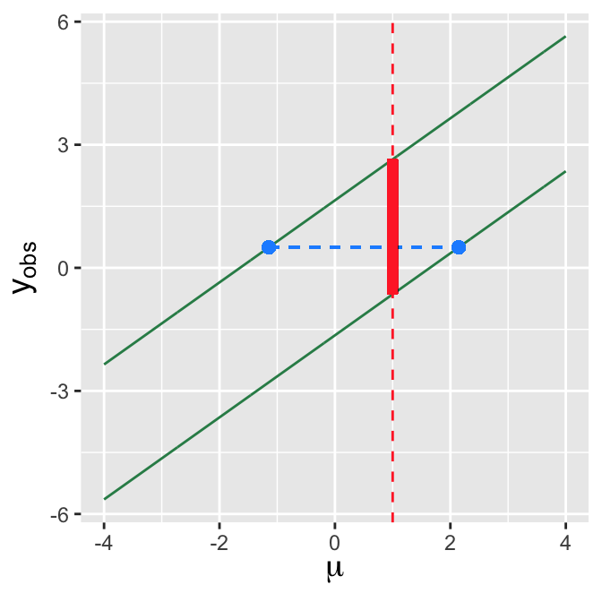
3.7.1 Working With Discrete Sampling Distributions
When we work with discrete sampling distributions, the overall picture is similar, but we sometimes need to make what we will dub “discreteness corrections” so that the codes we use generate the correct results. Figure 3.11 is an analogue to Figure 3.10 in which we illustrate the relationship between confidence intervals and hypothesis tests for a situation in which we conduct \(k = 10\) binomial trials. Because the statistic is discretely valued, the acceptance-region boundaries are step functions, but this is not the only change introduced with discrete distributions:
In the continuous case, the probability of sampling a datum that lies within the acceptance region for a given value of \(\theta\) is exactly \(1 - \alpha\). In the discrete case, the probability is \(\geq 1 - \alpha\). (And it will rarely, if ever, be the case that the probability masses within the acceptance region will sum to exactly \(1 - \alpha\)…although the sum will converge towards \(1 - \alpha\) as \(nk \rightarrow \infty\). This motivates our use of the word “level,” as in “we conduct a level-\(\alpha\) test,” rather than “size.” For a size-\(\alpha\) test, the probability of sampling a statistic value in the acceptance region is, by definition, exactly \(1-\alpha\), while for a level-\(\alpha\) test, it is \(\geq 1 - \alpha\).)
Because the probability of sampling a datum in the acceptance region is equal to the confidence interval coverage, the coverage will also be \(\geq 1 - \alpha\).
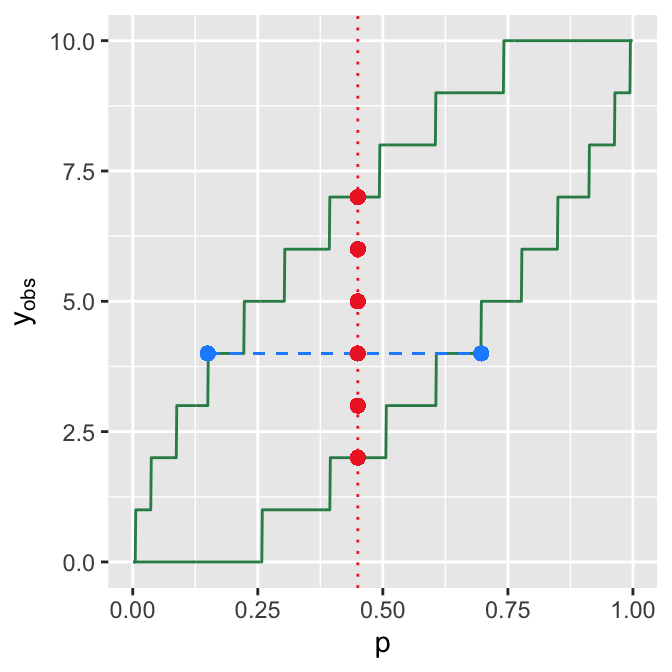
The blue dashed line in Figure 3.11 is an example of a confidence interval (specifically for \(y_{\rm obs} = 4\)). In order to construct an interval like this, we would use a uniroot()-style code as we have before, but we would potentially change the value of the observed statistic, as displayed below.
| lower bound | upper bound | |
| yes line | \(y_{\rm obs}-a\) | \(y_{\rm obs}\) |
| no line | \(y_{\rm obs}\) | \(y_{\rm obs}-a\) |
The value \(a\) is the difference between the observed statistic value and the next lower value in the sampling distribution’s domain; for a binomial distribution, \(a = 1\). (Refer to Section 1.16.1 for the meanings of “yes line” and “no line.”)
We note that for the specific case of the binomial distribution, the confidence intervals that we construct are dubbed exact, or Clopper-Pearson, intervals. Because binomial distributions have historically been difficult to work with analytically, a number of algorithms have been developed through the years for constructing approximate confidence intervals for binomial probabilities. (See, e.g., this Wikipedia page for examples.) It is our opinion that there is no reason to utilize any of these algorithms when one can compute exact intervals, particularly since the coverages of exact intervals are easily derived for any given value \(p\). However, for completeness, we illustrate how one would construct the most-commonly used approximating interval, the Wald interval, in an example below.
For more on confidence intervals, go to Section 4.6.
3.7.2 Examples
3.7.2.1 Binomial Probability: Confidence Interval
Assume that we sample \(n\) iid data from a binomial distribution with number of trials \(k\) and probability \(p\). Then, as shown above, \(Y = \sum_{i=1}^n X_i \sim\) Binom(\(nk,p\)); our observed test statistic is \(y_{\rm obs} = \sum_{i=1}^n x_i\). For this statistic, \(E[Y] = nkp\) increases with \(p\), so \(q = 1-\alpha/2\) maps to the lower bound, while \(q = \alpha/2\) maps to the upper bound.
Code
# generate data; typically, X would be provided
set.seed(101)
n <- 12
k <- 5
p <- 0.4
X <- rbinom(n, size = k, prob = p)
# construct 95% interval
alpha <- 0.05
Y <- sum(X)
f <- function(p, y.obs, n, k, q)
{
pbinom(y.obs, size = n * k, prob = p) - q
}
# note discreteness correction in first function call below
round(uniroot(f, interval = c(0, 1), y.obs = Y - 1, n, k, 1 - alpha / 2)$root, 3)[1] 0.246Code
round(uniroot(f, interval = c(0, 1), y.obs = Y, n, k, alpha / 2)$root, 3)[1] 0.501We find that the interval is \([\hat{p}_L,\hat{p}_U] = [0.246,0.501]\), which overlaps the true value of 0.4. (See Figure 3.12.) Note that, unlike in Section 2.12, the interval over which we search for the root is [0,1], which is the range of possible values for \(p\).
We can compute the coverage of this interval following the prescription given above, assuming \(p = 0.4\):
Code
y.rr.lo <- qbinom( alpha / 2, n * k, p)
y.rr.hi <- qbinom(1 - alpha / 2, n * k, p)
round(sum(dbinom(y.rr.lo:y.rr.hi, n * k, p)), 3)[1] 0.965Due to the discreteness of the binomial distribution, the true coverage of our intervals (given \(n = 12\), \(k = 5\), and \(p = 0.4\)) is 96.5%, not 95%.
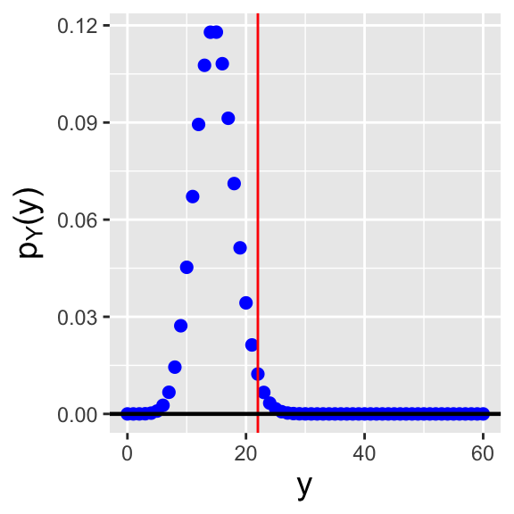
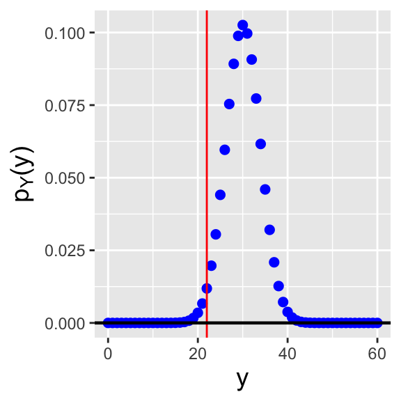
3.7.2.2 Binomial Probability: Wald Interval
Let’s assume that we have sampled \(n\) iid binomial variables with number of trials \(k\) and success probability \(p\). When \(k\) is sufficiently large and \(p\) is sufficiently far from 0 or 1, we can assume that \(\bar{X}\) has a distribution whose shape is approximately that of a normal distribution, with mean \(E[\bar{X}] = kp\) and with variance and standard error \[ V[\bar{X}] = \frac{kp(1-p)}{n} ~~~ \mbox{and} ~~~ se(\bar{X}) = \sqrt{V[\bar{X}]} = \sqrt{\frac{kp(1-p)}{n}} \,. \] Furthermore, we can assume that \(\hat{p} = \bar{X}/k\) is approximately normally distributed, with mean \(p\), variance \(V[\hat{p}] = V[\bar{X}]/k^2 = p(1-p)/nk\), and standard error \(\sqrt{p(1-p)/nk}\). Given this information, it is simple to express, e.g., an approximate two-sided \(100(1-\alpha)\)% confidence interval for \(p\): \[ \hat{p} \pm z_{1-\alpha/2} se(\hat{p}) ~~ \Rightarrow ~~ \left[ \hat{p} - z_{1-\alpha/2} \sqrt{\frac{p(1-p)}{nk}} \, , \, \hat{p} + z_{1-\alpha/2} \sqrt{\frac{p(1-p)}{nk}} \right] \,, \] where \(z_{1-\alpha/2} = \Phi^{-1}(1-\alpha/2)\). However, we don’t actually know the true value of \(p\)…so we plug in \(p = \hat{p}\).
This is the so-called Wald interval that is typically provided to students in introductory statistics courses, although it is typically provided assuming \(n = 1\) and assuming that \(\alpha = 0.05\): \[ \left[ \hat{p} - 1.96 \sqrt{\frac{\hat{p}(1-\hat{p})}{k}} \, , \, \hat{p} + 1.96 \sqrt{\frac{\hat{p}(1-\hat{p})}{k}} \right] \,, \] where in this case \(\hat{p} = X/k\).
What is the Wald interval for the situation provided in the first example above?
Code
# generate data
set.seed(101)
n <- 12
k <- 5
p <- 0.4
X <- rbinom(n, size = k, prob = p)
# compute 95% interval
alpha <- 0.05
z <- qnorm(1 - alpha / 2)
p.hat <- sum(X) / (n * k)
round(p.hat + c(-1, 1) * z * sqrt(p.hat * (1 - p.hat) / (n * k)), 3)[1] 0.245 0.489We compare these values to those generated in the first example: \([0.236,0.501]\). Here, the interval is smaller relative to the Clopper-Pearson interval, and thus the coverage for \(p = 0.4\) (which we would have to estimate via simulation) will be smaller as well.
3.7.2.3 Negative Binomial Probability: Confidence Interval
Let’s assume that we have performed \(n = 12\) separate negative binomial trials, each with a target number of successes \(s = 5\), and recorded the number of failures \(X_1,\ldots,X_{n}\) for each. Below we will show how to compute the confidence interval for the success probability \(p\), but before we start, we recall that \(Y = X_+ = \sum_{i=1}^n X_i\) is a negative binomially distributed random variable for \(ns\) successes and success probability \(p\). Here, \(E[Y] = s(1-p)/p\)…as \(p\) increases, \(E[Y]\) decreases. Thus when we adapt the confidence interval code we use for binomially distributed data, we need to switch the mapping of \(q = 1-\alpha/2\) and \(q = \alpha/2\) to the upper and lower bounds, respectively.
Code
# generate data
set.seed(101)
n <- 12
s <- 5
p <- 0.4
X <- rnbinom(n, size = s, prob = p)
# compute 95% interval
alpha <- 0.05
Y <- sum(X)
f <- function(p, y.obs, n, s, q)
{
pnbinom(y.obs, size = n * s, prob = p) - q
}
# note discreteness correction in second function call below
round(uniroot(f, interval = c(0.0001, 1), y.obs = Y , n, s, alpha / 2)$root, 3)[1] 0.326Code
round(uniroot(f, interval = c(0.0001, 1), y.obs = Y - 1, n, s, 1 - alpha / 2)$root, 3) [1] 0.485The confidence interval is \([\hat{p}_L,\hat{p}_U] = [0.326,0.485]\), which overlaps the true value 0.4. We note that in the code, we change the lower bound on the interval from 0 (in the binomial case) to 0.0001 (something suitably small but non-zero): a probability of success of 0 maps to an infinite number of failures, which
Rcannot tolerate!
We can compute the coverage of this interval following the prescription given above:
Code
y.rr.lo <- qnbinom(1 - alpha / 2, n * s, p)
y.rr.hi <- qnbinom( alpha / 2, n * s, p)
round(sum(dnbinom(y.rr.lo:y.rr.hi, n * s, p)), 3)[1] 0.951Due to the discreteness of the negative binomial distribution, the true coverage in this instance is 95.1%, not 95%.
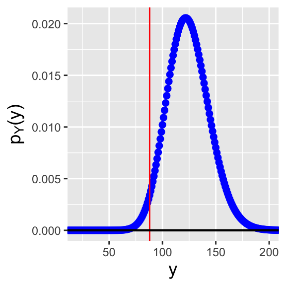
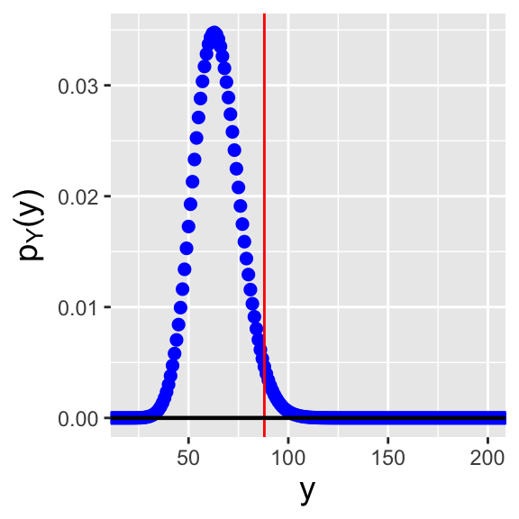
3.7.2.4 Hypergeometric Distribution: Number of Successes
Let’s suppose that we have a collection of \(K = 200\) objects, and that when we sample \(k = 10\) of them without replacement, we find that \(x = 3\) of them are defective. (We are assuming that finding a defective object is a “success.”) The question: what is the overall number of defective objects in the collection?
To begin to answer this question, we will construct a 95% two-sided confidence interval for the total number of successes \(s\). Our test statistic is \(Y = X\), which has the observed value \(y_{\rm obs} = 3\). Recall that the expected value for \(X\) is \(E[X] = ks/K\); as \(s\) increases, the expected value increases, so we are on the “yes” line of the reference table. At this point, we have all the information we need to construct our interval:
Code
alpha <- 0.05
K <- 200
k <- 10
X <- 3
f <- function(s, y.obs, K, k, q)
{
phyper(y.obs, s, K - s, k) - q
}
round(uniroot(f, interval = c(X, K - (k - X)), y.obs = X - 1, K = K, k = k, q = 1 - alpha / 2)$root, 3)[1] 14.5Code
round(uniroot(f, interval = c(X, K - (k - X)), y.obs = X , K = K, k = k, q = alpha / 2)$root, 3)[1] 129.5Our 95% confidence interval is \([14.5,129.5]\): with so few observed data, we cannot tightly constrain the overall number of defective objects in the collection.
3.7.2.5 Order Statistic: Confidence Interval
In an example above, we determined the probability density function of the \(j = 70^{\rm th}\) ordered datum, given \(n = 200\) data sampled according to a standard normal distribution. Here, we will change this up a bit: if, for instance, we assume that we are sampling data according to a \(\mathcal{N}(\mu,1)\) distribution, and the value of the \(70^{\rm th}\) ordered datum is \(x_{(70),\rm obs} = -0.5\), what would be a 95% two-sided confidence interval for \(\mu\)?
As the reader will see in the code below, the only difference between this calculation and previous ones is that instead of adopting a pre-existing
Rcode for the cdf in the expression \(F_Y(y_{\rm obs} \vert \theta) - q\), we define our own cdf code, which we base on the expression for the cdf of an order statistic given previously in this chapter, in Section 3.5.
Code
alpha <- 0.05
# function returning the cdf for an order statistic
F <- function(x, j, n, mu)
{
F.j <- 0
for ( ii in j:n ) {
F.j <- F.j + choose(n, ii) * (pnorm(x, mu, 1))^ii * (1 - pnorm(x, mu, 1))^(n-ii)
}
return(F.j)
}
f <- function(mu, y.obs, n, j, q)
{
F(y.obs, j, n, mu) - q
}
round(uniroot(f, interval = c(-10, 10), y.obs = -0.5, n = 200, j = 70, q = 1 - alpha / 2)$root, 3)[1] -0.286Code
round(uniroot(f, interval = c(-10, 10), y.obs = -0.5, n = 200, j = 70, q = alpha / 2)$root, 3)[1] 0.071Our 95% two-sided confidence interval for \(\mu\) is \([-0.286,0.071]\). We note (and the interested reader can confirm) that as we go from \(j = 1\) (the minimum value) to \(j = 200\) (the maximum value), the interval widths will systematically get smaller, on average, and then, after \(j \approx 100\), will systematically get larger. This makes intuitive sense: the minimum and maximum values will of course be less informative about the population mean than the values around the sample median. However, despite this, because the exact sampling distribution is known for all values of \(j\), the coverage of each of the intervals will be exactly 95%.
3.7.2.6 Order Statistics: Distribution-Free Confidence Interval for Percentiles
Let’s revisit the data that we generated in an example in the last section:
[1] 0.275 0.430 0.687 0.717 1.252 1.275 1.386 2.262 3.327 3.447 4.127In that example, we determined that 2.7945 is a (biased) point estimate for the underlying distribution’s \(75^{\rm th}\) percentile, \(\chi_{0.75}\). Here, we will show how one can utilize order statistics and the binomial distribution to construct a confidence interval for this quantity.
Let \(q\) represent a quantile and let \(\chi_q\) be its associated 100\(q^{\rm th}\) distribution percentile. Our goal is to define an interval \(X_{(i)} \leq \chi_q \leq X_{(j)}\) such that \[\begin{align*} i &= {\rm sup}\{ k \in [1,n] \vert P(X_{(i)} > \chi_q) < \frac{\alpha}{2} \} \\ j &= {\rm inf}\{ k \in [1,n] \vert P(X_{(j)} < \chi_q) < \frac{\alpha}{2} \} \,. \end{align*}\] Let’s examine the first line. Here, \(P(X_{(i)} > \chi_q)\) represents the probability that at least \(i\) out of \(n\) observations have values greater than \(\chi_q\). The smallest value of the defined set is given by the generalized inverse cumulative distribution function, with input \(\alpha/2\); in
Rcode:
Code
alpha <- 0.05
q <- 0.75
qbinom(alpha / 2, n, q)[1] 5Similar reasoning yields a value for \(j\):
Code
qbinom(1 - alpha / 2, n, q)[1] 11Hence a distribution-free 95% two-sided interval estimate for \(\chi_{0.75}\) is
Code
cat("[", X[qbinom(alpha / 2, n, q)], ",", X[qbinom(1 - alpha / 2, n, q)], "]\n")[ 1.252 , 4.127 ]Since the sampling distribution for the number of data that have values less than \(\chi_q\) is known exactly (it’s a binomial distribution), the coverage of intervals constructed like the one above will be \(\geq 1-\alpha\) (but not \(= 1-\alpha\) since we are working with a discrete sampling distribution).
We note in passing that it can be the case that one can sometimes construct shorter confidence intervals that still have coverage \(\geq 1-\alpha\) by removing the requirement that the tail summations be \(< \alpha/2\) on either side of the interval. Such intervals would still be valid because there is no theoretical requirement that \(\alpha\) be “split evenly” to define lower and upper interval bounds…it is just standard practice to make an even split.
3.8 Hypothesis Testing: Neyman-Pearson Lemma
What to take away from this section:
The Neyman-Pearson lemma states that a ratio of likelihood functions constitutes the most powerful test of the simple hypotheses \(H_o : \theta = \theta_o\) and \(H_a : \theta = \theta_a\).
If the rejection region associated with this most powerful test is not a function of \(\theta_a\), then the test we define is a uniformly most powerful test.
If we are working with a member of the exponential family of distributions, then the NP lemma is telling us that we should simply conduct a hypothesis test in the manner described in Section 1.17 and Section 2.13 while utilizing a sufficient statistic for \(\theta\).
For previous material on hypothesis testing, see Section 2.13.
Recall: a hypothesis test is a framework to make an inference about the value of a population parameter \(\theta\). The null hypothesis \(H_o\) is that \(\theta = \theta_o\), while possible alternatives \(H_a\) are \(\theta \neq \theta_o\) (two-tail test), \(\theta > \theta_o\) (upper-tail test), and \(\theta < \theta_o\) (lower-tail test). For, e.g., a one-tail test, we reject the null hypothesis if the observed test statistic \(y_{\rm obs}\) falls outside the bound given by \(y_{RR}\), which is a solution to the equation \[ F_Y(y_{RR} \vert \theta_o) - q = 0 \,, \] where \(F_Y(\cdot)\) is the cumulative distribution function for the statistic \(Y\) and \(q\) is an appropriate quantile value that is determined using the hypothesis test reference table introduced in Section 1.17.2. Note that the hypothesis test framework only allows us to make a decision about a null hypothesis; nothing is proven.
In Section 2.13, we utilized \(\bar{X}\) when testing hypotheses about the normal mean \(\mu\). This is a principled choice for a test statistic\(-\)after all, \(\bar{X}\) is the MLE for \(\mu-\)but can we choose a better one?
To help answer this question, we now introduce a method for defining the most powerful test of a simple null hypothesis versus a simple alternative hypothesis: \[ H_o : \theta = \theta_o ~~\mbox{and}~~ H_a : \theta = \theta_a \,. \] Note that the word “simple” has a precise meaning here: it means that when we set \(\theta\) to a particular value, we are completely fixing the shape and location of the pmf or pdf from which the data are sampled. If, for instance, we are dealing with a normal distribution with unknown variance \(\sigma^2\), the hypothesis \(\mu = \mu_o\) would not be simple, since the width of the pdf can still vary: the shape is not completely fixed. (The hypothesis \(\mu = \mu_o\) with variance unknown is dubbed a composite hypothesis. We will discuss the more general case wherein we work with composite hypotheses in Section 4.7.) For a given test level \(\alpha\), the Neyman-Pearson lemma states that the test with the most power has a rejection region of the form \[ \lambda_{NP} = \frac{\mathcal{L}(\theta_o \vert \mathbf{x})}{\mathcal{L}(\theta_a \vert \mathbf{x})} < c(\alpha) \,, \] where \(c\) is a constant that we must determine, one whose value is a function of \(\alpha\). While this formulation initially appears straightforward, it is in fact not necessarily clear how to derive \(c(\alpha)\). However: when we work with distributions that belong to the exponential family, we don’t have to! The NP lemma utilizes the likelihood function, so in this situation it is implicitly telling us that the best statistic for differentiating between two simple hypotheses is a sufficient statistic. We simply determine a sufficient statistic and use its sampling distribution to define a hypothesis test via the procedure we have laid out previously. Full stop. (What if the distribution we are working with is not a member of the exponential family? We would need to determine the sampling distribution of \(\lambda_{NP}\) itself, something most easily done via simulations. We illustrate this in an example below.)
For instance, when we draw \(n\) iid data from a binomial distribution, the sufficient statistic \(\sum_{i=1}^n X_i\) has a known and easily utilized sampling distribution\(-\)namely, Binom(\(nk,p\))\(-\)while \(\bar{X} = (\sum_{i=1}^n X_i)/n\) does not. So we would utilize \(Y = \sum_{i=1}^n X_i\). (Note that it ultimately doesn’t matter which function of a sufficient statistic we use: if we can carry out the math, we will end up with tests that have the same power and result in the same \(p\)-values. It would be very problematic if this wasn’t the case: we’d have to “fish around” to determine which function of a sufficient statistic would give us the best test, which clearly would not be a good situation to find ourselves in.)
Let’s assume that we use \(Y = \sum_{i=1}^n X_i\) to define, e.g., a lower-tail test \(H_o : p = p_o\) versus \(H_a : p = p_a < p_o\). Since \(E[Y] = nkp\) increases with \(p\), we can go to the hypothesis test reference tables and write (in code) that
Code
u.rr <- qbinom(1 - alpha, size = k, prob = p.o)We see that our rejection region boundary depends on the value of \(p_o\), but not on the value of \(p_a\). This means that the test we define above is the most-powerful test regardless of the value \(p_a < p_o\). We have thus constructed a uniformly most powerful (or UMP) test for disambiguating the simple hypotheses \(H_o : p = p_o\) and \(H_a : p = p_a < p_o\). It is typically the case that when we use the NP lemma to define a most powerful test for \(\theta_o\) versus \(\theta_a\), we end up defining a UMP test as well. That is because the families of distributions that we work with typically exhibit so-called monotone likelihood ratios [or MLRs]. For more information on MLRs and UMPs, the interested reader should look up the Karlin-Rubin theorem (in, e.g., Casella and Berger (2002)).
Note that we cannot use the NP lemma to construct most powerful two-tail hypothesis tests. When we construct a two-tail test, it is convention to define one rejection region boundary assuming \(q = \alpha/2\) and the other assuming \(q = 1 - \alpha/2\). But that is just convention; we could put \(\alpha/10\) on “one side” and \(1-9\alpha/10\) on the other, etc., and in general we cannot guarantee that any one way of splitting \(\alpha\) will yield a more powerful test in a given situation than any other possible split.
3.8.1 Working With Discrete Sampling Distributions
We conclude our present discussion of hypothesis tests with an overview of how working with a discrete sampling distribution affects computations.
In the last section, we introduced the idea of a “discreteness correction”; for confidence interval calculations, this involved changing the observed statistic value to the next lower value in the domain of the sampling distribution when estimating a lower interval bound (with \(E[Y]\) increasing with \(\theta\)) or when estimating an upper interval bound (with \(E[Y]\) decreasing with \(\theta\)). (For the binomial and negative binomial distributions, this means changing \(y_{\rm obs}\) to \(y_{\rm obs}-1\).) What are the discreteness corrections that we need to make when performing hypothesis tests? First, there are none when computing rejection-region boundaries. Second, when computing \(p\)-values, we may have to change the observed statistic value to the next lower value in the domain of the sampling distribution for \(p\)-value computations…
| lower tail | upper tail | |
| yes line | \(y_{\rm obs}\) | \(y_{\rm obs}-a\) |
| no line | \(y_{\rm obs}-a\) | \(y_{\rm obs}\) |
…and we may have to change the rejection-region boundary value to the next lower value in the domain of the sampling distribution for test power computations…
| lower tail | upper tail | |
| yes line | \(y_{\rm RR}-a\) | \(y_{\rm RR}\) |
| no line | \(y_{\rm RR}\) | \(y_{\rm RR}-a\) |
The value \(a\) is the difference between the observed statistic value and the next lower value in the sampling distribution’s domain; for a binomial distribution, \(a = 1\). (Refer to Section 1.17.2 for the meanings of “yes line” and “no line.”)
For more on hypothesis testing, go to Section 4.7.
3.8.2 Examples
3.8.2.1 Exponential Distribution: UMP Test of Population Mean
Let’s suppose we sample \(n = 3\) iid data from the exponential distribution \[ f_X(x) = \frac{1}{\theta} e^{-x/\theta} \,, \] for \(x \geq 0\) and \(\theta > 0\), and we wish to define the most powerful test of the simple hypotheses \(H_o : \theta_o = 2\) and \(H_a : \theta_a = 1\). We observe the values \(\mathbf{x}_{\rm obs} = \{0.215,1.131,2.064\}\), and we assume \(\alpha = 0.05\).
We begin by determining a sufficient statistic: \[ \mathcal{L}(\theta \vert \mathbf{x}) = \prod_{i=1}^3 \frac{1}{\theta} e^{-x_i/\theta} = \frac{1}{\theta^3} e^{(\sum_{i=1}^3 x_i)/\theta} \,. \] We identify \(Y = \sum_{i=1}^3 X_i\) as a sufficient statistic. The next question is whether we can determine the sampling distribution for \(Y\). The moment-generating function for each of the \(X_i\)’s is \[ m_{X_i}(t) = (1 - \theta t)^{-1} \,, \] and so the mgf for \(Y\) is \[ m_Y(t) = \prod_{i=1}^3 m_{X_i}(t) = (1 - \theta t)^{-3} \,, \] We (might!) recognize this as the mgf for a Gamma(3,\(\theta\)) distribution. (The gamma distribution will be officially introduced in Section 4.3.3.) So: we know the sampling distribution for \(Y\), and we can use it to define the most powerful test. To reiterate: the only thing that the NP lemma is doing for us here is guiding our selection of a test statistic. Beyond that, we construct the test using the framework we already learned in Section 1.17 and Section 2.13.
Because \(\theta_a < \theta_o\), we define a lower-tail test. And since \(E[Y] = 3\theta\) increases with \(\theta\), we utilize the formulae from the hypothesis test reference tables that are on the “yes” line. The rejection-region boundary is thus \[ y_{\rm RR} = F_Y^{-1}(\alpha \vert \theta_o) \,, \] which in code is
Code
x.obs <- c(0.215, 1.131, 2.064)
(y.obs <- sum(x.obs))[1] 3.41Code
alpha <- 0.05
theta.o <- 2
y.rr <- qgamma(alpha, shape = 3, scale = theta.o)
round(y.rr, 3)[1] 1.635Our observed statistic is \(y_{\rm obs} = 3.410\) and the rejection-region boundary is 1.635: we fail to reject the null and conclude that we have insufficient statistical evidence to rule out that \(\theta = 2\).
We note that because \(y_{\rm RR}\) is not a function of \(\theta_a\), we have not only defined the most powerful test, but we have also defined a uniformly most powerful test for all alternative hypotheses \(\theta_a < \theta_o\).
What is the \(p\)-value, and what is the power of the test if \(\theta = 1.5\)?
According to the hypothesis test reference tables, the \(p\)-value is \[ p = F_Y(y_{\rm obs} \vert \theta_o) \,, \] which in code is
Code
round(pgamma(y.obs, shape = 3, scale = theta.o), 3)[1] 0.244The \(p\)-value is 0.244, which is greater than \(\alpha\), as we expect.
The test power is \[ {\rm power}(\theta) = F_Y(y_{\rm RR} \vert \theta) \,, \] which in code is
Code
theta <- 1.5
round(pgamma(y.rr, shape = 3, scale = theta), 3)[1] 0.098The power is 0.097…given the specifics of our experiment, it is the case that only 9.7% of the time will we reject the null hypothesis \(\theta_o = 2\) when \(\theta\) is actually 1.5.
3.8.2.2 Negative Binomial Distribution: UMP Test of Success Probability
Let’s assume that we sample \(n = 5\) data from a negative binomial distribution \[ p_X(x) = \binom{x+s-1}{x} p^s (1-p)^x \,, \] with \(x \in \{0,1,\ldots,\infty\}\) being the observed number of failures prior to observed the \(s^{\rm th}\) success, \(p \in (0,1]\), and \(s = 3\) successes. We wish to define the most powerful test of the simple hypotheses \(H_o : p_o = 0.5\) and \(H_a : p_a = 0.25\). We observe the values \(\mathbf{x}_{\rm obs} = \{5,3,10,12,4\}\), and we assume \(\alpha = 0.05\).
As in the last example, we begin by determining a sufficient statistic: \[ \mathcal{L}(\theta \vert \mathbf{x}) = \prod_{i=1}^5 \binom{x_i+s-1}{x_i} p^s (1-p)^x_i \propto \prod_{i=1}^5 p^s (1-p)^x_i = p^{ns} (1-p)^{\sum_{i=1}^5 x_i} \,. \] We identify \(Y = \sum_{i=1}^5 X_i\) as a sufficient statistic. In Section 3.4 we determined that if the \(X_i\)’s are iid draws from a negative binomial distribution with parameters \(p\) and \(s\), then the sum is also negative binomially distributed, with parameters \(p\) and \(ns\). So: we know the sampling distribution for \(Y\), and we can use it to define the most powerful test.
Because \(p_a < p_o\), we will define a lower-tail test. And since \(E[Y] = s(1-p)/p\) decreases with \(p\), we will utilize the formulae from the hypothesis test reference tables that are on the “no” line (and we will reject the null hypothesis if \(y_{\rm obs} > y_{\rm RR}\)).
The rejection-region boundary is \[ y_{\rm RR} = F_Y^{-1}(1-\alpha \vert p_o) \,, \] which in code is
Code
x.obs <- c(5, 3, 10, 12, 4)
n <- length(x.obs)
(y.obs <- sum(x.obs))[1] 34Code
alpha <- 0.05
p.o <- 0.5
y.rr <- qnbinom(1 - alpha, size = 3 * n, prob = p.o)
round(y.rr, 3)[1] 25Our observed statistic is \(y_{\rm obs} = 34\) and the rejection-region boundary is 25: we reject the null hypothesis and state that there is sufficient evidence to conclude that \(p < 0.5\).
We note that because \(y_{\rm RR}\) is not a function of \(p_a\), we have not only defined the most powerful test, but we have also defined a uniformly most powerful test for all alternative hypotheses \(p_a < p_o\).
What is the \(p\)-value, and what is the power of the test if \(p = 0.3\)?
According to the hypothesis test reference tables (and the description of discreteness corrections given above), the \(p\)-value is \[ p = 1 - F_Y(y_{\rm obs}-1 \vert p_o) \,, \] which in code is
Code
round(1 - pnbinom(y.obs - 1, size = 3 * n, prob = p.o), 3)[1] 0.003The \(p\)-value is 0.0028, which is less than \(\alpha\): we would decide to reject the null hypothesis.
The test power (a calculation that in this instance does not require a discreteness correction) is \[ {\rm power}(\theta) = 1 - F_Y(y_{\rm RR} \vert p) \,, \] which in code is
Code
p <- 0.3
round(1 - pnbinom(y.rr, size = 3 * n, prob = p), 3)[1] 0.807We find that the power is 0.807…80.7% of the time will we reject the null hypothesis \(p = 0.5\) when \(p\) is actually 0.3 (and when \(n = 5\) and \(s = 3\)).
3.8.2.3 Normal Distribution: UMP Test for the Population Mean
In Section 2.13, we use the statistic \(\bar{X}\) as the basis for testing hypotheses about the normal population mean, \(\mu\). We justified this choice because, at the very least, \(\hat{\mu}_{MLE} = \bar{X}\), so it is a principled choice. However, beyond that, we did not (and indeed could not) provide any further justification. Is \(\bar{X}\) the basis of the UMP for \(\mu\)?
Recall that the NP lemma does not apply if there are two freely varying parameters. The NP lemma applies to simple hypotheses, where the hypotheses uniquely specify the population from which data are drawn. Here, even if we set \(H_o: \mu = \mu_o\) and \(H_a: \mu = \mu_a\), \(\sigma^2\) can still freely vary. (So, technically, these hypotheses are composite hypotheses.) So to go further here, we must assume \(\sigma^2\) is known.
When \(\sigma^2\) is known, we can factorize the likelihood as \[\begin{align*} &\mathcal{L}(\mu,\sigma^2 \vert \mathbf{x}) \\ = ~ &\underbrace{\exp\left(\frac{\mu}{\sigma^2}\sum_{i=1}^n x_i\right)\exp\left(-\frac{n\mu^2}{2\sigma^2}\right)}_{g(\sum x_i,\mu)} \cdot \underbrace{(2 \pi \sigma^2)^{-n/2} \exp\left(-\frac{1}{2\sigma^2}\sum_{i=1}^n x_i^2\right)}_{h(\mathbf{x})} \,, \end{align*}\] and identify \(Y = \sum_{i=1}^n X_i\) as a sufficient statistic. We know from using the method of moment-generating functions that the sum of \(n\) iid normal random variables is itself a normal random variable with mean \(n\mu\) and variance \(n\sigma^2\), so \(Y \sim \mathcal{N}(n\mu,n\sigma^2)\).
Let’s assume that \(\mu_a > \mu_o\), or, in other words, that we are performing an upper-tail test. Given that \(E[Y] = n\mu\), we know that we are on the “yes” line of the hypothesis test reference tables, so the rejection region is \[ Y > y_{\rm RR} = F_Y^{-1}(1-\alpha,n\mu_o,n\sigma^2) \,, \] or, in code,
qnorm(1-alpha, n*mu.o, n*sigma2)The rejection-region boundary does not depend on \(\mu_a\), so we have defined a uniformly most powerful test of \(\mu = \mu_o\) versus \(\mu = \mu_a > \mu_o\).
“But wait. What about \(\bar{X}\)?”
Recall that a function of a sufficient statistic is itself a sufficient statistic, so we could also use \(Y' = \bar{X} = Y/n\) as our statistic, particularly as we do know its sampling distribution: \(\mathcal{N}(\mu,\sigma^2/n)\). Thus \[ Y' > y_{\rm RR}' = F_Y^{-1}(1-\alpha,\mu_o,\sigma^2/n) \,, \] or, in code,
qnorm(1-alpha, mu.o, sigma2/n)“But…\(y_{\rm RR}\) and \(y_{\rm RR}'\) do not have the same value!”
This is fine, because \(Y\) and \(Y'\) don’t have the same value either. The key point is that when we compute, e.g., \(p\)-values given observed data, they will be the same in both cases. And the test power will be the same. We can use any one-to-one function of a sufficient statistic to define our test; in practice, we will use any function of a sufficient statistic for which we know the sampling distribution. Here we know the distributions for both the sample sum and the sample mean; in other situations (like when we are working with binomially distributed data), we won’t, not necessarily.
Now, what if \(\sigma^2\) is unknown? We discuss this possibility in Section 4.7, when we introduce the likelihood ratio test.
3.8.2.4 A Test That is Not a Uniformly Most Powerful Test
Let’s assume we draw one datum \(X\) from a normal distribution with mean \(\mu\) and variance \(\mu^2\), and we wish to test \(H_o : \mu = \mu_o = 1\) versus \(H_a : \mu = \mu_a\). Can we define a uniformly most powerful test of these hypotheses?
To try to do this, we utilize the NP lemma. However, there is an immediate issue that arises: here, there are two sufficient statistics that are identified via factorization (\(\sum_{i=1}^n X_i\) and \(\sum_{i=1}^n X_i^2\)), but just one parameter (\(\mu\)). So we cannot circumvent working directly with the likelihood ratio: \[\begin{align*} \frac{\mathcal{L}(\theta_o \vert \mathbf{x})}{\mathcal{L}(\theta_a \vert \mathbf{x})} = \frac{f_X(x \vert \theta_o)}{f_X(x \vert \theta_a)} = \mu_a \exp\left(-\frac{(x-1)^2}{2}+\frac{(x-\mu_a)^2}{2\mu_a^2}\right) \,. \end{align*}\] To reject the null hypothesis, the ratio must be less than some constant \(c(\alpha)\). First, we can divide both sides of the inequality by \(\mu_a\) (which is a set constant), so that now we reject the null if \[\begin{align*} \exp\left(-\frac{(x-1)^2}{2}+\frac{(x-\mu_a)^2}{2\mu_a^2}\right) < c'(\alpha) \,. \end{align*}\] We then take the natural logarithm of each side; we would reject the null if \[\begin{align*} -\frac{(x-1)^2}{2}+\frac{(x-\mu_a)^2}{2\mu_a^2} < c''(\alpha) \,. \end{align*}\] It turns out that for the test to be uniformly most powerful, we would have to perform further manipulations so as to isolate \(x\) on the left-hand side of the inequality, with only constants appearing on the right-hand side (i.e., we would need to simplify this expression such that it achieves the form \(x < k\) or \(x > k\)). Here, that is impossible to do, meaning that the value of the rejection region boundary changes as \(\mu_a\) changes. Thus while we can define the most powerful test of \(H_o : \mu = \mu_o = 1\) versus \(H_a : \mu = \mu_a\), that test is not going to be a uniformly most powerful one.
3.8.2.5 Estimating a \(p\)-Value via Simulation
Let’s assume that we sample \(n\) iid data from a Beta(\(\theta\), 1) distribution, one whose probability density function is \[\begin{align*} f_X(x \vert \theta) = \theta x^{\theta-1} \,, \end{align*}\] where \(x \in [0,1]\) and \(\theta > 0\). Furthermore, let’s assume we wish to test \(H_o : \theta = \theta_o = 1\) versus \(H_a : \theta > \theta_o\). Because the beta distribution is a member of the exponential family of distributions, we know that we can use the NP lemma to define a UMP upper-tail test and thus we need not write down a specific alternative value for \(\theta\).
We know that a sufficient statistic will provide the basis for the most powerful test. Likelihood factorization indicates that one such statistic is \[\begin{align*} Y = \prod_{i=1}^n X_i \,, \end{align*}\] but, since functions of sufficient statistics are themselves sufficient, we can also utilize \[\begin{align*} Y' = \log \prod_{i=1}^n X_i = \sum_{i=1}^n \log X_i \,. \end{align*}\] We choose to use \(Y'\) because in general, summations are computationally simply to work with than products.
However…we do not know the sampling distribution for \(Y'\). So we simulate. In a simulation, we do the following:
- we sample data from the original distribution given the null;
- we form the statistic and store its value;
- we repeat steps 1 and 2 a large number of times; and
- we see how often the simulated statistic value is equal to or more extreme than the value we observe…that proportion is our estimated \(p\)-value.
Regarding the last point above: \(E[X]\) increases as \(\theta\) increases, and so \(E[Y'] = \sum_{i=1}^n E[\log X_i]\) also increases with \(\theta\), so we are on the “yes” line of the reference table and the \(p\)-value is the probability of seeing the statistic value we observe or a value that is larger.
Let’s assume that the observed value of our statistic is \(-4.758\). Below we carry out a simulation of 100,000 datasets wherein we assume \(\theta = 1\) and determine the proportion of statistic values that are equal to, or larger than, \(-4.758\).
The observed statistic is -4.758 Code
X <- runif(n * num.sim) # the null is equivalent to Uniform(0,1)
X <- matrix(X, nrow = num.sim) # each row a dataset of size n
Y <- apply(X, 1, function(x){sum(log(x))}) # the simulated statistics
p <- sum(Y >= y.obs) / num.sim # the p-value
cat("The estimated p-value is ", round(p, 4), "\n")The estimated p-value is 0.0241 We can visualize the empirical sampling distribution using a histogram. See Figure 3.14, in which the \(p\)-value is the “area under the curve” to the right of the observed statistic value (the vertical red line). To ensure that the \(p\)-value estimate is as precise as possible, we should run as many simulations as our computer and our time will allow!
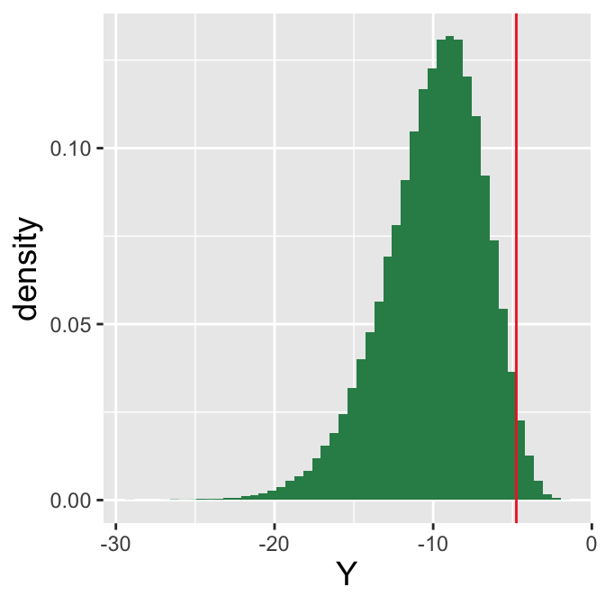
The estimated \(p\)-value is a point estimate. We can add value to this estimate by using it to construct a confidence interval on the unknown true \(p\)-value. We can do this because our simulation is like a binomial experiment, in which
- the number of trials \(k\) is the number of simulations (
num.sim); and- the probability of success \(p\) is the probability of sampling a value of \(Y \geq y_{\rm obs}\) (given that this is an upper-tail test with \(E[Y]\) increasing with \(\theta\)).
In the code below, we denote the observed statistic (here, the number of times we observe \(Y \geq y_{\rm obs}\)) as
u.obs.
Code
f <- function(p, k, u.obs, q)
{
pbinom(u.obs, size = k, prob = p) - q
}
round(uniroot(f, interval = c(0, 1), k = num.sim, u.obs = sum(Y >= y.obs) - 1, q = 0.975)$root, 3)[1] 0.023Code
round(uniroot(f, interval = c(0, 1), k = num.sim, u.obs = sum(Y >= y.obs) , q = 0.025)$root, 3)[1] 0.025(Note how we apply a discreteness correction when computing the lower bound.) Our estimated 95% confidence interval for the true \(p\)-value is [0.0232,0.0251]; we can feel “confident” when we decide, in this situation, to reject the null hypothesis that \(\theta = \theta_o = 1\).
3.8.2.6 NP Lemma: When Data Reduction is Not Possible
The logistic distribution, whose probability density function is \[\begin{align*} f_X(x \vert \mu) = \frac{\exp(\mu-x)}{[1+\exp(\mu-x)]^2} \end{align*}\] for \(x \in (-\infty,\infty)\) and \(\mu \in (-\infty,\infty)\), is not a member of the exponential family of distributions. This means that if we sample \(n\) iid data according to this distribution, we cannot reduce them so as to define a single-number sufficient statistic for \(\mu\). What we can do, however, is the following:
- we can simulate a large number of datasets under the null hypothesis \(\mu = \mu_o\);
- for each dataset, we can record \(\ell(\mu_o \vert \mathbf{x})\) and \(\ell(\mu_a \vert \mathbf{x})\), and the difference between the two (which is \(\log \lambda_{NP}\)); and
- we can determine the \(\alpha^{\rm th}\) percentile of the distribution of \(\log \lambda_{NP}\) values.
The \(\alpha^{\rm th}\) percentile is the rejection-region boundary for the most powerful test of the simple hypotheses \(\mu = \mu_o\) and \(\mu = \mu_a\). Note that because \(\mu_a\) must be specified to carry out the simulations, what we define is not a uniformly most powerful test.
Below, we determine the the \(p\)-value, rejection-region boundary, and the test power for a situation in which we sample \(n = 10\) iid data according to a logistic distribution for which \(\mu_o = 1\), with our alternative hypothesis being \(\mu_a = 3\). (See Figure 3.15.)
Code
# generate data
set.seed(36236)
alpha <- 0.05
num.sim <- 100000
n <- 10
mu.o <- 1
mu.a <- 2
X <- matrix(rlogis(n * num.sim, location = mu.o), nrow = num.sim)
f <- function(x, mu.o)
{
sum(log(dlogis(x, location = mu.o)))
}
log.like.o <- apply(X, 1, f, mu.o = mu.o)
log.like.a <- apply(X, 1, f, mu.o = mu.a)
delta.log.like <- log.like.o - log.like.a
# The p-value for a dataset sampled under the null
X.obs <- rlogis(n, location = mu.o)
delta.log.like.obs <- f(X, mu.o) - f(X, mu.a)
p <- sum(delta.log.like <= delta.log.like.obs) / num.sim
round(p, 4)[1] 1Code
# The rejection-region boundary
rr <- quantile(delta.log.like, probs = alpha)
round(rr, 3) 5%
-1.362 Code
# The test power for mu = mu.a
X <- matrix(rlogis(n * num.sim, location = mu.a), nrow = num.sim)
log.like.o.p <- apply(X, 1, f, mu.o = mu.o)
log.like.a.p <- apply(X, 1, f, mu.o = mu.a)
delta.log.like.p <- log.like.o.p - log.like.a.p
power <- sum(delta.log.like.p < rr) / num.sim
round(power, 3)[1] 0.568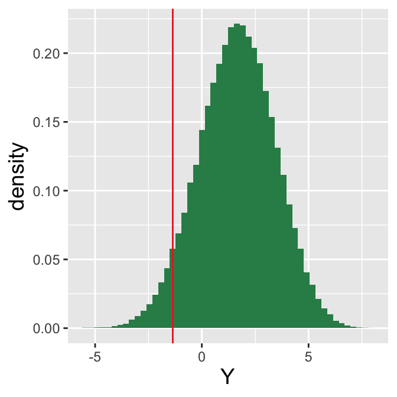
3.8.2.7 Binomial Probability: Large-Sample Approximation Tests
In an example in Section 3.1, we saw that if \[ k > 9\left(\frac{\mbox{max}(p,1-p)}{\mbox{min}(p,1-p)}\right) \,, \] then, given a random variable \(X \sim\) Binomial(\(k\),\(p\)), we can assume \[ X \overset{d}{\rightarrow} Y \sim \mathcal{N}(kp,kp(1-p)) \,, \] or that \[ \hat{p} = \hat{p}_{MLE} = \frac{X}{k} \overset{d}{\rightarrow} X' \sim \mathcal{N}(p,p(1-p)/k) \,. \] In hypothesis testing, this approximation forms the basis of two different tests: \[\begin{align*} \mbox{Score}~\mbox{Test:} ~~ & \hat{p} \sim \mathcal{N}(p_o,p_o(1-p_o)/k) \\ \mbox{Wald}~\mbox{Test:} ~~ & \hat{p} \sim \mathcal{N}(p_o,\hat{p}(1-\hat{p})/k) \,. \end{align*}\] The only difference between the two is in how the variance is estimated under the null. To carry out these tests, we can simply adapt the expressions for the \(p\)-values, rejection regions, and power so that we carry out carry out tests of the normal population mean with variance known, with the primary change being the definition of the variance.
We are including the details of the Wald and Score tests here for completeness, in that they are ubiquitous in introductory statistics settings. As they yield only approximate results, we would encourage the reader to always use the exact testing mechanisms described previously, while being mindful of the effects of the discreteness of the probability mass function, especially when \(n\) and \(k\) are both small.
3.8.2.8 Uniform Distribution: Test of Population Bound with Sample Median
Let’s assume that we draw \(n\) iid data, where \(n\) is an odd number, from a Uniform(\(0,\theta\)) distribution, and that we wish to test the hypothesis \(H_o: \mu = \mu_o = 1/2\) versus \(H_a: \mu = \mu_a > \mu_o\) at level \(\alpha\). (Let’s also assume that all the data we observe lie in the range \([0,1]\)…otherwise the null cannot be correct. We will return to this point in Chapter 5.) Here we will show how to carry out this test using the sample median as the test statistic. To be clear, because the sample median is not a sufficient statistic for \(\theta\), what we define here will not be a most powerful test.
In Section 3.5, we wrote down the formula for the order statistic cdf: \[ F_{(j)}(x) = \sum_{i=j}^n \binom{n}{i} [F_X(x)]^i [1 - F_X(x)]^{n-i} \,. \] For the Uniform(\(0,\theta\)) distribution, the cdf is \[ F_X(x) = \int_0^x \frac{1}{\theta} dy = \frac{x}{\theta} \,, \] and so the cdf for the sample median will be \[ F_{((n+1)/2)}(x) = \sum_{i=(n+1)/2}^n \binom{n}{i} \left[\frac{x}{\theta}\right]^i \left[1 - \frac{x}{\theta}\right]^{n-i} \,. \] This is easily coded. Let’s do this, assuming that, e.g., \(n = 11\) and the observed median value is \(y_{\rm obs} = \tilde{x}_{\rm obs} = 0.61\). Note that because \(E[Y]\) increases with \(\theta\), then the \(p\)-value for this test will be \(1 - F_{((n+1)/2)}(\tilde{x}_{\rm obs} \vert \theta_o)\).
Code
F <- function(x, j, n, theta)
{
i <- j:n
sum( choose(n, i) * (x / theta)^i * (1 - x / theta)^(n - i) )
}
y.obs <- 0.61
n <- 11
j <- 6
theta.o <- 1
round(1 - F(y.obs, j, n, theta.o), 3)[1] 0.225The observed \(p\)-value is 0.225; we fail to reject the null hypothesis and conclude that we have insufficient statistical evidence to rule out that \(\theta = 1\).
3.9 Hypothesis Testing: Categorical Hypotheses
What to take away from this section:
Conducting, e.g., surveys and observational studies can lead to the generation of multinomially distributed data, i.e., data that are recorded across a set of “bins.”
Given a single vector of multinomial data \(\{X_1,\ldots,X_m\}\), where \(\sum_{i=1}^m X_i = k\), and a null hypothesis that the expected data proportions across the bins are \(\{p_{1,o},\ldots,p_{m,o}\}\), we should carry out multinomial simulations so as to derive exact hypothesis test \(p\)-values, as opposed to the historically often-used chi-square goodness-of-fit test.
If our data are arrayed across a contingency table with \(r\) rows and \(c\) columns, there are a number of hypothesis tests that one could conceivably carry out, including Barnard’s exact test, the chi-square test of homogeneity, and the chi-square test of independence.
For previous material on hypothesis testing, see Section 2.13.
In Section 3.8, we expanded upon our descriptions of hypothesis testing given earlier in the book by showing how the Neyman-Pearson lemma allows us to define, e.g., uniformly most powerful one-tail hypothesis tests for the values of parameters of members of the exponential family of distributions. However, with the introduction of categorical data in this chapter, data that we can model with binomial or multinomial distributions, there is a new aspect to hypothesis testing that we will begin to discuss here: testing categorical hypotheses.
Let’s begin by making up a simple dataset:
| \(x_1\) | \(x_2\) | \(x_3\) | \(n = \sum_{i=1}^3 x_i\) |
| 6 | 10 | 4 | 20 |
In this experiment, \(n = 20\) data were collected, with three possible outcomes: \(\{X_1, X_2, X_3\}\).
3.9.1 Multinomial Simulations
Assuming that \(n\) was fixed prior to data collection, this is an example of a multinomial experiment. (We defer discussion of how subsequent testing changes if \(n\) is not fixed to Section 4.7.) This data vector is trivially a sufficient statistic for the vector of probabilities \(\mathbf{p} = \{p_1, p_2 ,p_3\}\), and the probability mass function of the sampling distribution for this statistic is simply the multinomial pmf introduced in Section 3.3.3.
It is natural, given such data, to test whether or not they are consistent with a specified probability vector: \(\mathbf{p}_o = \{p_{1,o}, p_{2,o} ,p_{3,o}\}\). This is our null hypothesis; the alternative is that at least two of the probabilities differ from the specified values. As we cannot carry out the test by hand, we fall back on the definition of a \(p\)-value and use simulations to estimate the proportion of data vectors simulated under the null hypothesis that have pmf values that are smaller than what we observe. Such simulations are straightforward, as we show in an example below.
3.9.2 The Chi-Square Goodness-of-Fit Test
We note that in the era before computers, statisticians could not carry out such simulations. In Pearson (1900), it was noted that as \(k \rightarrow \infty\), multinomial random variables converge in distribution to multivariate normal random variables (with the multivariate normal being something we will discuss in Section 6.6), and that the statistic \[ W = \sum_{i=1}^m \frac{(X_i-E[X_i])^2}{E[X_i]} = \sum_{i=1}^m \frac{(X_i - kp_i)^2}{kp_i} \] converges in distribution to a chi-square random variable for \(m-1\) degrees of freedom. (We subtract 1 because only \(m-1\) of the multinomial probabilities can freely vary; the \(m^{th}\) one is constrained by the fact that the probabilities must sum to 1. This constraint is what makes multinomial data not iid.) In another example below, we show how one can use the chi-square goodness-of-fit test in place of multinomial simulations. However, we will state here that because the chi-square GoF test is based on a large-sample approximation, any computed \(p\)-value will only be approximately correct. Given the choice, one should always implement exact multinomial tests rather than approximate chi-square GoF tests. In an example below, we demonstrate that the chi-square GoF test yields \(p\)-values that are, on average, smaller than expected, making it less conservative than the exact multinomial test (i.e., it rejects correct null hypotheses at a higher rate than we would expect).
3.9.3 The Chi-Square Tests of Independence and Homogeneity
Let’s build upon the simple dataset shown above, by adding another row of data:
| \(x_1\) | \(x_2\) | \(x_3\) | \(\sum_{i=1}^3 x_i\) | |
| \(y_1\) | 6 | 10 | 4 | 20 |
| \(y_2\) | 8 | 4 | 8 | 20 |
| \(\sum_{i=1}^2 y_i\) | 14 | 14 | 12 | 40 |
The experiment that generated these data had six possible outcomes, and we display the data in a \(2 \times 3\) contingency table. (To be clear, there is nothing special here about the exact number of rows or columns…the key is that we have more than one of each.) Given such data, the typical question of interest is whether the data in each row (or, equivalently, in each column) are sampled from the same distribution. Generally, that question is to be answered without regard to the actual probabilities that we would observe each outcome; i.e., the null hypothesis is simply that the vectors of probabilities in each row (or, equivalently, in each column) are the same. Because the null hypothesis probabilities are implicitly estimated and not explicitly specified, one cannot test the null using multinomial simulations. There is a variety of tests that one can apply; which is the optimal choice depends on the details of the experimental design.
The data are displayed in a \(2 \times 2\) contingency table, with the row and column sums both fixed by design. In such a situation, we might use Fisher’s exact test. However, such designs are rare and Fisher’s test, as constructed, is generally too conservative (i.e., it produces \(p\)-values that are larger than they should be), so we will forgo discussing Fisher’s test further here.
The data are displayed in a \(2 \times 2\) contingency table, with either the row sums or the column sums fixed by design (but not both). Here, we would use, e.g., a test related to Barnard’s exact test, which is effectively a two-sample test of binomial proportions.
The data are displayed in a contingency table that is larger than \(2 \times 2\), with either the row sums or the column sums fixed by design (but not both). Here, we would apply the chi-square test of homogeneity.
The data are displayed in a contingency table that is larger than \(2 \times 2\), with neither the row sums nor the column sums fixed by design. Here, we would apply the chi-square test of independence.
As we will see, the mathematical details for the chi-square tests of homogeneity and independence are identical, and thus both are demonstrated within a single example below.
3.9.4 Examples
3.9.4.1 Multinomial Simulations
Imagine that we are scientists, sitting on a platform in the middle of a plain, and we have decided that we will record the azimuthal angle for each of the first \(k = 100\) animals we observe. (An azimuthal angle is, e.g., \(0^\circ\) when looking directly north, and 90\(^\circ\), 180\(^\circ\), and 270\(^\circ\) as we look east, south, and west, etc.) These are our data:
| angle range | 0\(^\circ\)-90\(^\circ\) | 90\(^\circ\)-180\(^\circ\) | 180\(^\circ\)-270\(^\circ\) | 270\(^\circ\)-360\(^\circ\) | |
| number of animals | 28 | 32 | 17 | 23 | 100 |
The question we wish to answer is whether the animals are uniformly distributed across all four quadrants.
These data are multinomial data: the number of trials is fixed, and there are four possible outcomes for each. To answer the question, then, we simulate \(100{,}000\) data vectors given the null hypothesis \(H_o : \{p_1 = 0.25, p_2 = 0.25, p_3 = 0.25, p_4 = 0.25\}\) and determine the proportion of vectors with multinomial pmf values that are smaller than the value we observe:
Code
O <- c(28, 32, 17, 23)
p <- rep(1/4, 4)
pmf.obs <- dmultinom(O, prob = p) # the observed multinomial pmf value
set.seed(101)
num.sim <- 100000
k <- sum(O)
m <- length(O)
X <- rmultinom(num.sim, k, p) # generates an m x num.sim matrix
# (m determined as the length of p)
pmf <- apply(X, 2, function(x){dmultinom(x, prob = p)}) # pmf vector
round(sum(pmf < pmf.obs) / num.sim, 4) # the estimated p-value[1] 0.1597What does
apply()do? It calls the function given as the third argument (which evaluates the multinomial probability mass function given a set of four data \(\mathbf{x}\) and a a set of four probabilities \(\mathbf{p}\)) to each column (hence the “2” as the second argument…“1” would denote rows) of the matrix \(\mathbf{X}\). It is a convenient function that allows us to not have to embed the evaluation of the multinomial pmf into aforloop that would iterate over all the rows of the matrix. We note that the above computation takes \(\sim\) 1 CPU second on a standard desktop/laptop computer.
We observe \(p = 0.1597\), i.e., approximately \(16{,}000\) of the \(100{,}000\) simulated data vectors have pmf values smaller than what we observe. We thus fail to reject the null hypothesis and conclude that it is plausible that the animals are distributed uniformly as a function of angle.
The multinomial hypothesis test is “exact,” in the sense that the data are distributed according to the multinomial distribution, but because we only sample a finite number of data vectors, the \(p\)-value is only an estimate and not an exact value. We can utilize the framework given earlier, in Section 3.7, to construct a 95% confidence interval for the binomial probability \(p\), given our simulation result:
Code
Y <- sum(pmf < pmf.obs)
f <- function(p, k, y.obs, q)
{
pbinom(y.obs, size = k, prob = p) - q
}
round(uniroot(f, interval = c(0, 1), k = num.sim, y.obs = Y-1 , q = 0.975)$root, 4)[1] 0.1574Code
round(uniroot(f, interval = c(0, 1), k = num.sim, y.obs = Y , q = 0.025)$root, 4)[1] 0.162The 95% two-sided confidence interval on the true \(p\)-value is \([0.1574,0.1620]\): when we fail to reject the null, we can be very confident that we are not making a mistake. To decrease the interval length, we would simply increase
num.sim; the tradeoff is that the computation time becomes that much longer.
3.9.4.2 Chi-Square Goodness of Fit Test
The computation of the test statistic \(W\) is the basis of the chi-square goodness-of-fit test, or chi-square GoF test. For this test,
- we reject the null hypothesis if \(W > w_{RR}\);
- the \(p\)-value is \(1 - F_{W(m-1)}(w_{\rm obs})\) (e.g.,
1 - pchisq(w.obs, m - 1)); and- by convention, \(kp_i\) must be \(\geq\) 5 in each bin for the test to yield a valid result.
We are discussing the chi-square GoF test here because its use is ubiquitous in statistics and thus every student should know what it is and how it is carried out…but not because one should actually use it now, in the age of computers. The price that we pay when we use the chi-square GoF test is that, for relatively small values of \(k\), it yields biased \(p\)-value estimates.
Let’s go back to working with our animal/angle data, and determine, via the use of the chi-square GoF test, whether it is plausible that the number of animals is distributed uniformly as a function of angle.
We first compute the test statistic: \[\begin{align*} W &= \sum_{i=1}^m \frac{(X_i - kp_i)^2}{kp_i} \\ &= \frac{(28-25)^2}{25} + \frac{(32-25)^2}{25} + \frac{(17-25)^2}{25} + \frac{(23-25)^2}{25} \\ &= \frac{9}{25} + \frac{49}{25} + \frac{64}{25} + \frac{4}{25} = \frac{126}{25} = 5.04 \,. \end{align*}\] The number of degrees of freedom is \(m-1 = 3\), so the \(p\)-value is
Code
W <- sum( (O - k * p)^2 / (k * p) )
round(1 - pchisq(W, m - 1), 3)[1] 0.169We fail to reject the null hypothesis that the animals are distributed uniformly as a function of azimuthal angle. See Figure 3.16.
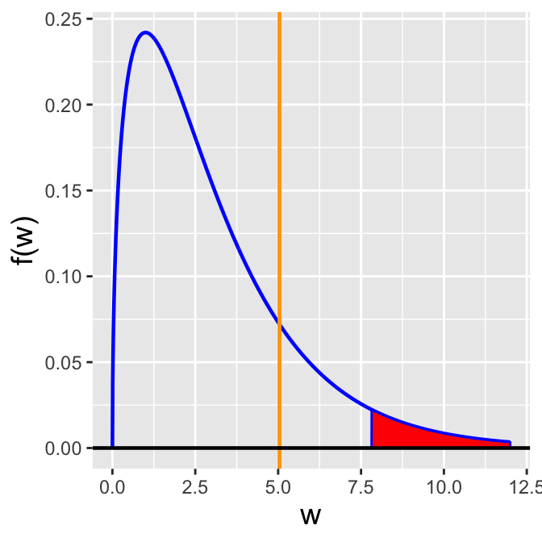
The observed \(p\)-value, 0.169, is 5.6% larger than the value observed for the exact multinomial test (0.160, with 95% CI \([0.1574,0.1620]\) for \(100{,}000\) simulations). As we will see below, sometimes the \(p\)-value is larger and sometimes smaller, but on average the \(p\)-value observed for the chi-square GoF test will be smaller than that observed for the multinomial test, at least for small values of \(k\). We elaborate on this point in the next example below.
3.9.4.3 Comparing Multinomial Simulations with the Chi-Square GoF Test
Let’s suppose that in an experiment, we toss a six-sided die \(k\) times and record the result. For instance, we might toss it \(k = 10\) times, and record the data vector \(\mathbf{X} = \{2,1,3,1,0,3\}\) (i.e., we observe 1 two times, 2 one time, etc.). We wish to test the hypothesis that the die is fair. On average, what is the difference in the \(p\)-value observed when utilize the exact multinomial test versus when we utilize the approximate chi-square GoF test?
Let’s first illustrate how we would determine the average difference when \(k = 30\). (See Figure 3.17.) For this number of trials, the expected number of counts in each bin is exactly 5, i.e., this is the minimum number of trials required by convention when carrying out the chi-square GoF test.
Code
k <- 30
m <- 6
p <- rep(1 / m, m)
set.seed(101)
num.rep <- 1000
p.chi <- rep(NA, num.rep)
p.mult <- rep(NA, num.rep)
delta.p <- rep(NA, num.rep)
num.sim <- 1000
for ( ii in 1:num.rep ) {
X.obs <- rmultinom(1, k, p)
W <- sum((X.obs - k * p)^2 / (k * p))
p.chi[ii] <- 1 - pchisq(W, m - 1)
obs <- dmultinom(X.obs, prob = p)
X <- rmultinom(num.sim, k, p)
a <- apply(X, 2, function(x, p){dmultinom(x, prob = p)}, p = p)
p.mult[ii] <- sum(a <= obs) / num.sim
delta.p[ii] <- p.mult[ii] - p.chi[ii]
}
cat("Mean Difference:",round(mean(delta.p), 5), "\n")Mean Difference: 0.0098 Code
cat("SE Difference: ",round(sd(delta.p) / sqrt(num.rep), 5), "\n\n")SE Difference: 0.00135 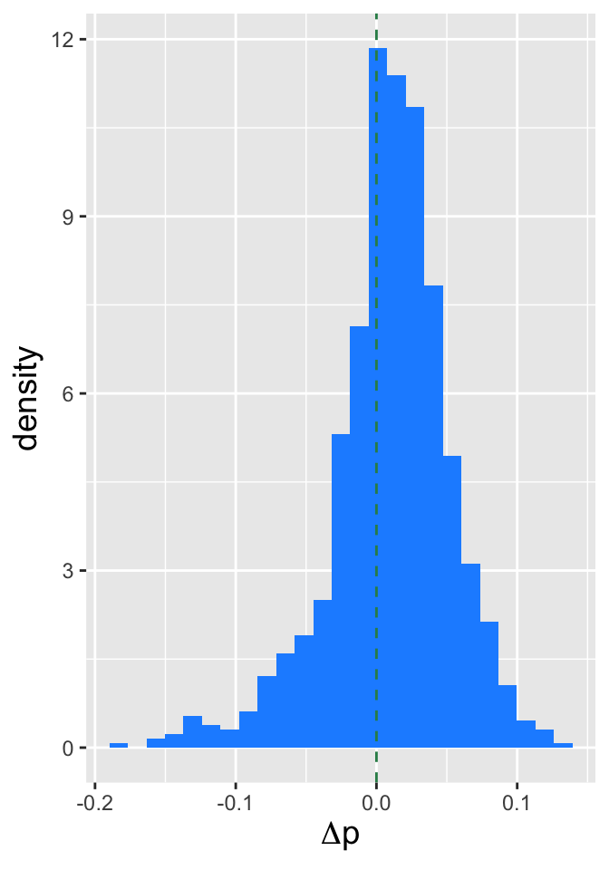
We find that for \(k = 30\), the average value of \(\Delta p = p_{\rm mult} - p_{\rm chi}\) is \(\approx 0.01\), i.e., on average the chi-square GoF test is less conservative (or more likely to result in the rejection of a correct null hypothesis).
In Figure 3.18, we show how the average value of \(\Delta p\) changes as a function of \(k\). We see here that while by convention the expected number of counts per bin is supposed to be at least five, it is only when the expected counts reach \(\approx\) 20 or more that we no longer observed a statistically significant difference between the average \(p\)-values.
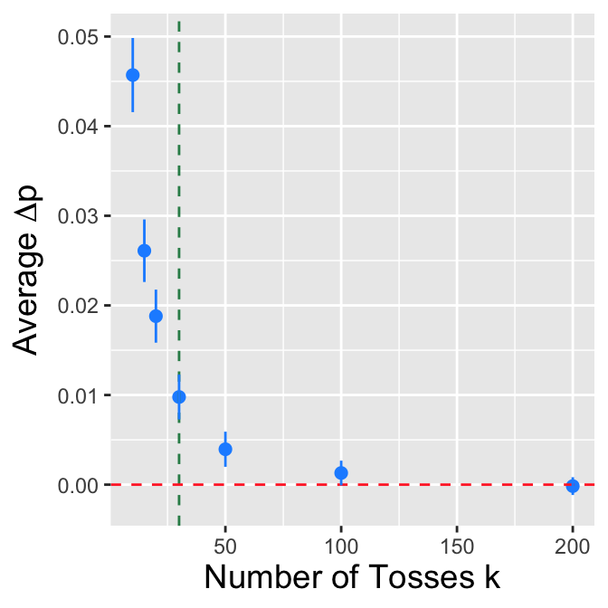
3.9.4.4 Chi-Square GoF Test: Discrete Distributions
In Section 2.14, we introduced the Kolmogorov-Smirnov test, which one can use to test the null hypothesis that a set of data are sampled according to a specified continuous distribution. How, on the other hand, might we determine whether a set of data are sampled according to a specified discrete distribution?
The chi-square goodness-of-fit test is a mechanism for doing just that. Let’s illustrate its use via an example.
In a survey, 100 people were presented with a list of four restaurants and asked to indicate how many they had eaten at. These are the data:
| 0 | 1 | 2 | 3 | 4 |
| 30 | 22 | 20 | 16 | 12 |
Is it plausible that these data are sampled according to a binomial distribution with \(k = 4\) and unknown success probability \(p\)?
Key to this exercise is that we are not specifying \(p\). If we did specify it, then we would be able to carry out multinomial simulations (since we would know the pmf value for each bin)…if the \(p\)-value is less than 0.05, we would reject the null and conclude that it is implausible that the data are sampled according to a Binom(\(k,p\)) distribution.
Carrying out the test is a two-step process. First, we must estimate \(p\). We use the maximum-likelihood estimate, \(X_+/nk\): \[ \hat{p} = \frac{0 \cdot 30 + 1 \cdot 22 + 2 \cdot 20 + 3 \cdot 16 + 4 \cdot 12}{100 \cdot 4} = 0.395 \,. \] We then apply that estimate within the chi-square GoF test framework:
Code
p.hat <- (0 * 30 + 1 * 22 + 2 * 20 + 3 * 16 + 4 * 12)/(100 * 4)
O <- c(30, 22, 20, 16, 12)
E <- 100 * dbinom(0:4, size = 2.5, prob = p.hat)Warning in dbinom(0:4, size = 2.5, prob = p.hat): NaNs producedCode
W <- sum( (O - E)^2 / E )
m <- length(O)
round(1 - pchisq(W, m - 2), 3)[1] NaNThe \(p\)-value is effectively 0, as \(W = 69.0\) for 3 degrees of freedom. Thus we reject the null and conclude that it is (highly) implausible that the observed data are sampled according to a binomial distribution.
Note the last line of code above: here, we write
m - 2instead ofm - 1. The act of estimating a value for a distribution parameter leads to the loss of an additional degree of freedom. So, for instance, if we were to test whether these data are normally distributed and we were to estimate both \(\mu\) and \(\sigma^2\), the input topchisq()would bem - 3. Etc.
3.9.4.5 Two-Sample Test of Binomial Proportions
Let’s suppose that two surveys are conducted related to an election. In the first survey, 45 of 80 respondents backed Proposition A, while in the second survey, 42 of 100 respondents backed the same proposition. Is it plausible that the same proportion of the electorate backs both propositions?
Here are the data as they would appear in a \(2 \times 2\) contingency table:
| Yes | No | ||
| Survey 1 | 45 | 35 | 80 |
| Survey 2 | 42 | 58 | 100 |
| 87 | 93 | 180 |
By design, the row sums are fixed, as the numbers of respondents are set in advance. Given that all the data are independent, we can see that each row displays the results of binomial experiments, with success probabilities \(p_1\) and \(p_2\). The question stated above now becomes: is \(p_1 = p_2\)?
One way this question has been answered historically is to carry out Barnard’s unconditional exact test. The word “unconditional” means that because the true probability \(p = p_1 = p_2\) is not specified under the null, we are to carry out the test over a dense grid of values between 0 and 1, record the \(p\)-values for each, and then determine the maximum of the recorded \(p\)-values and use that as the overall \(p\)-value for the test. The word “exact” means that the test takes into account the binomial distributions underlying the data in each row. However, in an ironic twist, typical implementations of Barnard’s test do not generate exact \(p\)-values, as under the hood they will make use of approximations to speed calculations. Below, we will show how we can actually carry out an exact test ourselves.
Code
k1 <- 80 # Survey 1
k2 <- 100 # Survey 2
# generate all possible differences: p2 - p1
o <- outer((0:k2) / k2, (0:k1) / k1, '-')
# keep only the unique difference values (sorted)
v <- sort(unique(as.vector(o)))
# the observed data
x1 <- 45
x2 <- 42
pdiff <- x2 / k2 - x1 / k1
# unconditional test: example binomial p = {0.01, 0.02, ..., 0.99}
p <- seq(0.01, 0.99, by = 0.01)
pval <- rep(NA, length(p))
ii <- 1
for ( p.o in p ) {
# determine the exact pmf for p2 - p1, given p
pmf <- rep(0, length(v))
for ( i1 in 0:k1 ) {
for ( i2 in 0:k2 ) {
w <- which(v == i2 / k2 - i1 / k1)
pmf[w] <- pmf[w] + dbinom(i1, k1, p.o) * dbinom(i2, k2, p.o)
}
}
# given exact pmf, what is the (two-tail) p-value?
pval[ii] = 2 * min(c(sum(pmf[v <= pdiff]), sum(pmf[v >= pdiff])))
ii <- ii + 1
}
# what is the maximum p-value?
round(max(pval), 4)[1] 0.0589We conclude that the \(p\)-value is 0.0589: we fail to reject the null. Let’s compare this result with, e.g., that of
barnard.test(), included inR’sBarnardpackage.
Code
library(Barnard)
barnard.test(45, 42, 35, 58, dp = 0.01)
Barnard's Unconditional Test
Treatment I Treatment II
Outcome I 45 42
Outcome II 35 58
Null hypothesis: Treatments have no effect on the outcomes
Score statistic = -1.90106
Nuisance parameter = 0.03 (One sided), 0.48 (Two sided)
P-value = 0.037167 (One sided), 0.058697 (Two sided)Here, the \(p\)-value is 0.0587. While our result above is truly exact, the ones generated by
barnard.test()will typically be close enough that both codes will yield the same qualitative result.
We note for completeness that the framework of this test can, in theory, be extended beyond \(2 \times 2\) tables by utilizing multinomial distributions instead of binomial distributions, but in practice this is rarely, if ever, done. Given a larger table, it is standard to fall back upon the chi-square-based tests illustrated below.
3.9.4.6 Chi-Square Tests of Homogeneity and Independence
Let’s return to the animal data we introduced above. When we observe the animals in each quadrant, let’s suppose we also record their colors: black or red. So now our data look like this:
| 0\(^\circ\)-90\(^\circ\) | 90\(^\circ\)-180\(^\circ\) | 180\(^\circ\)-270\(^\circ\) | 270\(^\circ\)-360\(^\circ\) | ||
| black | 20 | 18 | 5 | 14 | 57 |
| red | 8 | 14 | 12 | 9 | 43 |
| 28 | 32 | 17 | 23 | 100 |
Are the data in each row (or, equivalently, in each column) sampled according to the same underlying distribution? In other words, is \(p_{0-90,\rm black} = p_{0-90,\rm red}\), etc.?
These data are ultimately multinomial data: we have 100 animals spread across 8 defined bins. But because we do not specify the probabilities for each bin, and because exact testing is too computationally expensive, we have to fall back upon a chi-square-based test. Here, neither the row sums nor the column sums are fixed in advance, and so we would carry out a chi-square test of independence. But even if one of sets of sums was fixed, leading us to carry out a chi-square test of homogeneity, the mathematics would be entirely the same!
Under the null hypothesis, \[ \widehat{E[X_{ij}]} = \frac{r_i c_j}{k} \,, \] i.e., the expected value in the cell in row \(i\) and column \(j\) is the product of the total number of data in row \(i\) and column \(j\), divided by the total number of data overall. Then our test statistic is \[ W = \sum_{i=1}^r \sum_{j=1}^c \frac{(X_{ij} - \widehat{E[X_{ij}]})^2}{\widehat{E[X_{ij}]}} \mathrel{\dot\sim} \chi_{(r-1)(c-1)}^2 \,. \] \(W\) is, under the null, assumed to be chi-square distributed for \((r-1) \times (c-1)\) degrees of freedom. (Because we do not specify exact probabilities for observing data in each table cell under the null, the observed data are not sampled according to a multinomial distribution…and, in fact, we cannot specify an exact distribution. Hence for testing independence and homogeneity given categorical data, the chi-square framework is going to be the most appropriate framework for us to use.)
When we record two attributes for each subject (here, azimuthal angle and color), we can perform a chi-square test of independence to answer the question of whether the attributes are independent random variables. In other words, here, does the coloration depend on angle? The null hypothesis is no. We will test this hypothesis assuming \(\alpha = 0.05\).
We first determine the expected number of counts in each bin, \(\widehat{E[X_{ij}]} = r_i c_j / k\):
| 0\(^\circ\)-90\(^\circ\) | 90\(^\circ\)-180\(^\circ\) | 180\(^\circ\)-270\(^\circ\) | 270\(^\circ\)-360\(^\circ\) | |
| black | 57 \(\cdot\) 28/100 = 15.96 | 57 \(\cdot\) 32/100 = 18.24 | 57 \(\cdot\) 17/100 = 9.69 | 57 \(\cdot\) 23/100 = 13.11 |
| red | 43 \(\cdot\) 28/100 = 12.04 | 43 \(\cdot\) 32/100 = 13.76 | 43 \(\cdot\) 17/100 = 7.31 | 43 \(\cdot\) 23/100 = 9.89 |
| 28 | 32 | 17 | 23 |
We can already see that working with the numbers directly is tedious. Can we make a matrix of such numbers using
R?
Code
r <- c(57, 43)
c <- c(28, 32, 17, 23)
(E <- (r %*% t(c)) / sum(r)) # multiply r and the transpose of c - much better [,1] [,2] [,3] [,4]
[1,] 15.96 18.24 9.69 13.11
[2,] 12.04 13.76 7.31 9.89If we wish to continue using
R, we need to define a matrix of observed data values:
Code
(O <- matrix(c(20, 8, 18, 14, 5, 12, 14, 9), nrow = 2)) # fills in column-by-column [,1] [,2] [,3] [,4]
[1,] 20 18 5 14
[2,] 8 14 12 9Now we have what we need. The test statistic is
Code
(W <- round(sum( (O - E)^2 / E ), 3))[1] 7.805and the number of degrees of freedom is \((r-1)(c-1) = 1 \cdot 3 = 3\), so the \(p\)-value is
Code
round(1 - pchisq(W, 3), 4)[1] 0.0502We fail to reject the null hypothesis. We might be tempted to reject it, as our test statistic very nearly falls into the rejection region, but we cannot. We could, if we were so inclined, remind ourselves that chi-square-based hypothesis tests are approximate, and run a simulation to try to estimate the true distribution of \(W\), and see what the rejection region and \(p\)-value actually are…that way, we might be able to actually reject the null. But really, at the end of the day, such a result should simply motivate us to collect more data!
3.10 Logistic Regression
What to take away from this section:
Given a set of data tuples \(\{(x_1,Y_1),\ldots,(x_n,Y_n)\}\), where the \(x_i\)’s are continuously valued, we can attempt to determine an association between \(\mathbf{x}\) and \(\mathbf{Y}\) by learning a generalized linear model or GLM, with the exact model details depending on how the \(Y_i\)’s are distributed.
A link function maps the straight line \(\beta_0 + \beta_1 x\) to a more restricted range along the \(y\)-axis, one that is consistent with the distribution assumed for the \(Y_i\)’s.
In logistic regression, we assume \(Y \vert x \sim\) Bernoulli(\(p(x)\)) and we relate \(\beta_0 + \beta_1 x\) to \(p(x)\) using the logit link function.
A logistic regression model is not a classifier, in and of itself: it produces a predicted probability that a datum observed at \(x\) takes on the value 1 (rather than 0), and it is up to us to map that predicted probability to a predicted class.
Recall: a statistical model is a representation of the data-generating process.
In Section 2.15, we introduced simple linear regression model, in which we assume the data-generating process can be described mathematically as \[ Y_i = \beta_0 + \beta_1x_i + \epsilon_i \,. \] In this model, the coefficients \(\beta_0\) and \(\beta_1\), and the predictor variable value \(x_i\), are fixed constants, while the error term \(\epsilon_i\) (and thus also the response variable value \(Y_i\)) are random variables. To perform hypothesis testing (e.g., \(H_o : \beta_1 = 0\) vs. \(H_a : \beta_1 \neq 0\)), it is necessary to make a distributional assumption, and in simple linear regression settings that assumption is that \(\epsilon_i \sim \mathcal{N}(0,\sigma^2)\) (or equivalently that \(Y_i \vert x_i \sim \mathcal{N}(\beta_0+\beta_1x_i,\sigma^2)\)). When we utilize the normal distribution, we are implicitly saying that the \(Y_i\)’s can, in theory, take on any value between \(-\infty\) and \(\infty\). But what if the response variable distribution is not normal, or have an infinite domain? Maybe the \(Y_i\)’s are distances, with values \(\geq 0\). Or maybe each \(Y_i\) belongs to one of several categories, and thus the \(Y_i\)’s are discretely valued. When provided data with such response variable value, it is still possible, though not optimal, to utilize simple linear regression. (A computer won’t stop us from doing so!) A better choice is to generalize the concept of linear regression, and to utilize this generalization to implement a more appropriate statistical model.
To implement a generalized linear model (or GLM), we need to do two things:
- examine the \(Y_i\) values and select an appropriate distribution for them (discrete or continuous? what is the functional domain?); and
- define a link function \(g(\theta \vert x)\) that maps the regression line \(\beta_0 + \beta_1 x_i\), which has infinite range, into a more limited range (e.g., \([0,\infty)\)).
Suppose that, in an experiment, the response variable can take on the values “false” and “true.” To generalize linear regression so as to handle these data, we perhaps map “false” to 0 and “true” to 1, and assume that we can model the data-generating process using a Bernoulli distribution (i.e., a binomial distribution with \(k = 1\)): \(Y \sim\) Bernoulli(\(p\)). We know that \(p \in [0,1]\), so we adopt a link function that maps the line \(\beta_0 + \beta_1 x\) so as to lie in the constrained range \([0,1]\). There is no unique choice, but a conventional one is the logit function: \[ g(p) = \log\left[\frac{p}{1-p}\right] = \beta_0 + \beta_1 x ~\implies~ p(x) = \frac{\exp\left(\beta_0+\beta_1x\right)}{1+\exp\left(\beta_0+\beta_1x\right)} \,. \] \(p(x)\) is our new regression line. It still represents a conditional mean, i.e., \(p(x) = E[Y \vert x]\), but it is most useful to think of \(p(x)\) as the probability of sampling a datum with value 1. Using the logit function to model dichotomous data is dubbed logistic regression. See Figure 3.19.
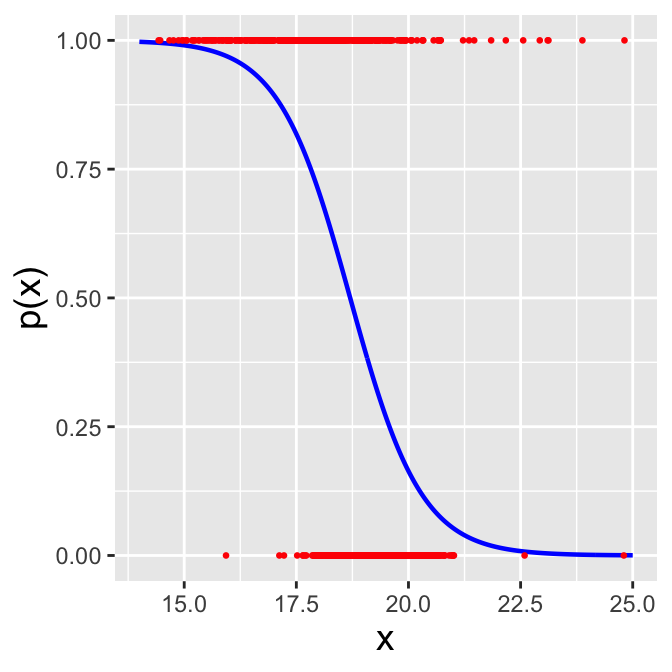
How do we learn a logistic regression model? In simple linear regression, we determine values for \(\hat{\beta}_0\) and \(\hat{\beta}_1\) by formulae, derived by minimizing the sum of squared errors (SSE). For logistic regression, such simple formulae do not exist, and so we estimate \(\beta_0\) and \(\beta_1\) via numerical optimization of the likelihood function \[ \mathcal{L}(\beta_0,\beta_1 \vert \mathbf{y}) = \prod_{i=1}^n p_{Y}(y_i \vert \beta_0,\beta_1) = \prod_{i=1}^n p^{y_i}(1-p)^{1-y_i} = p^{\sum_{i=1}^n y_i} (1-p)^{n-\sum_{i=1}^n y_i} \,. \] Specifically, we would take the first partial derivatives of \(\mathcal{L}(\beta_0,\beta_1 \vert \mathbf{y})\) with respect to \(\beta_0\) and \(\beta_1\), respectively, set them both to zero (thus allowing us to equate the derivative expressions), and determine the values \(\hat{\beta}_0\) and \(\hat{\beta}_1\) that jointly satisfy the equated derivatives. These are the values at which the bivariate likelihood surface achieves its maximum value. Note that because numerical optimization is an iterative process, logistic regression models are learned more slowly than simple linear regression models, although one does not notice that slowness in typical analysis situations.
Let’s step back for a moment. Why would we want to learn a logistic regression model in the first place? After all, it is a relatively inflexible model that might lack the ability to mimic the true behavior of \(p(x)\). The reason is that because we specify the mathematical form of the model, we can after the fact examine the estimated coefficients and perform inference: we can examine how the response is affected by changes in the predictor variables’ values. This can be important in, e.g., scientific contexts, where explaining how a model works can be as important, if not more important, than its ability to generate accurate and precise predictions. (This is in constrast to commonly used machine learning models, whose mathematical forms cannot be specified a priori and are thus less interpretable after they are learned.)
In simple linear regression, if we increase \(x\) by one unit, we can immediately infer how the response value changes: \[ \hat{Y}' = \hat{\beta}_0 + \hat{\beta}_1 (x + 1) = \hat{\beta}_0 + \hat{\beta}_1 x + \hat{\beta}_1 = \hat{Y} + \hat{\beta}_1 \,. \] For logistic regression, the situation is not as straightforward, because \(p\) changes non-linearly as a function of \(x\). So we fall back on the concept of the odds, \[ O(x) = \frac{p(x)}{1-p(x)} = \exp\left(\hat{\beta}_0+\hat{\beta}_1x\right) \,, \] or, often, its counterpart, the log-odds: \[ \log O(x) = \hat{\beta}_0+\hat{\beta}_1x \,. \] If, e.g., \(O(x) = 4\), then that means that, given \(x\), we are four times more likely to sample a value of 1 than a value of 0. How does the odds change if we add one unit to \(x\)? \[\begin{align*} O(x+1) &= \exp\left(\hat{\beta}_0+\hat{\beta}_1(x+1)\right)\\ &= \exp\left(\hat{\beta}_0 + \hat{\beta}_1x\right) \times \exp\left(\hat{\beta}_1\right) = O(x) \exp\left(\hat{\beta}_1\right) \,. \end{align*}\] The odds change by a factor of \(\exp\left(\hat{\beta}_1\right)\), which can be greater than or less than one, depending on the sign of \(\hat{\beta}_1\). In terms of the log-odds, this change is given by \[ \log O(x+1) = \log \left[ O(x) \exp\left(\hat{\beta}_1\right) \right] = \log O(x) + \hat{\beta}_1 \,. \]
It is important to note that when we perform logistic regression, we are simply estimating \(p(x)\), which is the probability that we would sample a datum with value 1, given \(x\). How we choose to map \(p(x)\) to either 0 or 1, i.e., how we determine whether or not we are predicting that a datum belongs to “Class 0” or “Class 1,” is not actually part of the logistic regression framework. Classification is a broad topic within statistical learning whose details are beyond the scope of this book. We direct the interested reader to, e.g., James et al. (2021).
3.10.1 Examples
3.10.1.1 Logistic Regression in R
When observed with a telescope, a star is a point-like object, as opposed to a galaxy, which has some angular extent. Telling stars and galaxies apart visually is thus, in relative terms, easy. However, if the galaxy has an inordinately bright core because the supermassive black hole at its center is ingesting matter at a high rate, that core can outshine the rest of the galaxy so much that the galaxy appears to be point-like. Such galaxies with bright cores are dubbed “quasars,” or “quasi-stellar objects,” and they are much harder to tell apart from stars.
Let’s say we are given a dataset showing the difference in magnitude (a logarithmic measure of brightness) at two wavelengths, for 500 stars and 500 quasars. The response variable is a factor variable with two levels, which we will call “Class 0” (here,
QSO) and “Class 1” (STAR). (The mapping of qualitative factors to quantitative levels is by default alphabetical; asSTARcomes afterQSO,STARgets mapped to Class 1. One can always override this default behavior.)
We learn a simple logistic regression model using the
Rfunctionglm(), rather thanlm(), and we specifyfamily = binomial, which means “do logistic regression.” (We can add additional arguments to, e.g., change the link function.)
Code
glm.out <- glm(class ~ r, data = df, family = binomial)
print("Deviance Residuals")[1] "Deviance Residuals"Code
summary(residuals(glm.out)) Min. 1st Qu. Median Mean 3rd Qu. Max.
-2.646515 -0.894956 0.033093 0.007907 0.843635 3.916292 Code
summary(glm.out)
Call:
glm(formula = class ~ r, family = binomial, data = df)
Coefficients:
Estimate Std. Error z value Pr(>|z|)
(Intercept) 23.44801 1.65428 14.17 <2e-16 ***
r -1.25386 0.08817 -14.22 <2e-16 ***
---
Signif. codes: 0 '***' 0.001 '**' 0.01 '*' 0.05 '.' 0.1 ' ' 1
(Dispersion parameter for binomial family taken to be 1)
Null deviance: 1386.3 on 999 degrees of freedom
Residual deviance: 1040.9 on 998 degrees of freedom
AIC: 1044.9
Number of Fisher Scoring iterations: 5The
summary()of a learned logistic regression model is similar to that for a linear regression model.
A “deviance residual” is defined as \[ d_i = \mbox{sign}(p_i - \hat{p}_i) \sqrt{-2[p_i \log \hat{p}_i + (1-p_i)\log(1-\hat{p}_i)]} \,, \] where \[ \hat{p}_i = \frac{\exp(\hat{\beta}_0+\hat{\beta}_1 x_i)}{1 + \exp(\hat{\beta}_0+\hat{\beta}_1 x_i)} \,. \] The sum of the squared deviance residuals is equal to \(-2 \log \mathcal{L}_{\rm max}\), where \(\mathcal{L}_{\rm max}\) is the maximum value of the joint likelihood of \(\hat{\beta}_0\) and \(\hat{\beta}_1\), given \(\mathbf{x}\). Here, we observe that the deviance residuals are seemingly well-balanced around zero.
The coefficients can be translated to \(y\)-coordinate values as follows: the intercept is \(e^{23.448}/(1+e^{23.448}) \rightarrow 1\) (this is the probability that an object whose value of
ris equal to zero is aSTAR), while the odds ratio is \(O_{new}/O_{old} = e^{-1.254}\) (so that every timerincreases by one unit, the probability that a sampled datum is a star is 0.285 times what it had been before: the higher the value ofr, the less and less likely that a sampled datum is actually a star, and the more and more likely that it is a quasar…at least, according to the logistic regression model.
The numbers in the other three columns of the coefficients section are estimated numerically using the behavior of the likelihood function (specifically, the rates at which it curves downward away from the maximum). Some details about how the numbers are calculated are given in an example in Section 6.3. It suffices to say here that if we assume that \(\hat{\beta}_0\) and \(\hat{\beta}_1\) are both normally distributed random variables, we reject the null hypothesis that the intercept is 0 (or equivalently that \(p = 1/2\) for all \(x\)), and that \(\beta_1 = 0\).
The null deviance is \(-2 \log \mathcal{L}_{max,o}\), where \(\mathcal{L}_{max,o}\) is the maximum likelihood when \(\beta_1\) is set to zero. The residual deviance is \(-2 \log \mathcal{L}_{\rm max}\). The difference between these values (here, 1386.3-1040.9 = 345.4), under the null hypothesis that \(\beta_1 = 0\), is assumed to be sampled from a chi-square distribution for 999-998 = 1 degree of freedom. (This is the large-sample approximation that lies at the heart of Wilks’ theorem, which we will officially introduce in the context of the likelihood ratio test in Section 4.7.) The \(p\)-value is thus
1 - pchisq(345.4, 1)or effectively zero: we emphatically reject the null hypothesis that \(\beta_1 = 0\). While this hypothesis test clearly indicates that \(\beta_1\) is not equal to zero, how can we know whether the model itself fits to the data well in an absolute sense? This is a model’s “goodness of fit,” a concept we introduced in Section 3.9.2. There is no unique answer to this question in the context of logistic regression. Here we will show two ways by which to build intuition about the quality of fit without going into underlying detail. The first is an empirical logit plot; see Figure 3.20. This plot shows the estimated log-odds for binned data as a function of the predictor variable, with the fitted model overlaid. Here, we see that the data largely follow the fitted model, indicating that the model is a relatively good representation of the data-generating process.
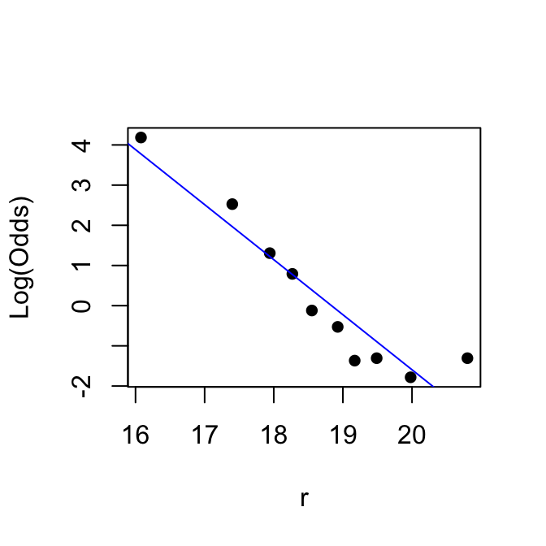
A second way by which we can build intuition about the quality of fit of the model is to utilize the Hosmer-Lemeshow test, in which the data are binned (like they are in the construction of an empirical logit plot) and a chi-square goodness-of-test test is carried out:
Code
suppressMessages(library(generalhoslem))
# use of predict() does not give correct output in R 4.5.2
glm.predictions <- predict.glm(glm.out, type = "response")
# note that "fitted(glm.out)" will give the same result
logitgof(df$class, glm.predictions) # ten bins by default
Hosmer and Lemeshow test (binary model)
data: df$class, glm.predictions
X-squared = 50.774, df = 8, p-value = 2.901e-08Here we see that if we group the data into ten bins and run the chi-square GoF test, the \(p\)-value is 2.9 \(\times\) 10\(^{-8}\): we reject the null hypothesis that the logistic regression model is a good representation of the data-generating process. (Although the empirical logit plot indicates that it is not a bad one. Observing an ambiguous results like this is common in statistical practice!)
The last metric we will discuss is the AIC, or Akaike Information Criterion. The AIC is \(-2\) times the model likelihood (or here, the deviance) plus two times the number of variables (here, 2, as the intercept is counted as a variable). Adding the number of variables acts to penalize those models with more variables: the improvement in the maximum likelihood has to be sufficient to justify additional model complexity. Discussion of the mathematical details of AIC is beyond the scope of this book; it suffices to say that if we compute it when learning a suite of different models, we would select the model with the smallest value (while still keeping in mind that the “best” model may not represent the data-generating process well in an absolute sense).
We will wrap up by showing how one would start moving from estimating the Class 1 probabilities for each datum towards predicting classes for each datum. Logistic regression is not in and of itself a “classifier”: it simply outputs probabilities. Naively, we would classify an object with an estimated probability below 0.5 as being an object of Class 0 and one with an estimated probability above 0.5 as being an object of Class 1, but that only works in general if the classes are balanced, i.e., if there are the same number of data of Class 1 as of Class 0. (Here, “works” means “acts to minimize misclassification rates across both classes at the same time.”) If there is class imbalance, then we will almost certainly have to change 0.5 to some other value for optimal classification. In the current example, the classes are balanced, and so putting the “dividing line” at 0.5, as we do in Figure 3.21, is an principled choice.
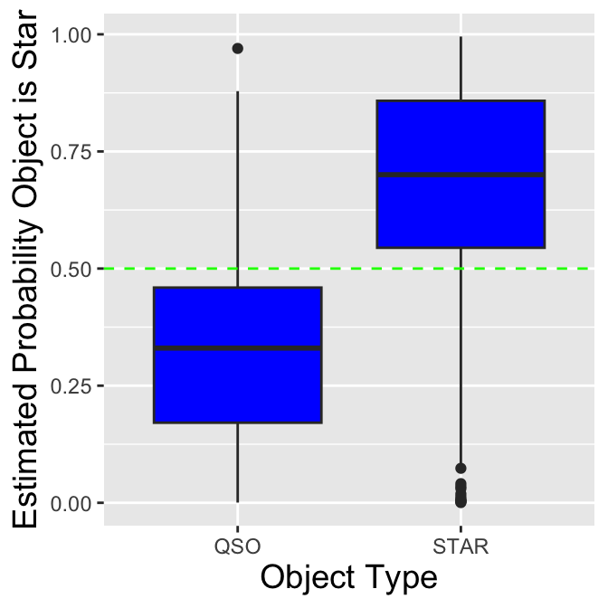
3.10.1.2 Beta Regression in R
The
Rpackagebetaregincludes a dataset calledGasolineYield, which records the “[o]perational data of the proportion of crude oil converted to gasoline after distillation and fractionation.” The key word here is “proportion”: the response variableyieldhas continuous values that are bounded to be between 0 and 1. Here, we will regressyieldupon one of the possible predictor variables,pressure. (See Figure 3.22. This figure indicates that we could have fit to these data with a linear regression model with very little, if any, change in the qualitative details of the results, but since we know that the response variable is a proportion, beta regression is technically the superior option.)
Code
library(betareg)
data("GasolineYield", package = "betareg")
betareg.out <- betareg(yield ~ pressure, data = GasolineYield)
summary(betareg.out)
Call:
betareg(formula = yield ~ pressure, data = GasolineYield)
Quantile residuals:
Min 1Q Median 3Q Max
-1.9374 -0.7088 0.2077 0.7557 1.6059
Coefficients (mean model with logit link):
Estimate Std. Error z value Pr(>|z|)
(Intercept) -1.82595 0.22174 -8.234 <2e-16 ***
pressure 0.09480 0.04209 2.252 0.0243 *
Phi coefficients (precision model with identity link):
Estimate Std. Error z value Pr(>|z|)
(phi) 14.616 3.607 4.051 5.09e-05 ***
---
Signif. codes: 0 '***' 0.001 '**' 0.01 '*' 0.05 '.' 0.1 ' ' 1
Type of estimator: ML (maximum likelihood)
Log-likelihood: 30.71 on 3 Df
Pseudo R-squared: 0.1303
Number of iterations: 15 (BFGS) + 2 (Fisher scoring) Note that by default, the link function is the logit function, meaning that the only difference between this implementation of regression and logistic regression is the assumption of the distribution of the response (beta instead of Bernoulli, continuously valued instead of discretely valued). See Figure 3.22. We see that the summary output is qualitatively similar to what we observe for logistic regression, with the exception of a new field dubbed “Phi coefficients.” In the parameterization of the beta distribution used in the
betaregpackage, the variance of the response variable is \(\mu(1-\mu)/(1+\phi)\), with \(\phi\) being a “precision parameter”: the lower the value of \(\phi\), the more dispersed the data are around the regression line. All this being said, the only conclusion we can make about \(\phi\) given the output is that, according to the \(p\)-value, we can safely reject the null hypothesis that its value is zero. For more information about beta regression, we refer the interested reader to thebetaregdocumentation.
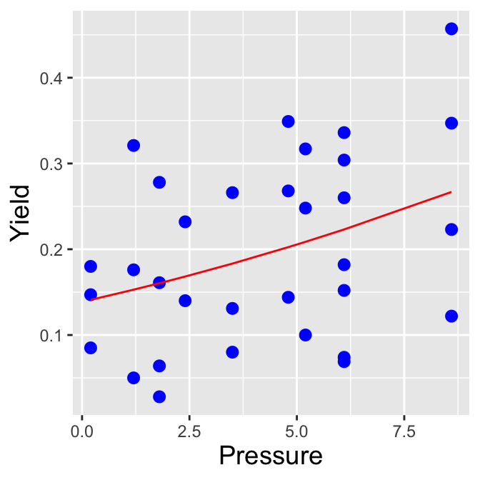
yield upon pressure, given the GasolineYield dataset of the betareg package. The \(p\)-value associated with the pressure coefficient is 0.024; we reject the null hypothesis that yield is not associated with pressure. The coefficient is positive: as pressure increases, the predicted yield also increases.
3.11 Naive Bayes Regression
What to take away from this section:
Given a set of data tuples \(\{(x_{1,1},\ldots,x_{1,m},Y_1),\ldots,(x_{n,1},\ldots,x_{n,m},Y_n)\}\), where the \(x_{i,j}\)’s are either continuously or discretely valued, and where the \(Y_i\)’s can take on \(K\) discretely values, we can attempt to determine an association between \(\mathbf{x}\) and \(\mathbf{Y}\) by learning a Naive Bayes regression model.
The Naive Bayes model combines Bayes’ rule with an assumption that the data \(x_{\cdot,i}\) and \(x_{\cdot,j}\) are independently generated for all \(i \neq j\) to generate, for a given datum, predicted probabilities that it is associated with each of the \(K\) classes.
If we compare a suite of models, it will be the case that the Naive Bayes model will rarely, if ever, produce the best predictions…but it is fast, which makes it appropriate for time-sensitive tasks (like determining whether or not an email is spam).
The Naive Bayes model is the basis for perhaps the simplest probabilitic classifier, one that is used to, e.g., detect spam emails. The meanings of the words “Naive” and “Bayes” will become more clear below. Note that one would often see this model referred to as the “Naive Bayes classifier.” However, as noted in the last section, there are actually two steps in classification, the first being the estimation of probabilities that a given datum belongs to each class, and the second being the mapping of those probabilities to class predictions. In the previous section and here, we are only focusing on the generation of predicted probabilities…hence the title of this section.
(One might argue that the Naive Bayes model is a machine-learning model. We would argue that it actually is not: the final form of a machine-learning model is unknown before we start the modeling process [e.g., the number of branches that will appear in a classification tree model is unknown and is learned by the machine], whereas with Naive Bayes the mathematical form of the model is fully specified a priori and all we have to do is estimate the unknown probabilities, which are the “coefficients” of the Naive Bayes model.)
Let’s assume that we are in a similar setting as the one for logistic regression, but instead of having a response that is a two-level factor variable (i.e., one the represents two classes), the number of levels is \(K \geq 2\). (So instead of just, e.g., “chocolate” and “vanilla” as our response variable values, we can add “strawberry” and other ice cream flavors too!) The ultimate goal of the model is to assign conditional probabilities for each response class, given a datum \(\mathbf{x}\): \(p(C_k \vert \mathbf{x})\), where \(C_k\) denotes “class \(k\).” How do we derive this quantity?
The first step is to apply Bayes’ rule (hence the “Bayes” in “Naive Bayes”): \[ p(C_k \vert \mathbf{x}) = \frac{p(C_k) p(\mathbf{x} \vert C_k)}{p(\mathbf{x})} \,. \] The next step is to expand \(p(\mathbf{x} \vert C_k)\): \[\begin{align*} p(\mathbf{x} \vert C_k) &= p(x_1 \cup \ldots \cup x_p \vert C_k)\\ &= p(x_1 \vert x_2 \cup \ldots \cup x_p \cup C_k) p(x_2 \vert x_3 \cup \ldots \cup x_p \cup C_k) \cdots p(x_p \vert C_k) \,. \end{align*}\] (This is the multiplicative law of probability in action, as applied to a conditional probability. See Section 1.4.) The expressions above are difficult to evaluate in practice, given all the conditions that must be jointly applied. This is where the “naive” aspect of the model comes into play. We simplify the expression by assuming (probably incorrectly!) that the predictor variables are all mutually independent, so that \[\begin{align*} &p(x_1 \vert x_2 \cup \ldots \cup x_p \cup C_k) p(x_2 \vert x_3 \cup \ldots \cup x_p \cup C_k) \cdots p(x_p \vert C_k)\\ \rightarrow ~~ &p(x_1 \vert C_k) \cdots p(x_p \vert C_k) \end{align*}\] and thus \[ p(C_k \vert \mathbf{x}) = \frac{p(C_k) \prod_{i=1}^p p(x_i \vert C_k)}{p(\mathbf{x})} \,. \] OK…where do we go from here?
We need to make further assumptions!
- We need to assign “prior probabilities” \(p(C_k)\) to each class. Common choices are \(1/K\) (we view each class as equally probable before we gather data) and \(n_k/n\) (the number of observed data of class \(k\) divided by the overall sample size).
- We also need to assume probability mass and density functions \(p(x_j \vert C_k)\) for the \(j^{\rm th}\) predictor variable (a pmf if \(x_j\) is discrete and a pdf if \(x_j\) is continuous). It is convention to use binomial or multinomial pmfs, depending on the number of levels, with the observed proportions in each level informing the category probability estimate, and normal pdfs, with \(\hat{\mu}_j = \bar{x}_j\) and \(\hat{\sigma^2}_j = s_j^2\) (the sample variance).
Ultimately, this model depends on a number of (probably unjustified!) assumptions. Why would we ever use it? Because the assumption of mutual independence makes model evaluation fast. Naive Bayes is rarely the model underlying the best classifier for any given problem, but when speed is needed (such as in the identification of spam email), one’s choices are limited. (As as general rule: if a model is simple to implement, one should implement it, even if the a priori expectation is that another model will ultimately generate better results. Because one never knows…)
3.11.1 Examples
3.11.1.1 Naive Bayes Regression With Categorical Predictors
Let’s assume that we have collected the following data:
| \(x_1\) | \(x_2\) | \(Y\) |
| Yes | Chocolate | True |
| Yes | Chocolate | False |
| No | Vanilla | True |
| No | Chocolate | True |
| Yes | Vanilla | False |
| No | Chocolate | False |
| No | Vanilla | False |
We learn a Naive Bayes model given these data, in which we assume “False” is Class 0 and “True” is Class 1. If we have a new datum \(\mathbf{x}\) = (“Yes”,“Chocolate”), what is the probability that the response is “True”?
We seek the quantity \[ p(C_1 \vert \mathbf{x}) = \frac{p(C_1) p(\mathbf{x} \vert C_1)}{p(\mathbf{x})} = \frac{p(C_1) p(x_1 \vert C_1) p(x_2 \vert C_1)}{p(x_1 \cup x_2)} \,. \] When we examine the data, we see that \(p(C_1) = 3/7\), as there are three data out of seven with the value \(Y\) = “True.” Now, given \(C_1\), at what rate do we observe “Yes”? (One time out of three…so \(p(x_1 \vert C_1) = 1/3\).) What about “Chocolate”? (Two times out of three…so \(p(x_2 \vert C_1) = 2/3\).) The numerator is thus \(3/7 \times 1/3 \times 2/3 = 2/21\). The value of the denominator, \(p(x_1 \cup x_2)\), is determined utilizing the Law of Total Probability: \[\begin{align*} p(x_1 \cup x_2) &= p(x_1 \vert C_1) p(x_2 \vert C_1) p(C_1) + p(x_1 \vert C_2) p(x_2 \vert C_2) p(C_2) \\ &= 2/21 + 2/4 \times 2/4 \times 4/7 = 2/21 + 4/28 = 2/21 + 3/21 = 5/21 \,. \end{align*}\] And so now we know that \[ p(\mbox{True} \vert \mbox{Yes,Chocolate}) = \frac{2/21}{5/21} = \frac{2}{5} \,. \]
3.11.1.2 Naive Bayes Regression With Continuous Predictors
Let’s assume we have the following data regarding credit-card defaults, where \(x\) represents the credit-card balance and \(Y\) is a categorical variable indicating whether a default has occurred:
| \(x\) | 1487.00 | 324.74 | 988.21 | 836.30 | 2205.80 | 927.89 | 712.28 | 706.16 | 1774.69 |
|---|---|---|---|---|---|---|---|---|---|
| \(Y\) | Yes | No | No | No | Yes | No | No | No | Yes |
Let’s now suppose someone came along with a credit balance of $1,200. According to the Naive Bayes model, given this balance, what is the probability of a credit default?
The Naive Bayes model in this particular case is \[ p(Y \vert x) = \frac{p(x \vert Y) p(Y)}{p(x \vert Y) p(Y) + p(x \vert N) p(N)} \,, \] where we can observe immediately that \(p(Y) = 3/9 = 1/3\) and \(p(N) = 6/9 = 2/3\). To compute, e.g., \(p(x \vert Y)\), we first compute the sample mean and sample standard deviation for the observed data for which \(Y\) is “Yes”:
Code
x <- c(1487.00, 2205.80, 1774.69)
round(mean(x), 2)[1] 1822.5Code
round(sd(x), 2)[1] 361.78The mean is $1,822.50 and the standard deviation is $361.78, so the probability density associated with observing $1,200 is
Code
dnorm(1200, mean = mean(x), sd = sd(x))[1] 0.0002509367The density is 2.51 \(\times\) 10\(^{-4}\). As far as for those data for which \(Y\) is “No”:
Code
x <- c(324.74, 988.21, 836.30, 927.89, 712.28, 706.16)
dnorm(1200, mean = mean(x), sd = sd(x))[1] 0.0002748351The density is 2.75 \(\times\) 10\(^{-4}\). Thus \[ p(Y \vert x) = \frac{2.51 \cdot 0.333}{2.51 \cdot 0.333 + 2.75 \cdot 0.667} = \frac{0.834}{0.834 + 1.834} = 0.313 \,. \] We would predict that there is roughly a 1 in 3 chance that a person with a credit balance of $1,200 will default on their debt.
3.11.1.3 Naive Bayes in R
In the previous section, we applied logistic regression to the problem of differentiating between stars and quasars. Here, we repeat the exercise using a Naive Bayes model, as coded in
R’se1071package.
Code
library(e1071)
nb.out <- naiveBayes(class ~ r, data = df)
nb.out
Naive Bayes Classifier for Discrete Predictors
Call:
naiveBayes.default(x = X, y = Y, laplace = laplace)
A-priori probabilities:
Y
QSO STAR
0.5 0.5
Conditional probabilities:
r
Y [,1] [,2]
QSO 19.35770 0.8282726
STAR 17.96389 1.3651572The summary of the model shows that the classes are balanced (as the
A-priori probabilitiesare 0.5 for each class). It then shows the estimated distributions ofrvalues for quasars (a normal with estimated mean 19.358 and standard deviation 0.828) and stars (mean 17.964 and standard deviation 1.365). See Figure 3.23.
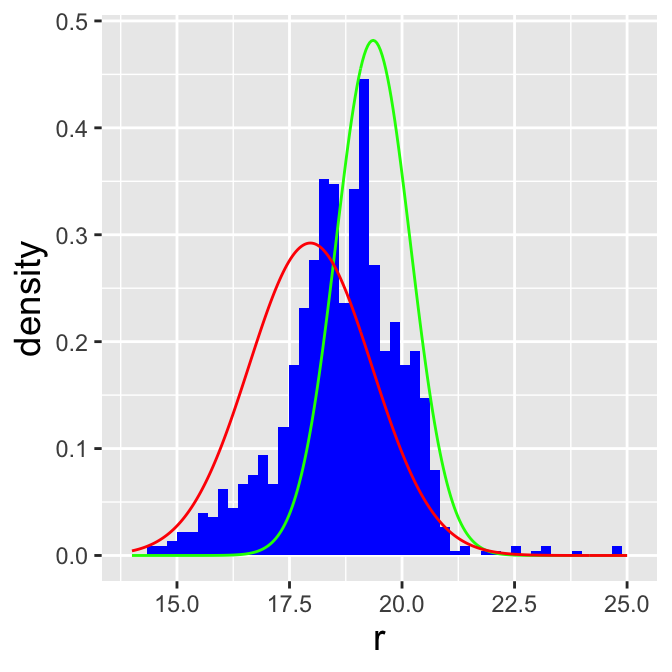
STAR; otherwise, it would be QUASAR.
To generate model predictions, we use a function call similar to that utilized in logistic regression:
Code
nb.predictions <- predict(nb.out, newdata = df, type = "raw")[, 2]The
predict()function outputs a matrix showing the probabilities associated with each response class. Since here we are interested in the probability of sampling a datum of value 1 (a “Class 1” datum), we extract the second column of the output matrix. In Figure 3.24, we show the predicted probabilities as a function of the object type; the reader should compare this figure with Figure 3.21.
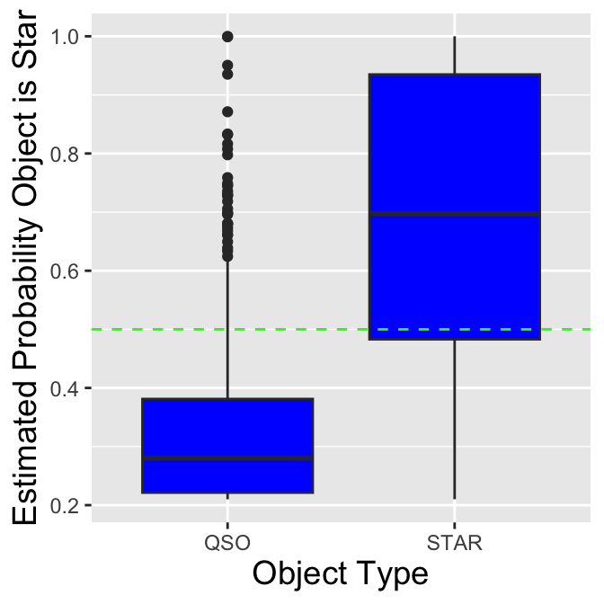
3.12 Exercises
Let \(X_1,...,X_n\) be \(n\) data drawn from a \(\mathcal{N}(2,4)\) distribution. Write down the probability that exactly \(m\) of the \(n\) data have values \(> 2\).
You are a habitual buyer of raffle tickets. Each ticket costs $1, and each time you buy a ticket, you have a 40% chance of having a winning ticket, for which you will receive $3. You decide to keep buying tickets until you win for the first time. Let the random variable \(F\) denote the total number of losing tickets that you buy, and let \(W\) denote the total amount of money you win (or lose!). (a) \(F\) is sampled from what distribution that has what parameter value(s)? (b) What is the probability that you will end up making money, i.e., what is \(P(W > 0)\)? (c) Let’s say instead of buying until you win, you decide you will buy exactly two tickets, then stop. What is the probability of buying a winning ticket exactly once, given that you buy at least one winning ticket?
Suppose 50% of licensed drivers in a state are insured. If three licensed drivers are selected at random, what is the expected number of insured drivers given that the number of insured drivers is odd? (Assume the state’s population is effectively infinite, so that the probability of selecting an insured driver stays constant from trial to trial.)
In an experiment, you take shots at a target until you hit that target twice. On any given shot, you have a 50% change of hitting the target. (a) What is the probability that you hit the target for the second time on your fourth shot overall? (b) You run your experiment twice. What is the probability of needing to take two shots one of the experiments to hit the target twice, and three shots during the other one to hit the target twice? Assume the results are independent (and of course identically distributed). (c) Let’s suppose you do not actually know the success probability \(p\), and you wish to determine a one-sided 90% upper bound on \(p\). As you are dealing with a discrete distribution, you need to build a
uniroot()-style interval estimator. In your code, what value would you adopt for \(q\)?You collect \(n=4\) iid samples from the following distribution: \[\begin{eqnarray*} f_X(x) = \left\{ \begin{array}{cc} 3x^2 & 0 \leq x \leq 1 \\ 0 & \mbox{otherwise} \end{array} \right. \,. \end{eqnarray*}\] (a) Write down the sampling distribution for the minimum observed value, \(X_{(1)}\). (b) The sampling distribution for the maximum observed value is \(g_{(4)}(x) = 12x^{11}\). What is \(E[X_{(4)}]\)?
You are to sample \(n = 3\) data from the following distribution: \[\begin{eqnarray*} f_X(x) = \left\{ \begin{array}{cc} x & 0 \leq x \leq \sqrt{2} \\ 0 & \mbox{otherwise} \end{array} \right. \,. \end{eqnarray*}\] (a) Specify the distribution from which \(X_{(3)}\) is to be sampled. (b) Specify the variance of the distribution you derived in part (a).
If we sample 3 iid data from a Uniform(0,1) distribution, what is the probability that the median value lies between 1/3 and 2/3?
You sample three data from a Exp(1) distribution. What is the expected value for the median datum, i.e., the second ordered datum?
Let the cdf for a given distribution be \(F_X(x) = x^3\) for \(x \in [0,1]\), and let’s assume that you have sampled \(n\) iid data from this distribution. (a) What is the pdf within the domain \(x \in [0,1]\)? (b) What is the pdf for \(X_{(n)}\) within the domain \(x \in [0,1]\)? (c) What is the cdf for \(X_{(n)}\) within the domain \(x \in [0,1]\)? (d) What is \(E[X_{(n)}]\)?
You sample \(n = 2\) iid random variables from a distribution with pdf \[\begin{eqnarray*} f_X(x) = \frac12 x \,, \end{eqnarray*}\] for \(x \in [0,2]\). (a) What is \(F_X(x)\) within the domain \([0,2]\)? (b) What is \(f_{(2)}(x)\)? (c) What is \(E[X_{(2)}]\)? (d) Are \(X_{(1)}\) and \(X_{(2)}\) independent random variables?
Find the asymptotic distribution of the MLE of \(n\) i.i.d. samples from the Bernoulli distribution with parameter \(p\). (\(p_X(x) = p^x(1-p)^{1-x}\) for \(x = \{0,1\}\) and for \(p \in (0,1)\).)
You are given \(n\) iid data that are sampled from the following pmf: \[\begin{equation*} p_X(x) = (1-p)^{x-1}p \,, \end{equation*}\] with \(0 < p < 1\) and \(x = \{1,2,3,\ldots\}\). For this distribution, \(E[X] = 1/p\) and \(V[X] = (1-p)/p^2\). (a) What is the maximum likelihood estimator for \(1/p\)? Note: you are not required to confirm that the derivative of the score function is negative at \(1/p = \widehat{1/p}_{MLE}\). Also note: a property of MLEs may help you here. (b) Write down \(V[\widehat{1/p}_{MLE}]\), i.e., the variance of the MLE for \(1/p\).
The probability mass function for the logarithmic distribution is \[\begin{eqnarray*} p_X(x) = -\frac{1}{\log(1-p)} \frac{p^x}{x} \,, \end{eqnarray*}\] where \(x \in \{1,2,3,...\}\). You sample \(n\) iid data from this distribution. Write down a sufficient statistic for \(p\).
You are given the following probability density function: \[\begin{equation*} f_X(x) = a b x^{a-1} (1-x^a)^{b-1} \,, \end{equation*}\] defined over the domain \(0 < x < 1\). \(a\) and \(b\) are the parameters of the distribution, and both are positive and real-valued. Let \(\mathbf{X} = \{X_1,\cdots,X_n\}\) be \(n\) i.i.d.~samples from this distribution. (a) If you are able to define joint sufficient statistics for \(a\) and \(b\), write them down; otherwise, explain why you cannot. (b) Now, let \(a=1\). What is a sufficient statistic for \(b\)?
You sample \(n\) iid data from the following distribution: \[\begin{eqnarray*} f_X(x) = \frac{x}{\beta^2} e^{-x/\beta} \,, \end{eqnarray*}\] where \(x \geq 0\) and \(\beta > 0\), and where \(E[X] = 2\beta\) and \(V[X] = 2\beta^2\). (a) Write down a sufficient statistic for \(\beta\) that arises directly from likelihood factorization. (b) Using your answer from part (a), determine the MVUE for \(\beta\). (c) Compute the variance of the MVUE for \(\beta\). (d) Compute the Cramer-Rao Lower Bound for the MVUE for \(\beta\).
Let \(X_1,\ldots, X_n\) be \(n\) iid samples from the following distribution, where \(\theta > 0\), \[\begin{eqnarray*} f_X(x) = \frac{1}{\theta} \exp\left(x-\frac{1}{\theta} e^x\right) \,. \end{eqnarray*}\] Note that \(e^X \sim \text{Exp}(\theta)\) (= Gamma(1,\(\theta\))) and \(Y = \sum_{i=1}^n e^{X_i} \sim \text{Gamma}(n,\theta)\) (with \(E[Y] = n\theta\) and \(V[Y] = n\theta^2\)). (a) Find a sufficient statistic for \(\theta\) using the factorization criterion. (b) Find the MVUE for \(\theta\). (c) Find the MVUE for \(\theta^2\).
Let’s assume that we have sampled \(n\) iid data, \(\{X_1,\ldots,X_n\}\), from a Maxwell-Boltzmann distribution with pdf \[\begin{eqnarray*} f_X(x) = \sqrt{\frac{2}{\pi}} \frac{x^2}{a^3} e^{-x^2/(2a^2)} \,, \end{eqnarray*}\] where \(x > 0\) and \(a > 0\). The expected value and variance for an MB-distributed random variable are \[\begin{eqnarray*} E[X] = 2 a \sqrt{\frac{2}{\pi}} ~~~ \mbox{and} ~~~ V[X] = a^2 \frac{(3 \pi - 8)}{\pi} \end{eqnarray*}\] respectively. (a) Identify a sufficient statistic for \(a^2\). (b) Derive \(E[X^2]\). (Hint: there is no need for integration here.) (c) Determine the MVUE for \(a^2\). (d) Can we use an invariance principle to state that the MVUE for \(a\) is \((\widehat{a^2}_{MVUE})^{1/2}\)?
You sample a single datum \(X\) from the following pdf: \[\begin{eqnarray*} f_X(x) = \frac{\theta}{2^\theta} x^{\theta-1} \,, \end{eqnarray*}\] where \(x \in [0,2]\) and \(\theta > 0\). Construct the most powerful level-\(\alpha\) test of \(H_o: \theta = \theta_o\) versus \(H_a: \theta = \theta_a\), where \(\theta_a > \theta_o\). Is your hypothesis test a uniformly most powerful hypothesis test?
A common distribution used for the lengths of life of physical systems is the Weibull. Let \(\{X_1,\ldots,X_n\}\) be \(n\) iid data sampled from this distribution: \[\begin{eqnarray*} f_X(x) = \frac{\theta}{\beta} \hspace{1mm} x^{\theta-1} \hspace{1mm} \exp\left(-\frac{x^\theta}{\beta}\right) \hspace{5mm} x,\beta, \theta >0 \end{eqnarray*}\] Assume that \(\theta\) is known and that \(\beta\) is freely varying, and that we are interested in finding the most powerful test of \(H_o: \beta = \beta_o\) versus \(H_a: \beta = \beta_a\), where \(\beta_a > \beta_o\), at the level \(\alpha\).
- What is a sufficient statistic for \(\beta\)? (Do not include a minus sign.)
- Working with the Weibull directly is difficult; however, it turns out that \(X^\theta \sim \text{Exp}(\beta)\). What is the distribution of the sufficient statistic found in part (a), and what are the parameter values? (This will require examining the gamma distribution and its properties.)
- Write, in
Rcode, the rejection-region boundary for the test.
- Let \(\{X_1,\ldots,X_n\}\) be \(n\) iid data sampled from the following distribution: \[\begin{eqnarray*} f_{X}(x) = \left\{ \begin {array}{ll} \frac{1}{\theta}\exp\left(-\frac{1}{\theta}(x-b)\right) & x > b, \theta > 0 \\ 0&\mbox{otherwise} \end{array} \right. \,. \end{eqnarray*}\]
- Derive the moment-generating function for \(X\).
- Now derive the mgf for \(\sum_{i=1}^n X_i\).
- The answer for (b) contains the term \(e^{nbt}\). Going back to our original discussion of the method of moment-generating functions, this means that we can write that \(\sum_{i=1}^n X_i = nb + \sum_{i=1}^n U_i\). What distribution is \(\sum_{i=1}^n U_i\) sampled from? (Hint: look at the the rest of the mgf for \(\sum_{i=1}^n X_i\) and, if necessary, refer back to the previous problem.)
- Write, in
Rcode, the rejection-region boundary for the \(\alpha\)-level test of \(H_o : \theta = \theta_o\) versus \(H_a : \theta < \theta_o\). Is this a uniformly most powerful test of these hypotheses?
In an experiment, you sample \(n\) data from the distribution: \[\begin{eqnarray*} f_X(x) = \theta e^{-\theta x} \,, \end{eqnarray*}\] where \(x \geq 0\), \(\theta > 0\), and \(E[X] = 1/\theta\). You wish to test the null hypothesis \(H_o : \theta_o = 4\) versus \(H_a : \theta_a = 2\). (a) Define the most powerful hypothesis test. By “define,” we mean write down a rejection region of the form \(Y < y_{\rm RR}\) or \(Y > y_{\rm RR}\), where you plug in a specific statistic for \(Y\). (You cannot evaluate \(y_{\rm RR}\) given the information you have here…that can stay as is.) (b) The cdf of the sampling distribution for the appropriate statistic in part (a) is \(\gamma(n,\theta y)/(n-1)!\), where \(\gamma(\cdot,\cdot)\) is the lower incomplete gamma function. Given this information, and given what you would have to do to define the rejection region boundary, can you conclude that we are defining a uniformly most powerful test?
Let’s assume that we have sampled \(n\) iid data from a Binom(\(k,p\)) distribution, and that we wish to test \(H_o: p = p_o\) versus \(H_a: p > p_o\). For our statistic, we will use \(Y = \sum_{i=1}^n X_i\). (a) What is the sampling distribution for \(Y\)? Provide the name and the value(s) of the parameters. (b) You code elements of the test in
R. Assume you have the initialized variablesalpha,n,k,y.obs,p.o, andp.aat your disposal. Write out the (one-line!) function call you’d use to compute the rejection region boundary. (c) Now provide code of the \(p\)-value. Include a discreteness correction factor if it is needed.The negative inverse link function is \(-(Y \vert x)^{-1}\). Assume that we are in a simple setting (i.e., that there is one predictor variable), and write the regression line formula \(Y \vert x\) as a function of \(\beta_0\), \(\beta_1\), and \(x\).
You use
Rto learn a logistic regression model, and you observe the output shown below: (a) What is the sample size \(n\)? (Hint: take into account how many parameter values are being estimated to convert a number shown in the output to the sample size.) (b) What is the value of \(-2\log\mathcal{L}_{\rm max}\) for the model in which \(\beta_1\) is set to zero? (c) What is the value of \(O(x)\) for \(x = 0\)? You may leave your answer in the form \(e^a\) or \(\log(a)\) or \(\sqrt{a}\), etc., while being sure to fill in the value of the constant \(a\). (d) Do the odds increase as \(x\) increases, or do the odds decrease as \(x\) increases?
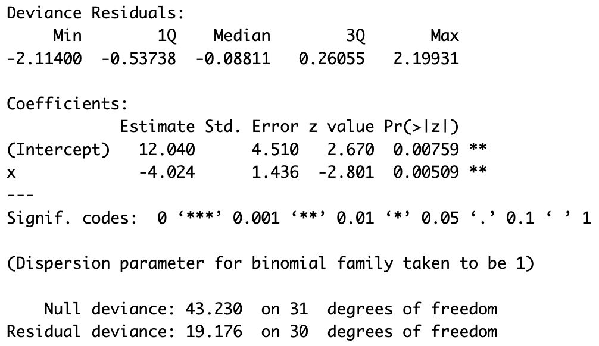
- Below is the observed output from
R’sglm()function when learning a logistic regression model. For these data, Class 0 isNo(not a student) and Class 1 isYes(is a student). (a) If the balance is $589, then the predicted probability that the datum belongs to theYesclass is 0.1. What is the odds ratio for $589 dollars? (b) What is the odds ratio if the balance is $689? (c) For the first datum, the observed response isNoand the predicted probability that the datum is of theYesclass is 0.07. Compute the deviance for this datum. (d) Whoops…the null deviance value got expunged from the output. Would this value be higher or lower than the observed residual deviance value?
Deviance Residuals:
Min 1Q Median 3Q Max
-1.1243 -0.5539 -0.4409 -0.3460 2.4901
Coefficients:
Estimate Std. Error z value Pr(>|z|)
(Intercept) -3.0616324 0.3936314 -7.778 7.37e-15 ***
Balance 0.0014684 0.0004124 3.561 0.00037 ***
---
Signif. codes: 0 ‘***’ 0.001 ‘**’ 0.01 ‘*’ 0.05 ‘.’ 0.1 ‘ ’ 1
Residual deviance: 221.47 on 308 degrees of freedom
AIC: 225.47 - Refer to the displayed data below. Here,
x1andx2are the two predictor variables, and \(Y\) is the response variable. Use these data to learn a Naive Bayes model and use that model to compute \(p(0 \vert \mbox{Yes},\mbox{False}) = p(0 \vert \mbox{Y},\mbox{F})\). Leave your answer as a fraction. Assume that \(p(C_k) = n_k/n\), and that you would estimate \(p(x \vert C_k)\) as the proportion of times you observe a particular datum value \(x\) (e.g., True) given \(C_k\).
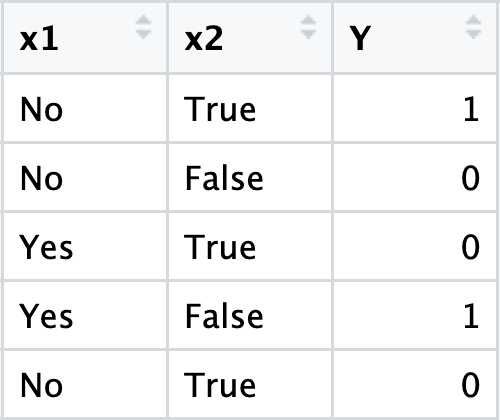
You are given the following pdf: \[\begin{eqnarray*} f_X(x) = \left\{ \begin{array}{cc} 2(1-x) & 0 \leq x \leq 1 \\ 0 & \mbox{otherwise} \end{array} \right. \,. \end{eqnarray*}\] An associated cost is \(C = 10X\). (a) Identify the “named” distribution for \(X\) and state its parameters. (b) Given your answer for (a), determine \(E[X]\) and \(E[X^2]\). (c) Now determine \(E[C]\) and \(V[C]\).
You are given the following cdf: \[\begin{eqnarray*} F_X(x) = \left\{ \begin{array}{cc} 0 & x < 0 \\ 6x^2 - 8x^3 + 3x^4 & 0 \leq x \leq 1 \\ 1 & x > 1 \end{array} \right. \,. \end{eqnarray*}\] (a) \(F_X(x)\) is the cdf for what “named” distribution? (b) What is the expected value of \(X\)?
You are given \(X \sim\) Beta(2,3). What is \(E[X^2]\)?
You sample 3 data from a Beta(3,1) distribution. (a) Write down the pdf for the median of the sampled data. (b) Compute the expected value for the median of the sampled data.
You are given the following distribution: \[\begin{eqnarray*} f_X(x) = c x (1-x) \,, \end{eqnarray*}\] where \(x \in [0,1]\) and \(c\) is a constant. (a) Identify this distribution by name and provide the value(s) of its parameter(s). (b) Determine the numerical value of the constant \(c\). (c) Is the distribution symmetric about its mean value or it is a skewed distribution? (d) Compute \(P(X \leq 1/4 \vert X \leq 1/2)\). Leave your answer as a fraction.
Twenty-one (21) students enter a hallway off of which are three rooms. A researcher expects each student to randomly choose a room to enter (and to stay in!). That researcher observes that 10 students choose Room A, 5 students choose Room B, and 6 students choose Room C, and she decides to use these data to perform a test of the null hypothesis \(p_1 = p_2 = p_3\) at the level \(\alpha = 0.1\). (a) Choose an appropriate hypothesis test and evaluate the test statistic. To be clear, your final answer should be a number. (b) What is the number of degrees of freedom associated with the test statistic? (c) The rejection region boundary value is 4.61. Do we reject the null hypothesis?
A political scientist has developed four pamphlets with different types of information about climate change – one focused on environmental impact, one on economic impact, one on socio-cultural impact, and one about the origins of climate change. She prints 100 of each and randomly gives them out, asks people to read them, and records their answer to the question: how much money should the government spend on counteracting climate change? The answer options are: [a] more than, [b] as much as, and [c] less than they currently do. She plans to do a chi-square test to check whether willingness to spend government funding is related to which pamphlet the respondent read. (Note that she does not segment the respondents into groups.) (a) What kind of chi-square test is conducted here (goodness-of-fit, independence, or homogeneity)? (b) The observed test statistic turns out to be \(w_{\rm obs} = 24.3\). How many terms did the researcher have to sum over to compute this statistic? (c) The test statistic follows a chi-square distribution with \(m\) degrees of freedom. What is the value of \(m\)? (d) Which of the following expressions corresponds to the \(p\)-value associated with the test carried out in part (a): (i) \(P(W \geq w_{\rm obs})\), (ii) \(P(W \leq w_{\rm obs})\), (iii) \(P(\frac{(n-1) W }{ \sigma^2} \geq w_{\rm obs})\), or (iv) \(P(\frac{(n-1) W}{\sigma^2} \leq w_{\rm obs})\)? (\(W\) is the random variable, chi-square-distributed for \(m\) degrees of freedom; \(n\) is the sample size; and \(\sigma^2\) is the population variance.)
You are recording the amount of time that elapses between when one person walks through a particular door until the next person walks through that same door. You have a weird stopwatch that changes from 0 to 1 after one minute, and from 1 to 2 after two minutes. That’s it. You take 100 measurements, and your data are given below. You wish to test the null hypothesis that each elapsed time is sampled from an exponential distribution with mean \(\beta\) = 1 minute. (a) Under this null hypothesis, the probability that someone ends up in the category “1-2 minutes” is \(\int_1^2 e^{-x} dx\). Explain why this is and calculate the probability. (b) Carry out an appropriate test to test the null hypothesis, provide either the rejection region or the \(p\)-value, and state your conclusion. Assume \(\alpha = 0.05\). (c) A friend of yours decides they will repeat the experiment you’ve done, including the statistical analysis, but he is in a hurry and decides that he will only take 10 measurements overall. Explain to your friend why his experimental “design” is flawed.
| 0-1 min | 1-2 min | >2 min |
| 52 | 23 | 25 |
You play a (long) game in which you shoot 180 shots at a 3-by-3 square target, inside of which is a 1-by-1 square bullseye. Of your shots, 30 hit the bullseye while the remainder all hit the target, but hit outside the bullseye. You wish to test the null hypothesis that your shots hit the target at random locations. (a) Specify the number of shots that are expected to hit outside of, and inside of, the bullseye if the null hypothesis is correct. (b) Compute the value of an appropriate statistic for this test. (c) Specify the sampling distribution for this statistic (if the null hypothesis is correct); give the name and the values of any distribution parameters. (d) The rejection region boundary for this test is 3.841. State a conclusion regarding the null hypothesis: “reject” or “fail to reject.”
We collect \(k\) independent datasets, and perform hypothesis tests for the population mean given each. When we are done, we have \(k\) separate \(p\)-values, which are all independent of each other. In every case, it turns out that the the null hypothesis is correct. Let \(X\) represent the number of \(p\)-values that you observe are less than \(\alpha\), the Type I error. Write down a general expression for the probability \(P(X = x)\).
We are given three iid data sampled according to a geometric distribution with parameter \(p\). What is the distribution of \(Y = X_1 + X_2 + X_3\)? State both the name of the distribution, and specific values for its parameters.
We sample a random variable \(X_1\) from a degenerate distribution: \[\begin{align*} p_X(x) = 1 \,, \end{align*}\] for \(x = a\). We then sample another random variable, \(X_2\), from a Bernoulli distribution. Assume \(X_1\) and \(X_2\) are independent. Derive the moment-generating functions for \(X_1\) and \(X_2\) and use them to compute the expected value and the variance of the sum \(X_1 + X_2\).
We play a game in which we sample data from a standard normal distribution at a rate of one datum per second. (a) Write down the probability of observing exactly one datum with a value \(>\) 3 during a 100-second game. Leave the answer in terms of a CDF symbol or an inverse CDF symbol, whichever is appropriate. (b) In another version of the game, we play until we observe one datum with value \(>\) 3. How long, in (integer) seconds, would the average game last? Again, leave your answer in terms of either a CDF or an inverse CDF symbol.
Let \(X_1\) and \(X_2\) be iid random variables drawn from the distribution \(f_X(x) = e^{-x}\) for \(x \geq 0\). (a) Write down the pdf for the smaller of the two values \(X_1\) and \(X_2\). (b) Compute the moment-generating function for the smaller of the two values \(X_1\) and \(X_2\). (c) Using the results from (a) and (b), identify the distribution of the smaller of the two values \(X_1\) and \(X_2\) (by name and parameter value).
The probability density function for the beta prime distribution is \[\begin{align*} f_X(x) = \frac{x^{\alpha-1}(1+x)^{-\alpha-\beta}}{B(\alpha,\beta)} ~~~~~~ x \in [0,1] ~~~~~~ \alpha,\beta > 0 \,. \end{align*}\] What is the expected value of \(X\)? (Note that this expression will only be valid for values \(\beta > 1\).) Hint: consider working with the expected value of \(1+X\) instead of \(X\) itself.
We conduct an experiment involving 24 trials, after which we record the number of counts seen in each of three separate bins; the data we observe are 8, 8, and 8. Before the experiment began, we had an expectation that one-quarter of the overall number of counts would be recorded in the first bin, that one-quarter of the counts would be recorded in the second bin, and that one-half would be recorded in the third bin. We now test this hypothesis at the level \(\alpha = 0.05\). (a) What is the test statistic? (b) Write down an
Rfunction call that outputs the rejection-region boundary for this test. (c) Write down anRfunction call that outputs the \(p\)-value for this test. (d) The observed data are sampled according to what discrete family of distributions?